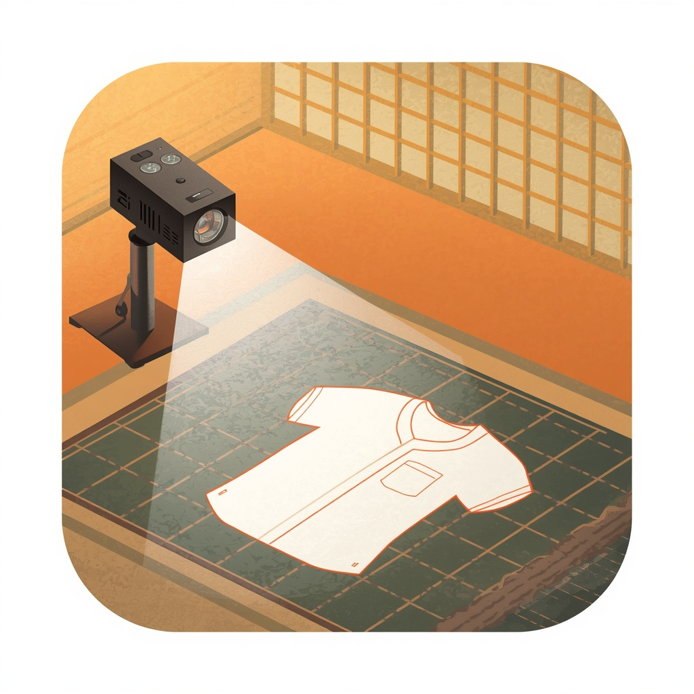

<!DOCTYPE html>
<html lang="en"><head><meta charset="UTF-8"/>
<meta name="viewport" content="width=device-width, initial-scale=1.0"/>
<title>Project Linea</title>
<style>html,body,#root{margin:0;padding:0;height:100%;width:100%;}*{box-sizing:border-box;}</style>
<script crossorigin src="https://cdnjs.cloudflare.com/ajax/libs/react/18.2.0/umd/react.production.min.js"></script>
<script crossorigin src="https://cdnjs.cloudflare.com/ajax/libs/react-dom/18.2.0/umd/react-dom.production.min.js"></script>
<script src="https://cdnjs.cloudflare.com/ajax/libs/babel-standalone/7.23.6/babel.min.js"></script>
</head><body><div id="root"></div>
<script type="text/babel" data-presets="react">

const { useState, useEffect, useRef, useCallback, useMemo } = React;


/* ============================================================================
   PROJECT LINEA
   Single-file client-side app. PDF.js loaded from cdnjs at runtime.
   Core: one homography (design-space -> screen-space) drives the grid AND the
   pattern, so projected lines land at true real-world scale despite keystone.
   ============================================================================ */

/* ---------------------------------------------------------------------------
   THEMES (Japandi — warm neutrals, restrained accents)
   --------------------------------------------------------------------------- */
const THEMES = {
  nordicLight: {
    name: "Nordic Light",
    bg: "#f8fafc", panel: "#ffffff", panel2: "#f1f5f9", ink: "#0f172a",
    sub: "#64748b", line: "#e2e8f0", accent: "#2563eb", accentSoft: "#dbeafe",
    grid: "#2563eb", projBg: "#000000", projGrid: "#00f0ff", projLine: "#ffffff",
  },
  fjordSlate: {
    name: "Fjord Slate",
    bg: "#0f172a", panel: "#1e293b", panel2: "#111827", ink: "#f8fafc",
    sub: "#94a3b8", line: "#334155", accent: "#0d9488", accentSoft: "#115e59",
    grid: "#0d9488", projBg: "#000000", projGrid: "#2dd4bf", projLine: "#ffffff",
  },
  birchSage: {
    name: "Birch & Sage",
    bg: "#f4f6f4", panel: "#ffffff", panel2: "#edf1ed", ink: "#1c241c",
    sub: "#5c6b5c", line: "#e2e8e2", accent: "#2d6a4f", accentSoft: "#d8f3dc",
    grid: "#2d6a4f", projBg: "#000000", projGrid: "#52b788", projLine: "#ffffff",
  },
  stockholmMist: {
    name: "Stockholm Mist",
    bg: "#f1f5f9", panel: "#ffffff", panel2: "#e2e8f0", ink: "#1e293b",
    sub: "#475569", line: "#cbd5e1", accent: "#991b1b", accentSoft: "#fee2e2",
    grid: "#991b1b", projBg: "#000000", projGrid: "#ef4444", projLine: "#ffffff",
  },
  gothenburgDusk: {
    name: "Gothenburg Dusk",
    bg: "#0b0f19", panel: "#151e2e", panel2: "#0e131f", ink: "#f3f4f6",
    sub: "#9ca3af", line: "#1f2937", accent: "#06b6d4", accentSoft: "#164e63",
    grid: "#06b6d4", projBg: "#000000", projGrid: "#22d3ee", projLine: "#ffffff",
  },
  copenhagenSky: {
    name: "Copenhagen Sky",
    bg: "#e2e8f0", panel: "#ffffff", panel2: "#f1f5f9", ink: "#1e293b",
    sub: "#64748b", line: "#cbd5e1", accent: "#1d4ed8", accentSoft: "#dbeafe",
    grid: "#1d4ed8", projBg: "#000000", projGrid: "#3b82f6", projLine: "#ffffff",
  },
};

/* ---------------------------------------------------------------------------
   HOMOGRAPHY MATH
   Solve 3x3 H mapping 4 source pts (design space rectangle) -> 4 dest pts
   (the dragged screen quad). Standard 4-point DLT solving 8 unknowns.
   --------------------------------------------------------------------------- */
function solveLinear(A, b) {
  // Gaussian elimination with partial pivoting. A is n x n, b length n.
  const n = b.length;
  const M = A.map((row, i) => [...row, b[i]]);
  for (let col = 0; col < n; col++) {
    let piv = col;
    for (let r = col + 1; r < n; r++)
      if (Math.abs(M[r][col]) > Math.abs(M[piv][col])) piv = r;
    [M[col], M[piv]] = [M[piv], M[col]];
    const d = M[col][col];
    if (Math.abs(d) < 1e-12) continue;
    for (let c = col; c <= n; c++) M[col][c] /= d;
    for (let r = 0; r < n; r++) {
      if (r === col) continue;
      const f = M[r][col];
      for (let c = col; c <= n; c++) M[r][c] -= f * M[col][c];
    }
  }
  return M.map((row) => row[n]);
}

// src,dst: arrays of 4 [x,y]. Returns 3x3 matrix (row-major length 9).
function computeHomography(src, dst) {
  const A = [];
  const b = [];
  for (let i = 0; i < 4; i++) {
    const [x, y] = src[i];
    const [u, v] = dst[i];
    A.push([x, y, 1, 0, 0, 0, -u * x, -u * y]);
    b.push(u);
    A.push([0, 0, 0, x, y, 1, -v * x, -v * y]);
    b.push(v);
  }
  const h = solveLinear(A, b);
  return [h[0], h[1], h[2], h[3], h[4], h[5], h[6], h[7], 1];
}

function applyH(H, x, y) {
  const X = H[0] * x + H[1] * y + H[2];
  const Y = H[3] * x + H[4] * y + H[5];
  const W = H[6] * x + H[7] * y + H[8];
  return [X / W, Y / W];
}

function isConvex(pts) {
  if (!pts || pts.length !== 4) return false;
  const cross = (p1, p2, p3) => {
    const dx1 = p2[0] - p1[0];
    const dy1 = p2[1] - p1[1];
    const dx2 = p3[0] - p2[0];
    const dy2 = p3[1] - p2[1];
    return dx1 * dy2 - dy1 * dx2;
  };
  const d0 = cross(pts[0], pts[1], pts[2]);
  const d1 = cross(pts[1], pts[2], pts[3]);
  const d2 = cross(pts[2], pts[3], pts[0]);
  const d3 = cross(pts[3], pts[0], pts[1]);
  return (d0 > 0 && d1 > 0 && d2 > 0 && d3 > 0) || 
         (d0 < 0 && d1 < 0 && d2 < 0 && d3 < 0);
}

/* ---------------------------------------------------------------------------
   PERSISTENCE
   --------------------------------------------------------------------------- */
const LS_KEY = "project_linea_v2";
function loadState() {
  try {
    const raw = localStorage.getItem(LS_KEY);
    return raw ? JSON.parse(raw) : null;
  } catch {
    return null;
  }
}
function saveState(s) {
  try {
    localStorage.setItem(LS_KEY, JSON.stringify(s));
  } catch {}
}

/* ---------------------------------------------------------------------------
   PDF.js loader (cdnjs)
   --------------------------------------------------------------------------- */
const PDFJS_VER = "3.11.174";
function loadPdfJs() {
  if (window.pdfjsLib) return Promise.resolve(window.pdfjsLib);
  return new Promise((res, rej) => {
    const s = document.createElement("script");
    s.src = `https://cdnjs.cloudflare.com/ajax/libs/pdf.js/${PDFJS_VER}/pdf.min.js`;
    s.onload = () => {
      window.pdfjsLib.GlobalWorkerOptions.workerSrc =
        `https://cdnjs.cloudflare.com/ajax/libs/pdf.js/${PDFJS_VER}/pdf.worker.min.js`;
      res(window.pdfjsLib);
    };
    s.onerror = rej;
    document.head.appendChild(s);
  });
}

/* ---------------------------------------------------------------------------
   PAGE SIZE PRESETS (mm)
   --------------------------------------------------------------------------- */
const PAGE_SIZES = {
  A4: { w: 210, h: 297 }, A3: { w: 297, h: 420 }, A0: { w: 841, h: 1189 },
  Letter: { w: 215.9, h: 279.4 }, Legal: { w: 215.9, h: 355.6 },
};
const MM_PER_IN = 25.4;

/* ---------------------------------------------------------------------------
   CUTTING-MAT BOARD PRESETS
   Physical fabric-cutting mats. Defined in inches, stored in mm internally.
   Dimensions given short × long (portrait); the orientation toggle swaps them.
   --------------------------------------------------------------------------- */
const MAT_SIZES_IN = {
  '9 × 12 in': { w: 9, h: 12 },
  '12 × 18 in': { w: 12, h: 18 },
  '18 × 24 in': { w: 18, h: 24 },
  '24 × 36 in': { w: 24, h: 36 },
  '36 × 48 in': { w: 36, h: 48 },
  '36 × 60 in': { w: 36, h: 60 },
};
const MAT_SIZES = Object.fromEntries(
  Object.entries(MAT_SIZES_IN).map(([k, v]) => [k, { w: v.w * MM_PER_IN, h: v.h * MM_PER_IN }])
);

/* ---------------------------------------------------------------------------
   DASH SIGNATURE ENGINE  (verified against Elbe A–O and Mood 34–52 PDFs)

   A size = a distinct dash array. We do NOT bucket into named styles (that
   collapses near-identical sizes). Instead we keep the raw on/off pattern as a
   canonical signature, detect the pattern's legend (a column of short dashed
   swatches beside size labels), and then SNAP every stroke on every page to the
   nearest legend signature. Strokes matching nothing stay "construction".
   --------------------------------------------------------------------------- */

// Round + drop trailing zeros so PDF jitter (e.g. 21.9 vs 22.1) collapses.
function canonDash(arr) {
  if (!arr || arr.length === 0) return "SOLID";
  let a = arr.map((n) => Math.round(n * 10) / 10);
  while (a.length > 2 && a[a.length - 1] === 0 && a[a.length - 2] === 0) a = a.slice(0, -2);
  if (a.every((x) => x === 0)) return "SOLID";
  return a.join("/");
}

// Parse a canonical signature back into numbers (null for SOLID).
function sigToArray(sig) {
  if (sig === "SOLID") return [];
  return sig.split("/").map(Number);
}

// Similarity between two signatures: same length, each element within tol%.
function dashSimilar(sigA, sigB, tol = 0.22) {
  if (sigA === "SOLID" || sigB === "SOLID") return sigA === sigB;
  const a = sigToArray(sigA), b = sigToArray(sigB);
  if (a.length !== b.length) return false;
  for (let i = 0; i < a.length; i++) {
    if (Math.abs(a[i] - b[i]) > tol * Math.max(a[i], b[i], 1)) return false;
  }
  return true;
}

// Reduce a repeating dash pattern to its fundamental period, so the same dash
// captured as "X/Y" on one stroke and "X/Y/X/Y" on another compares equal.
function reducePeriod(a) {
  for (let p = 1; p <= a.length / 2; p++) {
    if (a.length % p !== 0) continue;
    let ok = true;
    for (let i = p; i < a.length; i++) {
      const base = a[i % p];
      if (Math.abs(a[i] - base) > Math.max(base, a[i], 1) * 0.15) { ok = false; break; }
    }
    if (ok) return a.slice(0, p);
  }
  return a;
}

// Distance metric to pick the NEAREST legend signature for snapping.
// Two regimes:
//  • Normal dashes: MAX per-element relative deviation, so every dash element
//    must match closely (keeps 2/2, 4/4, 8/4 etc. cleanly separated).
//  • Near-solid LONG dashes (a big first element with a tiny gap, e.g. H 30.7/0.8
//    or O 113.4/11.3): the long dash LENGTH is unreliable because clipping/
//    flattening cuts the dash at different points (H shows up as anything from
//    30 to 43). So we compare the gap-to-dash RATIO instead, which is stable per
//    line style. This snaps every H fragment to H and every O to O, while still
//    separating H (ratio ~0.03) from O (ratio ~0.10) and from a real 28/14 line.
// Repeating patterns are period-reduced first so X/Y and X/Y/X/Y are equivalent.
function dashDistance(sigA, sigB) {
  if (sigA === "SOLID" || sigB === "SOLID") return sigA === sigB ? 0 : Infinity;
  const a = reducePeriod(sigToArray(sigA));
  const b = reducePeriod(sigToArray(sigB));
  if (a.length !== b.length) return Infinity;
  const longish = (arr) => {
    const mx = Math.max(...arr);
    const rest = arr.filter((x) => x !== mx);
    const avgRest = rest.length ? rest.reduce((s, x) => s + x, 0) / rest.length : 0;
    return mx > 20 && mx > avgRest * 6;
  };
  if (longish(a) && longish(b)) {
    const ra = Math.min(...a) / Math.max(...a);
    const rb = Math.min(...b) / Math.max(...b);
    return Math.abs(ra - rb) / Math.max(ra, rb, 0.01);
  }
  let worst = 0;
  for (let i = 0; i < a.length; i++) {
    const dev = Math.abs(a[i] - b[i]) / Math.max(a[i], b[i], 1);
    if (dev > worst) worst = dev;
  }
  return worst;
}

// Snap an observed signature to the closest legend entry (or null if too far).
function snapToLegend(sig, legendSigs, tol = 0.18) {
  let best = null, bd = Infinity;
  for (const ls of legendSigs) {
    const d = dashDistance(sig, ls);
    if (d < bd) { bd = d; best = ls; }
  }
  return bd <= tol ? best : null;
}

// Render a dash array into a small swatch canvas, scaled to fit width.
function dashToScreenPattern(sig) {
  if (sig === "SOLID") return [];
  const a = sigToArray(sig);
  const sum = a.reduce((s, x) => s + x, 0) || 1;
  const scale = Math.min(3, 40 / sum); // keep swatches legible
  return a.map((x) => Math.max(0.5, x * scale));
}

/* ---------------------------------------------------------------------------
   VECTOR EXTRACTION from a PDF.js page operator list.
   Returns { strokes:[{sig, pts:[[x,y]...], width}], textItems:[{str,x,y}] }
   in PDF page coordinates (y-down, scaled by `scale`).
   --------------------------------------------------------------------------- */
// Clip a polyline to an axis-aligned box, returning a list of in-bounds polyline
// pieces. Uses Liang-Barsky on each segment; consecutive segments that stay
// inside (and connect) are stitched into one continuous piece so a seam line
// crossing the page stays unbroken within the page.
function clipPolyline(pts, xmin, ymin, xmax, ymax) {
  const pieces = [];
  let cur = [];
  const clipSeg = (x0, y0, x1, y1) => {
    let t0 = 0, t1 = 1;
    const dx = x1 - x0, dy = y1 - y0;
    const p = [-dx, dx, -dy, dy];
    const q = [x0 - xmin, xmax - x0, y0 - ymin, ymax - y0];
    for (let i = 0; i < 4; i++) {
      if (p[i] === 0) { if (q[i] < 0) return null; }
      else {
        const r = q[i] / p[i];
        if (p[i] < 0) { if (r > t1) return null; if (r > t0) t0 = r; }
        else { if (r < t0) return null; if (r < t1) t1 = r; }
      }
    }
    return [x0 + t0 * dx, y0 + t0 * dy, x0 + t1 * dx, y0 + t1 * dy, t0, t1];
  };
  for (let i = 0; i < pts.length - 1; i++) {
    const [x0, y0] = pts[i], [x1, y1] = pts[i + 1];
    const c = clipSeg(x0, y0, x1, y1);
    if (!c) { if (cur.length) { pieces.push(cur); cur = []; } continue; }
    const [cx0, cy0, cx1, cy1, t0, t1] = c;
    if (cur.length === 0) cur.push([cx0, cy0]);
    else {
      const last = cur[cur.length - 1];
      if (Math.abs(last[0] - cx0) > 0.5 || Math.abs(last[1] - cy0) > 0.5) {
        pieces.push(cur); cur = [[cx0, cy0]];
      }
    }
    cur.push([cx1, cy1]);
    if (t1 < 1) { pieces.push(cur); cur = []; }
  }
  if (cur.length) pieces.push(cur);
  return pieces;
}

// Flatten a cubic Bézier into line segments appended to `pts`. p0 is the last
// point already in `pts`; (c1,c2,end) are the three control/end points. The
// number of segments scales with the curve's rough length so long shallow
// curves (e.g. horizontal seam lines spanning many page-widths) stay smooth
// instead of breaking into a few visible straight chords.
function flattenCubic(pts, c1x, c1y, c2x, c2y, ex, ey) {
  const p0 = pts[pts.length - 1];
  if (!p0) { pts.push([ex, ey]); return; }
  const [x0, y0] = p0;
  // estimate length via control polygon
  const d = Math.hypot(c1x - x0, c1y - y0) + Math.hypot(c2x - c1x, c2y - c1y) + Math.hypot(ex - c2x, ey - c2y);
  // ~1 segment per 5 px of curve, clamped generously so long shallow seam
  // lines stay visually smooth even when projected large.
  const steps = Math.max(8, Math.min(220, Math.ceil(d / 5)));
  for (let i = 1; i <= steps; i++) {
    const t = i / steps, mt = 1 - t;
    const a = mt * mt * mt, b = 3 * mt * mt * t, c = 3 * mt * t * t, dd = t * t * t;
    pts.push([
      a * x0 + b * c1x + c * c2x + dd * ex,
      a * y0 + b * c1y + c * c2y + dd * ey,
    ]);
  }
}

async function extractPageVectors(page, scale, cropMarginIn = 0) {
  // cropMarginIn: how much to trim off EACH edge of every page before tiling,
  // in inches. Tiled patterns vary: some print edge-to-edge (margin 0, e.g.
  // Fremantle), others include an overlap/glue margin that must be cut so tiles
  // snap together. We clip strokes to the inset rectangle and shift them so the
  // trimmed top-left becomes (0,0); the effective tile size shrinks by 2*margin.
  const OPS = window.pdfjsLib.OPS;
  const opList = await page.getOperatorList();
  const vp = page.getViewport({ scale });
  const mPx = Math.max(0, cropMarginIn) * 72 * scale; // margin in device px

  // matrix stack
  let ctm = vp.transform.slice(); // base device transform
  const stack = [];
  const mul = (m, n) => [
    m[0] * n[0] + m[2] * n[1], m[1] * n[0] + m[3] * n[1],
    m[0] * n[2] + m[2] * n[3], m[1] * n[2] + m[3] * n[3],
    m[0] * n[4] + m[2] * n[5] + m[4], m[1] * n[4] + m[3] * n[5] + m[5],
  ];
  const apply = (m, x, y) => [m[0] * x + m[2] * y + m[4], m[1] * x + m[3] * y + m[5]];

  let curDash = [];
  let lineWidth = 1;
  let cur = []; // current subpath pts in user space
  let subpaths = []; // collected subpaths for the pending path
  const strokes = [];

  const fn = opList.fnArray, args = opList.argsArray;
  for (let i = 0; i < fn.length; i++) {
    const a = args[i];
    switch (fn[i]) {
      case OPS.save:
        stack.push({
          ctm: ctm.slice(),
          curDash: curDash.slice(),
          lineWidth: lineWidth
        });
        break;
      case OPS.restore:
        if (stack.length) {
          const state = stack.pop();
          ctm = state.ctm;
          curDash = state.curDash;
          lineWidth = state.lineWidth;
        }
        break;
      case OPS.transform: ctm = mul(ctm, a); break;
      case OPS.setDash: curDash = (a[0] || []).slice(); break;
      case OPS.setLineWidth: lineWidth = a[0]; break;
      case OPS.moveTo: cur = [[a[0], a[1]]]; subpaths.push(cur); break;
      case OPS.lineTo: cur.push([a[0], a[1]]); break;
      case OPS.curveTo:
        // cubic from current point; flatten into smooth segments
        flattenCubic(cur, a[0], a[1], a[2], a[3], a[4], a[5]); break;
      case OPS.curveTo2: {
        const p0 = cur[cur.length - 1] || [a[0], a[1]];
        flattenCubic(cur, p0[0], p0[1], a[0], a[1], a[2], a[3]); break;
      }
      case OPS.curveTo3:
        flattenCubic(cur, a[0], a[1], a[2], a[3], a[2], a[3]); break;
      case OPS.rectangle: {
        const x = a[0], y = a[1], w = a[2], h = a[3];
        cur = [[x, y], [x + w, y], [x + w, y + h], [x, y + h], [x, y]];
        subpaths.push(cur);
        break;
      }
      case OPS.constructPath: {
        // newer PDF.js batches path ops here: a[0]=ops, a[1]=coords
        const pops = a[0], coords = a[1]; let ci = 0;
        for (let k = 0; k < pops.length; k++) {
          const op = pops[k];
          if (op === OPS.moveTo) { cur = [[coords[ci], coords[ci + 1]]]; subpaths.push(cur); ci += 2; }
          else if (op === OPS.lineTo) { cur.push([coords[ci], coords[ci + 1]]); ci += 2; }
          else if (op === OPS.curveTo) {
            // cubic with 3 control points; flatten from current point
            flattenCubic(cur, coords[ci], coords[ci + 1], coords[ci + 2], coords[ci + 3], coords[ci + 4], coords[ci + 5]);
            ci += 6;
          }
          else if (op === OPS.curveTo2) {
            const p0 = cur[cur.length - 1] || [coords[ci], coords[ci + 1]];
            flattenCubic(cur, p0[0], p0[1], coords[ci], coords[ci + 1], coords[ci + 2], coords[ci + 3]);
            ci += 4;
          }
          else if (op === OPS.curveTo3) {
            flattenCubic(cur, coords[ci], coords[ci + 1], coords[ci + 2], coords[ci + 3], coords[ci + 2], coords[ci + 3]);
            ci += 4;
          }
          else if (op === OPS.rectangle) {
            const x = coords[ci], y = coords[ci + 1], w = coords[ci + 2], h = coords[ci + 3];
            cur = [[x, y], [x + w, y], [x + w, y + h], [x, y + h], [x, y]];
            subpaths.push(cur);
            ci += 4;
          }
          else if (op === OPS.closePath) {
            if (cur.length >= 2) {
              const start = cur[0];
              const end = cur[cur.length - 1];
              if (Math.abs(start[0] - end[0]) > 0.01 || Math.abs(start[1] - end[1]) > 0.01) {
                cur.push([start[0], start[1]]);
              }
            }
          }
          else { ci += 0; }
        }
        break;
      }
      case OPS.closePath:
        if (cur.length >= 2) {
          const start = cur[0];
          const end = cur[cur.length - 1];
          if (Math.abs(start[0] - end[0]) > 0.01 || Math.abs(start[1] - end[1]) > 0.01) {
            cur.push([start[0], start[1]]);
          }
        }
        break;
      case OPS.stroke:
      case OPS.closeStroke: {
        const sig = canonDash(curDash);
        const all = subpaths.length ? subpaths : (cur.length ? [cur] : []);
        for (const sp of all) {
          if (sp.length < 2) continue;
          const dev = sp.map(([x, y]) => apply(ctm, x, y));
          // Clip to the (optionally inset) page rectangle. The PDF draws strokes
          // that extend well beyond the page edge; the printed page only shows
          // the part inside. Clipping each tile to its bounds — minus any crop
          // margin — is what makes adjacent tiles line up seamlessly. Strokes are
          // then shifted so the trimmed top-left is the origin.
          const pieces = clipPolyline(dev, mPx, mPx, vp.width - mPx, vp.height - mPx);
          for (const piece of pieces) {
            if (piece.length >= 2) {
              const shifted = mPx ? piece.map(([x, y]) => [x - mPx, y - mPx]) : piece;
              strokes.push({ sig, pts: shifted, width: lineWidth });
            }
          }
        }
        cur = []; subpaths = [];
        break;
      }
      case OPS.endPath: case OPS.fill: case OPS.eoFill:
        cur = []; subpaths = []; break;
      default: break;
    }
  }

  // text items (for legend labels) via getTextContent — shifted to trimmed origin
  let textItems = [];
  try {
    const tc = await page.getTextContent();
    textItems = tc.items.map((it) => {
      const t = it.transform;
      const v = vp.transform;
      const combinedA = v[0] * t[0] + v[2] * t[1];
      const combinedB = v[1] * t[0] + v[3] * t[1];
      const angle = Math.atan2(combinedB, combinedA);
      const fontScale = Math.hypot(combinedA, combinedB);
      const [x, y] = apply(v, t[4], t[5]);
      return { str: it.str, x: x - mPx, y: y - mPx, angle, fontScale };
    });
  } catch {}

  // Real page size: PDF points / 72 = inches. This is the TRUE physical tile
  // size; subtract the crop margin from BOTH edges so scale stays correct.
  const vp1 = page.getViewport({ scale: 1 });
  const realWIn = vp1.width / 72 - 2 * Math.max(0, cropMarginIn);
  const realHIn = vp1.height / 72 - 2 * Math.max(0, cropMarginIn);
  return {
    strokes, textItems,
    width: vp.width - 2 * mPx, height: vp.height - 2 * mPx,
    realWIn, realHIn,
  };
}

/* ---------------------------------------------------------------------------
   LEGEND DETECTION across all pages.
   A legend = a vertical column of short dashed swatch strokes, each beside a
   size label ("A" / "SIZE 34"). We find the page with the most distinct short
   dashed strokes arranged in a column, then pair each with nearest label text.
   Returns [{sig, label}] or [] if none found.
   --------------------------------------------------------------------------- */
function detectLegend(pageVectors, forcedPageIdx = null) {
  // --- PASS A: Vertical column of horizontal swatches ---
  const labelTextA = (texts, row) => {
    let cand = null, cd = 1e9;
    for (const t of texts) {
      if (!t.str.trim()) continue;
      const dy = Math.abs(t.y - row.y);
      const dx = t.x - row.x1;
      if (dy < 16 && dx > -12 && dx < 320) {
        const d = dy + Math.abs(dx) * 0.1;
        if (d < cd) { cd = d; cand = t.str.trim(); }
      }
    }
    if (cand) {
      const m = cand.match(/(?:SIZE\s*)?([A-Z0-9]{1,4})\b/i);
      if (m) return m[1].toUpperCase();
    }
    return null;
  };

  const pageRowsA = (pv) => {
    let sw = pv.strokes.filter((s) => {
      if (s.sig === "SOLID") return false;
      const xs = s.pts.map((p) => p[0]), ys = s.pts.map((p) => p[1]);
      const w = Math.max(...xs) - Math.min(...xs);
      const h = Math.max(...ys) - Math.min(...ys);
      return w > 15 && w < 420 && h < 8; // wide-ish, near-horizontal
    });
    sw.sort((a, b) =>
      a.pts[0][1] - b.pts[0][1] ||
      Math.min(...a.pts.map((p) => p[0])) - Math.min(...b.pts.map((p) => p[0])));
    const merged = [];
    for (const s of sw) {
      const y = s.pts[0][1];
      const x0 = Math.min(...s.pts.map((p) => p[0]));
      const x1 = Math.max(...s.pts.map((p) => p[0]));
      const last = merged[merged.length - 1];
      const compatible = last && Math.abs(last.y - y) < 5 &&
        (last.sig === s.sig || last.sig.startsWith(s.sig) || s.sig.startsWith(last.sig));
      if (compatible) {
        last.x0 = Math.min(last.x0, x0);
        last.x1 = Math.max(last.x1, x1);
        if (s.sig.length > last.sig.length) last.sig = s.sig;
      } else {
        merged.push({ y, sig: s.sig, x0, x1 });
      }
    }
    const rows = [];
    for (const m of merged) {
      if (!rows.length || Math.abs(rows[rows.length - 1].y - m.y) > 6) rows.push(m);
    }
    return rows;
  };

  const runsOfA = (rows) => {
    if (rows.length < 3) return [];
    const out = [];
    let cur = [rows[0]];
    let med = 0;
    for (let i = 1; i < rows.length; i++) {
      const prev = cur[cur.length - 1];
      const gap = rows[i].y - prev.y;
      const sameX = Math.abs(rows[i].x0 - prev.x0) < 32;
      if (cur.length >= 2) {
        const gs = [];
        for (let k = 1; k < cur.length; k++) gs.push(cur[k].y - cur[k - 1].y);
        gs.sort((a, b) => a - b);
        med = gs[Math.floor(gs.length / 2)] || med;
      } else if (med === 0) {
        med = gap;
      }
      if (sameX && gap < med * 2.3 + 6) cur.push(rows[i]);
      else { out.push(cur); cur = [rows[i]]; }
    }
    out.push(cur);
    return out.filter((r) => r.length >= 3);
  };

  const bestRunForPageA = (pv) => {
    if (!pv) return null;
    const rows = pageRowsA(pv);
    const runs = runsOfA(rows);
    if (!runs.length) return null;
    const texts = pv.textItems || [];
    let best = null;
    for (const run of runs) {
      run.forEach((r) => { r.label = labelTextA(texts, r); });
      const labeled = run.filter((r) => r.label).length;
      const score = run.length * 10 + labeled;
      if (!best || score > best.score) best = { run, labeled, score, len: run.length };
    }
    return best;
  };

  // --- PASS B: Horizontal row of vertical swatches ---
  const labelTextB = (texts, col) => {
    let cand = null, cd = 1e9;
    for (const t of texts) {
      if (!t.str.trim()) continue;
      const dy = Math.min(Math.abs(t.y - col.y1), Math.abs(t.y - col.y0));
      const dx = Math.abs(t.x - col.x);
      if (dy < 24 && dx < 24) {
        const d = dy + dx * 0.5;
        if (d < cd) { cd = d; cand = t.str.trim(); }
      }
    }
    if (cand) {
      const m = cand.match(/(?:SIZE\s*)?([A-Z0-9]{1,4})\b/i);
      if (m) return m[1].toUpperCase();
    }
    return null;
  };

  const pageColsB = (pv) => {
    const sw = pv.strokes.filter((s) => {
      const xs = s.pts.map((p) => p[0]), ys = s.pts.map((p) => p[1]);
      const w = Math.max(...xs) - Math.min(...xs);
      const h = Math.max(...ys) - Math.min(...ys);
      return w < 8 && h > 1; // near-vertical segments
    });
    sw.sort((a, b) =>
      Math.min(...a.pts.map((p) => p[0])) - Math.min(...b.pts.map((p) => p[0])) ||
      Math.min(...a.pts.map((p) => p[1])) - Math.min(...b.pts.map((p) => p[1])));
    
    const merged = [];
    for (const s of sw) {
      const x = s.pts[0][0];
      const y0 = Math.min(...s.pts.map((p) => p[1]));
      const y1 = Math.max(...s.pts.map((p) => p[1]));
      const last = merged[merged.length - 1];
      const compatible = last && Math.abs(last.x - x) < 5 &&
        (y0 <= last.y1 + 20 && y1 >= last.y0 - 20);
      if (compatible) {
        last.y0 = Math.min(last.y0, y0);
        last.y1 = Math.max(last.y1, y1);
        if (last.sig === "SOLID" && s.sig !== "SOLID") last.sig = s.sig;
        else if (s.sig !== "SOLID" && s.sig.length > last.sig.length) last.sig = s.sig;
      } else {
        merged.push({ x, sig: s.sig, y0, y1 });
      }
    }
    
    const cols = [];
    for (const m of merged) {
      const h = m.y1 - m.y0;
      if (h > 80 && h < 420) {
        if (!cols.length || Math.abs(cols[cols.length - 1].x - m.x) > 6) {
          cols.push(m);
        }
      }
    }
    return cols;
  };

  const runsOfB = (cols) => {
    if (cols.length < 3) return [];
    const out = [];
    let cur = [cols[0]];
    let med = 0;
    for (let i = 1; i < cols.length; i++) {
      const prev = cur[cur.length - 1];
      const gap = cols[i].x - prev.x;
      const sameY = Math.abs(cols[i].y0 - prev.y0) < 40;
      if (cur.length >= 2) {
        const gs = [];
        for (let k = 1; k < cur.length; k++) gs.push(cur[k].x - cur[k - 1].x);
        gs.sort((a, b) => a - b);
        med = gs[Math.floor(gs.length / 2)] || med;
      } else if (med === 0) {
        med = gap;
      }
      if (sameY && gap < med * 2.3 + 6) cur.push(cols[i]);
      else { out.push(cur); cur = [cols[i]]; }
    }
    out.push(cur);
    return out.filter((r) => r.length >= 3);
  };

  const bestRunForPageB = (pv) => {
    if (!pv) return null;
    const cols = pageColsB(pv);
    const runs = runsOfB(cols);
    if (!runs.length) return null;
    const texts = pv.textItems || [];
    let best = null;
    for (const run of runs) {
      run.forEach((r) => { r.label = labelTextB(texts, r); });
      const labeled = run.filter((r) => r.label).length;
      const score = run.length * 10 + labeled;
      if (!best || score > best.score) best = { run, labeled, score, len: run.length };
    }
    return best;
  };

  const bestRunForPage = (pv) => {
    const bA = bestRunForPageA(pv);
    const bB = bestRunForPageB(pv);
    if (!bA && !bB) return null;
    if (bA && !bB) return bA;
    if (!bA && bB) return bB;
    return bA.score >= bB.score ? bA : bB;
  };

  const finalize = (run) => {
    return run.map((r, i) => ({ sig: r.sig, label: r.label || `Size ${i + 1}` }));
  };

  if (forcedPageIdx != null) {
    const b = bestRunForPage(pageVectors[forcedPageIdx]);
    return b ? finalize(b.run) : [];
  }

  let best = null;
  pageVectors.forEach((pv) => {
    const b = bestRunForPage(pv);
    if (b && (!best || b.score > best.score)) best = b;
  });
  if (!best) return [];
  return finalize(best.run);
}

/* Map a detected legend [{sig,label}] into the pattern.sizes UI model. Shared
   by the initial load and any later re-detection so colors/fields stay
   consistent. */
const SIZE_PALETTE = ["#1a1a1a", "#c0392b", "#2980b9", "#27ae60", "#8e44ad",
  "#d35400", "#16a085", "#9b59b6", "#e74c3c", "#2c3e50",
  "#e67e22", "#7f8c8d", "#3498db", "#2ecc71", "#d35400"];
function buildSizesFromLegend(legend) {
  return legend.map((L, i) => ({
    id: i, sig: L.sig, label: L.label,
    color: SIZE_PALETTE[i % SIZE_PALETTE.length], thickness: 1.4, visible: true, invert: false,
  }));
}

/* Normalize a persisted pattern so old localStorage data (pre-slots model)
   can't crash the new code. Fills any missing field with a safe default and
   converts the old assign-map layout into the new slots list. */
function migratePattern(p) {
  const base = {
    loaded: false, pageSize: "A4", numPages: 0, excluded: [],
    gridCols: 6, slots: [], sizes: [], selectedSize: "all", selectMode: "solo",
    legendFound: false, legendPageIdx: null, invertAll: false, transparency: 1, pageBgColor: "#ffffff",
    cropMarginIn: 0,
    lineColor: "#1a1a1a", highlightColor: "#e2725b", rotate: 0, scale: 1,
    opacity: 1, assembled: false, thumbs: [],
  };
  if (!p || typeof p !== "object") return base;
  const m = { ...base, ...p };
  if (!Array.isArray(m.slots)) m.slots = [];
  if (!Array.isArray(m.sizes)) m.sizes = [];
  if (!Array.isArray(m.excluded)) m.excluded = [];
  if (!Array.isArray(m.thumbs)) m.thumbs = [];
  if (m.slots.length === 0 && p.assign && typeof p.assign === "object") {
    const pages = Object.values(p.assign).filter((v) => typeof v === "number");
    m.slots = pages.map((pg) => ({ type: "page", page: pg }));
  }
  // The rendered page canvases and extracted vectors live only in memory and
  // are gone after any reload. So a restored pattern can never be "loaded" —
  // reset it so the user re-opens the PDF, while keeping their size labels/colors.
  m.loaded = false;
  m.assembled = false;
  m.numPages = 0;
  m.slots = [];
  m.thumbs = [];
  delete m.assign; delete m.gridRows;
  return m;
}

/* ===========================================================================
   ROOT COMPONENT
   =========================================================================== */
function ProjectLinea() {
  const persisted = useMemo(() => loadState(), []);
  const [theme, setTheme] = useState(persisted?.theme || "nordicLight");
  const [tab, setTab] = useState("calibrate");
  const T = THEMES[theme] || THEMES["nordicLight"];

  /* ----- CALIBRATION STATE (single source of truth) ----- */
  const [cal, setCal] = useState(
    persisted?.cal || {
      boardPreset: "18 × 24 in",
      boardW: 18 * 25.4, boardH: 24 * 25.4, // in mm always internally
      unit: "in", // 'cm' | 'in'  (locks grid unit)
      cell: 1, // subdivision in locked unit
      orientation: "portrait",
      gridThickness: 1.2,
      circleSize: 16,
      gridColor: null, // overrides theme grid if set
      gridOpacity: 1,
      majorEvery: 5, // bold every Nth gridline (0 = off) — mimics a real mat
      projBg: "#000000", // projection background color (chosen via the in-projection toggle)
      cursorMode: "crosshair", // persisted cursor assist, used during projection too
      corners: null, // 4 screen pts [tl,tr,br,bl] or null -> auto
      scaleFactor: null, // px per (locked unit) in design space; null=auto
      saved: false,
    }
  );

  /* ----- PATTERN STATE ----- */
  const [pattern, setPattern] = useState(
    persisted?.pattern ? migratePattern(persisted.pattern) : {
      loaded: false,
      pageSize: "A4",
      numPages: 0,
      excluded: [], // page indices toggled out
      gridCols: 6, // layout flows into this many columns
      slots: [], // ordered list: { type:'page', page:i } | { type:'blank' }
      sizes: [], // {id,sig,label,color,thickness,visible,invert}
      selectedSize: "all",
      selectMode: "solo", // 'solo' | 'dim'
      legendFound: false,
      legendPageIdx: null, // null = auto-detect; number = user-chosen swatch page
      cropMarginIn: 0, // trim each page edge by this many inches before tiling
      invertAll: false,
      transparency: 1, // page backing opacity behind vector lines
      pageBgColor: "#ffffff",
      lineColor: "#1a1a1a",
      highlightColor: "#e2725b",
      rotate: 0,
      scale: 1,
      opacity: 1,
      assembled: false,
    }
  );

  /* ----- PROJECT POSITION STATE ----- */
  const [pos, setPos] = useState(
    persisted?.pos || { x: 0, y: 0, scale: 1, overlap: 0, projPageSize: "A4" }
  );

  // persist everything. Strip the heavy/ephemeral pattern fields — thumbnails
  // and rendered geometry can't be meaningfully restored (canvases are gone on
  // reload) and would bloat localStorage. Keep settings + size labels/colors.
  useEffect(() => {
    const { thumbs, slots, ...patternLite } = pattern;
    saveState({ theme, cal, pattern: { ...patternLite, loaded: false, assembled: false }, pos });
  }, [theme, cal, pattern, pos]);

  // PDF runtime (not persisted — re-rendered on demand)
  const pdfRef = useRef(null); // pdf doc
  const pageCanvasesRef = useRef([]); // rendered <canvas> per page
  const pageVectorsRef = useRef([]); // extracted vector strokes per page
  const legendRef = useRef([]); // detected legend [{sig,label}]
  const [pdfReady, setPdfReady] = useState(false);
  const [loadingPdf, setLoadingPdf] = useState(false);
  const fileBufferRef = useRef(persisted?.pdfBufferB64 ? "stored" : null);

  /* ===== styles ===== */
  const S = makeStyles(T);

  return (
    <div style={S.root}>
      <FontInjector T={T} />
      <header style={S.header}>
        <div style={S.brand}>
           { e.currentTarget.style.display = "none"; }}
          />
          <div>
            <div style={S.brandName}>PROJECT LINEA</div>
            <div style={S.brandSub}>pattern projector · true-scale calibration</div>
          </div>
        </div>
        <nav style={S.tabs}>
          {[
            ["calibrate", "Calibrate Board", "1"],
            ["load", "Load Pattern", "2"],
            ["project", "Project Pattern", "3"],
          ].map(([k, label, num]) => (
            <button
              key={k}
              onClick={() => setTab(k)}
              style={{ ...S.tab, ...(tab === k ? S.tabActive : {}) }}
            >
              <span style={{
                display: "inline-flex",
                alignItems: "center",
                justifyContent: "center",
                width: 16,
                height: 16,
                borderRadius: "50%",
                fontSize: 9,
                fontWeight: "bold",
                background: tab === k ? T.accent : T.line,
                color: tab === k ? "#ffffff" : T.sub,
                fontFamily: "'JetBrains Mono', monospace",
                transition: "all 0.2s ease"
              }}>{num}</span>
              <span>{label}</span>
            </button>
          ))}
        </nav>
        <div style={S.themeWrap}>
          <span style={S.themeLabel}>theme</span>
          <select
            value={theme}
            onChange={(e) => setTheme(e.target.value)}
            style={S.themeSelect}
          >
            {Object.entries(THEMES).map(([k, v]) => (
              <option key={k} value={k}>{v.name}</option>
            ))}
          </select>
        </div>
      </header>

      <main style={S.main}>
        {tab === "calibrate" && (
          <CalibrateTab T={T} S={S} cal={cal} setCal={setCal} />
        )}
        {tab === "load" && (
          <LoadTab
            T={T} S={S} pattern={pattern} setPattern={setPattern}
            pdfRef={pdfRef} pageCanvasesRef={pageCanvasesRef}
            pageVectorsRef={pageVectorsRef} legendRef={legendRef}
            pdfReady={pdfReady} setPdfReady={setPdfReady}
            loadingPdf={loadingPdf} setLoadingPdf={setLoadingPdf}
            onReady={() => setTab("project")}
          />
        )}
        {tab === "project" && (
          <ProjectTab
            T={T} S={S} cal={cal} setCal={setCal} pattern={pattern} setPattern={setPattern}
            pos={pos} setPos={setPos} pdfRef={pdfRef}
            pageCanvasesRef={pageCanvasesRef} pageVectorsRef={pageVectorsRef}
            legendRef={legendRef} pdfReady={pdfReady}
          />
        )}
      </main>
    </div>
  );
}

/* ===========================================================================
   GRID / HOMOGRAPHY HELPERS shared by tabs
   =========================================================================== */
// Build design-space rectangle dims in px from calibration.
// Fixed design-space resolution: design space is an abstract coordinate system
// at a constant pixels-per-unit. The homography (built from the board corners)
// maps design space onto the real, keystoned screen — so the REAL-WORLD scale
// lives in the homography + board dimensions, NOT here. (Earlier this used
// cal.scaleFactor, which is a screen-derived number and wrongly rescaled the
// whole pattern — that was the "pattern far too big" bug.)
const DESIGN_PPU = 60;
function designDims(cal) {
  const unitMM = cal.unit === "in" ? MM_PER_IN : 10;
  const w = cal.boardW / unitMM; // board width in locked units
  const h = cal.boardH / unitMM;
  const ppu = DESIGN_PPU;
  return { wUnits: w, hUnits: h, ppu, wPx: w * ppu, hPx: h * ppu };
}

// default corners: centered rect within container with margin
function defaultCorners(W, H, dd) {
  const aspect = dd.wPx / dd.hPx;
  let bw = W * 0.8, bh = bw / aspect;
  if (bh > H * 0.8) { bh = H * 0.8; bw = bh * aspect; }
  const x0 = (W - bw) / 2, y0 = (H - bh) / 2;
  return [
    [x0, y0], [x0 + bw, y0], [x0 + bw, y0 + bh], [x0, y0 + bh],
  ];
}

// Draw the calibration grid through homography H onto ctx.
function drawGrid(ctx, H, dd, opts) {
  const { color, thickness, opacity } = opts;
  const majorEvery = opts.majorEvery || 0; // bold every Nth line (0 = off)
  ctx.save();
  ctx.globalAlpha = opacity;
  ctx.strokeStyle = color;
  const cols = Math.round(dd.wUnits / opts.cell);
  const rows = Math.round(dd.hUnits / opts.cell);
  const cw = dd.wPx / cols, ch = dd.hPx / rows;
  const isMajor = (i) => majorEvery > 0 && i % majorEvery === 0;
  // vertical lines
  for (let i = 0; i <= cols; i++) {
    const x = i * cw;
    ctx.lineWidth = isMajor(i) ? thickness * 2 : thickness;
    ctx.beginPath();
    const [ax, ay] = applyH(H, x, 0);
    const [bx, by] = applyH(H, x, dd.hPx);
    ctx.moveTo(ax, ay); ctx.lineTo(bx, by);
    ctx.stroke();
  }
  for (let j = 0; j <= rows; j++) {
    const y = j * ch;
    ctx.lineWidth = isMajor(j) ? thickness * 2 : thickness;
    ctx.beginPath();
    const [ax, ay] = applyH(H, 0, y);
    const [bx, by] = applyH(H, dd.wPx, y);
    ctx.moveTo(ax, ay); ctx.lineTo(bx, by);
    ctx.stroke();
  }
  // bold border
  ctx.lineWidth = thickness * 2.5;
  ctx.beginPath();
  const c = [[0,0],[dd.wPx,0],[dd.wPx,dd.hPx],[0,dd.hPx]];
  c.forEach((p, i) => {
    const [px, py] = applyH(H, p[0], p[1]);
    if (i === 0) ctx.moveTo(px, py); else ctx.lineTo(px, py);
  });
  ctx.closePath(); ctx.stroke();
  ctx.restore();
}

function drawCornerHandles(ctx, corners, size, active, color) {
  corners.forEach(([x, y], i) => {
    ctx.save();
    ctx.strokeStyle = i === active ? "#e2725b" : color;
    ctx.lineWidth = i === active ? 3 : 2;
    ctx.beginPath();
    ctx.arc(x, y, size, 0, Math.PI * 2);
    ctx.stroke();
    // X through centre
    const r = size * 0.7;
    ctx.beginPath();
    ctx.moveTo(x - r, y - r); ctx.lineTo(x + r, y + r);
    ctx.moveTo(x + r, y - r); ctx.lineTo(x - r, y + r);
    ctx.stroke();
    ctx.restore();
  });
}

/* ===========================================================================
   TAB 1 — CALIBRATE
   =========================================================================== */
function CalibrateTab({ T, S, cal, setCal }) {
  const wrapRef = useRef(null);
  const canvasRef = useRef(null);
  const [dims, setDims] = useState({ w: 800, h: 600 });
  const [zoom, setZoom] = useState(1);
  // cursor assist mode is persisted in cal so it carries into projection.
  const cursorMode = (cal.cursorMode === "nudge") ? "crosshair" : (cal.cursorMode || "crosshair");
  const setCursorMode = (m) => setCal((c) => ({ ...c, cursorMode: m }));
  const [interaction, setInteraction] = useState("drag"); // drag|float
  const [active, setActive] = useState(0);
  const [floatPicked, setFloatPicked] = useState(false);
  const [mouse, setMouse] = useState({ x: 0, y: 0 });
  const draggingRef = useRef(null);
  const [projecting, setProjecting] = useState(false);

  const dd = useMemo(() => designDims(cal), [cal]);

  // working corners (local, until saved/edited)
  const [corners, setCorners] = useState(
    cal.corners || defaultCorners(dims.w, dims.h, dd)
  );
  useEffect(() => {
    if (!cal.corners) setCorners(defaultCorners(dims.w, dims.h, dd));
  }, [dims.w, dims.h, dd, cal.corners]);

  // resize observer
  useEffect(() => {
    const el = wrapRef.current;
    if (!el) return;
    const ro = new ResizeObserver(() => {
      setDims({ w: el.clientWidth, h: el.clientHeight });
    });
    ro.observe(el);
    setDims({ w: el.clientWidth, h: el.clientHeight });
    return () => ro.disconnect();
  }, []);

  const H = useMemo(() => {
    const src = [[0, 0], [dd.wPx, 0], [dd.wPx, dd.hPx], [0, dd.hPx]];
    // apply zoom around center
    const cx = dims.w / 2, cy = dims.h / 2;
    const zc = corners.map(([x, y]) => [
      cx + (x - cx) * zoom, cy + (y - cy) * zoom,
    ]);
    return computeHomography(src, zc);
  }, [corners, dd, zoom, dims]);

  // RENDER loop
  useEffect(() => {
    const cv = canvasRef.current;
    if (!cv) return;
    const dpr = window.devicePixelRatio || 1;
    cv.width = dims.w * dpr; cv.height = dims.h * dpr;
    cv.style.width = dims.w + "px"; cv.style.height = dims.h + "px";
    const ctx = cv.getContext("2d");
    ctx.setTransform(dpr, 0, 0, dpr, 0, 0);
    ctx.clearRect(0, 0, dims.w, dims.h);
    // Background: during projection use the user-chosen background color (toggled
    // live via the in-projection buttons); otherwise the panel color.
    const projBg = cal.projBg || "#000000";
    const bgIsDark = isColorDark(projBg);
    ctx.fillStyle = projecting ? projBg : T.panel2;
    ctx.fillRect(0, 0, dims.w, dims.h);

    // Grid uses the SAME color the user picked before projecting, so what they
    // set up is exactly what they get. On a dark projection background we lift a
    // too-dark grid color to stay visible.
    let gridColor = cal.gridColor || T.grid;
    if (projecting && bgIsDark && isColorDark(gridColor)) gridColor = T.projGrid;
    drawGrid(ctx, H, dd, {
      color: gridColor,
      thickness: cal.gridThickness,
      opacity: cal.gridOpacity,
      cell: cal.cell,
      majorEvery: cal.majorEvery,
    });

    const zc = displayCorners(corners, zoom, dims);
    drawCornerHandles(ctx, zc, cal.circleSize, active, T.accent);

    if (!projecting) {
      // label
      ctx.fillStyle = T.sub;
      ctx.font = "12px 'JetBrains Mono', monospace";
      ctx.fillText(
        `${dd.wUnits.toFixed(1)} × ${dd.hUnits.toFixed(1)} ${cal.unit} · cell ${cal.cell}${cal.unit}`,
        16, dims.h - 16
      );
    }

    // Cursor assist — now active in BOTH calibration and projection, so the modes
    // the user chooses are usable while projecting onto the mat.
    if (cursorMode === "loupe") drawLoupe(ctx, cv, mouse, dpr, dims);
    if (cursorMode === "crosshair") {
      // thin full-canvas crosshair for lining up
      ctx.strokeStyle = projecting ? (bgIsDark ? "#ff3b30" : "#d00000") : T.accent;
      ctx.lineWidth = 0.5; ctx.globalAlpha = projecting ? 0.8 : 0.6;
      ctx.beginPath();
      ctx.moveTo(mouse.x, 0); ctx.lineTo(mouse.x, dims.h);
      ctx.moveTo(0, mouse.y); ctx.lineTo(dims.w, mouse.y);
      ctx.stroke(); ctx.globalAlpha = 1;
    }
    // During projection always mark the cursor with a small reticle (the system
    // cursor is usually invisible against the projection).
    if (projecting && cursorMode !== "crosshair") {
      const cur = bgIsDark ? "#ff3b30" : "#d00000";
      ctx.strokeStyle = cur; ctx.lineWidth = 1; ctx.globalAlpha = 0.9;
      ctx.beginPath();
      ctx.moveTo(mouse.x - 14, mouse.y); ctx.lineTo(mouse.x + 14, mouse.y);
      ctx.moveTo(mouse.x, mouse.y - 14); ctx.lineTo(mouse.x, mouse.y + 14);
      ctx.stroke();
      ctx.beginPath(); ctx.arc(mouse.x, mouse.y, 4, 0, 7); ctx.stroke();
      ctx.globalAlpha = 1;
    }
  }, [H, dd, dims, corners, active, cal, projecting, mouse, cursorMode, zoom, T]);

  function displayCorners(c, z, d) {
    const cx = d.w / 2, cy = d.h / 2;
    return c.map(([x, y]) => [cx + (x - cx) * z, cy + (y - cy) * z]);
  }
  function toLocal(dx, dy, z, d) {
    const cx = d.w / 2, cy = d.h / 2;
    return [cx + (dx - cx) / z, cy + (dy - cy) / z];
  }

  function getMouse(e) {
    const r = canvasRef.current.getBoundingClientRect();
    return { x: e.clientX - r.left, y: e.clientY - r.top };
  }

  function hitCorner(m) {
    const zc = displayCorners(corners, zoom, dims);
    for (let i = 0; i < 4; i++) {
      const dx = zc[i][0] - m.x, dy = zc[i][1] - m.y;
      if (Math.hypot(dx, dy) < cal.circleSize + 8) return i;
    }
    return -1;
  }

  function moveCorner(i, mx, my) {
    const [lx, ly] = toLocal(mx, my, zoom, dims);
    let nx = lx, ny = ly;
    if (cursorMode === "snap") {
      // snap to grid intersection in screen space (approx via design grid)
      const cols = Math.round(dd.wUnits / cal.cell);
      const rows = Math.round(dd.hUnits / cal.cell);
      // find nearest design grid node mapped to screen
      let best = null, bd = 1e9;
      for (let c = 0; c <= cols; c++)
        for (let rr = 0; rr <= rows; rr++) {
          const [px, py] = applyH(H, (c / cols) * dd.wPx, (rr / rows) * dd.hPx);
          const d = Math.hypot(px - mx, py - my);
          if (d < bd) { bd = d; best = [px, py]; }
        }
      if (best) {
        const [blx, bly] = toLocal(best[0], best[1], zoom, dims);
        nx = blx; ny = bly;
      }
    }
    setCorners((cs) => {
      const next = cs.map((c, k) => (k === i ? [nx, ny] : c));
      return isConvex(next) ? next : cs;
    });
  }

  function onDown(e) {
    const m = getMouse(e);
    if (projecting) { draggingRef.current = hitCorner(m); return; }
    if (interaction === "float") {
      if (floatPicked) { setFloatPicked(false); }
      return;
    }
    const i = hitCorner(m);
    if (i >= 0) { draggingRef.current = i; setActive(i); }
  }
  function onMove(e) {
    const m = getMouse(e);
    setMouse(m);
    if (interaction === "float" && floatPicked) {
      moveCorner(active, m.x, m.y);
      return;
    }
    if (draggingRef.current != null && draggingRef.current >= 0) {
      moveCorner(draggingRef.current, m.x, m.y);
    }
  }
  function onUp() { draggingRef.current = null; }
  function onDouble(e) {
    if (interaction !== "float" || projecting) return;
    const m = getMouse(e);
    const i = hitCorner(m);
    if (i >= 0) { setActive(i); setFloatPicked(true); }
    else if (floatPicked) setFloatPicked(false);
  }

  // keyboard nudge
  useEffect(() => {
    function onKey(e) {
      if (!e.key.startsWith("Arrow")) return;
      const step = e.shiftKey ? 10 : 1;
      const map = { ArrowUp: [0, -step], ArrowDown: [0, step], ArrowLeft: [-step, 0], ArrowRight: [step, 0] };
      const d = map[e.key];
      if (!d) return;
      e.preventDefault();
      setCorners((cs) => {
        const next = cs.map((c, k) => (k === active ? [c[0] + d[0], c[1] + d[1]] : c));
        return isConvex(next) ? next : cs;
      });
    }
    window.addEventListener("keydown", onKey);
    return () => window.removeEventListener("keydown", onKey);
  }, [active]);

  function applySize() {
    // commit board size settings only (no corners/scale)
    setCal((c) => ({ ...c }));
  }
  function startProjecting() {
    setProjecting(true);
    const el = wrapRef.current;
    if (el && el.requestFullscreen) el.requestFullscreen().catch(() => {});
  }
  function saveCalibration() {
    setCal((c) => ({ ...c, corners: [...corners], saved: true }));
    setProjecting(false);
    if (document.fullscreenElement) document.exitFullscreen().catch(() => {});
  }
  function exitProjecting() {
    setProjecting(false);
    if (document.fullscreenElement) document.exitFullscreen().catch(() => {});
  }
  function resetCalibration() {
    if (!window.confirm("Reset calibration entirely? This clears corners and scale.")) return;
    setCal((c) => ({ ...c, corners: null, scaleFactor: null, saved: false }));
    setCorners(defaultCorners(dims.w, dims.h, dd));
  }

  function setUnit(u) {
    setCal((c) => ({ ...c, unit: u, cell: u === "in" ? 1 : 1 }));
  }
  function setPreset(p) {
    if (p === "Custom") { setCal((c) => ({ ...c, boardPreset: p })); return; }
    const s = MAT_SIZES[p] || MAT_SIZES["18 × 24 in"];
    setCal((c) => {
      const isLandscape = c.orientation === "landscape";
      const w = isLandscape ? Math.max(s.w, s.h) : Math.min(s.w, s.h);
      const h = isLandscape ? Math.min(s.w, s.h) : Math.max(s.w, s.h);
      return { ...c, boardPreset: p, boardW: w, boardH: h };
    });
  }

  const subdivisions = cal.unit === "in"
    ? [0.25, 0.5, 1, 2, 3, 4, 5, 6]
    : [0.25, 0.5, 1, 2, 3, 4, 5, 6];

  return (
    <div style={S.tabLayout}>
      {!projecting && (
        <aside style={S.sidebar}>
          <Section S={S} title="Cutting Mat Setup">
            <Field S={S} label="Cutting mat size">
              <select style={S.input} value={cal.boardPreset} onChange={(e) => setPreset(e.target.value)}>
                {[...Object.keys(MAT_SIZES), "Custom"].map((p) => <option key={p}>{p}</option>)}
              </select>
            </Field>
            <div style={S.row2}>
              <Field S={S} label={`Width (${cal.unit})`}>
                <input style={S.input} type="number" step="0.1"
                  value={+(cal.boardW / (cal.unit === "in" ? MM_PER_IN : 10)).toFixed(2)}
                  onChange={(e) => {
                    const val = +e.target.value * (cal.unit === "in" ? MM_PER_IN : 10);
                    setCal((c) => {
                      const nextW = val;
                      const nextH = c.boardH;
                      const nextOrient = nextW >= nextH ? "landscape" : "portrait";
                      return {
                        ...c,
                        boardW: nextW,
                        boardPreset: "Custom",
                        orientation: nextOrient
                      };
                    });
                  }} />
              </Field>
              <Field S={S} label={`Height (${cal.unit})`}>
                <input style={S.input} type="number" step="0.1"
                  value={+(cal.boardH / (cal.unit === "in" ? MM_PER_IN : 10)).toFixed(2)}
                  onChange={(e) => {
                    const val = +e.target.value * (cal.unit === "in" ? MM_PER_IN : 10);
                    setCal((c) => {
                      const nextW = c.boardW;
                      const nextH = val;
                      const nextOrient = nextW >= nextH ? "landscape" : "portrait";
                      return {
                        ...c,
                        boardH: nextH,
                        boardPreset: "Custom",
                        orientation: nextOrient
                      };
                    });
                  }} />
              </Field>
            </div>
            <Field S={S} label="Unit (locks grid unit)">
              <div style={S.toggleRow}>
                {["cm", "in"].map((u) => (
                  <button key={u} onClick={() => setUnit(u)}
                    style={{ ...S.toggleBtn, ...(cal.unit === u ? S.toggleOn(T) : {}) }}>
                    {u === "cm" ? "Metric (cm)" : "Imperial (in)"}
                  </button>
                ))}
              </div>
            </Field>
            <Field S={S} label="Orientation">
              <div style={S.toggleRow}>
                {["portrait", "landscape"].map((o) => (
                  <button key={o} onClick={() => {
                    setCal((c) => {
                      if (c.orientation === o) return c;
                      return {
                        ...c,
                        orientation: o,
                        boardW: c.boardH,
                        boardH: c.boardW,
                      };
                    });
                  }}
                    style={{ ...S.toggleBtn, ...(cal.orientation === o ? S.toggleOn(T) : {}) }}>{o}</button>
                ))}
              </div>
            </Field>
            <Field S={S} label={`Subdivision / cell (${cal.unit})`}>
              <select style={S.input} value={cal.cell}
                onChange={(e) => setCal((c) => ({ ...c, cell: +e.target.value }))}>
                {subdivisions.map((s) => <option key={s} value={s}>{s}</option>)}
              </select>
            </Field>
            <Field S={S} label="Bold line every">
              <select style={S.input} value={cal.majorEvery || 0}
                onChange={(e) => setCal((c) => ({ ...c, majorEvery: +e.target.value }))}>
                <option value={0}>Off</option>
                <option value={2}>2 squares</option>
                <option value={4}>4 squares</option>
                <option value={5}>5 squares</option>
                <option value={10}>10 squares</option>
              </select>
            </Field>
            <button style={S.btn(T)} onClick={applySize}>Apply</button>
          </Section>

          <Section S={S} title={<span>Grid customization <HelpDot T={T} text="Whatever you set here — grid color, thickness, and opacity — is exactly what shows when you project. Background color is chosen on the projection screen itself (top-right buttons)." /></span>}>
            <Slider S={S} label="Gridline thickness" min={0.2} max={5} step={0.1}
              value={cal.gridThickness} onChange={(v) => setCal((c) => ({ ...c, gridThickness: v }))} />
            <Slider S={S} label="Grid opacity" min={0.1} max={1} step={0.05}
              value={cal.gridOpacity} onChange={(v) => setCal((c) => ({ ...c, gridOpacity: v }))} />
            <Field S={S} label="Grid color">
              <input type="color" style={S.color} value={cal.gridColor || T.grid}
                onChange={(e) => setCal((c) => ({ ...c, gridColor: e.target.value }))} />
            </Field>
          </Section>

          <Section S={S} title={<span>Cursor Assist <HelpDot T={T} text={(interaction === "float"
            ? "Double-click a corner to pick up, single-click to lock."
            : "Press & hold a handle to drag.") +
            " The chosen assist stays active while projecting."} /></span>}>
            <div style={S.chipWrap}>
              {["crosshair", "loupe", "snap"].map((m) => (
                <button key={m} onClick={() => setCursorMode(m)}
                  style={{ ...S.chip, ...(cursorMode === m ? S.chipOn(T) : {}) }}>{m}</button>
              ))}
            </div>
            <Field S={S} label="Corner interaction">
              <div style={S.toggleRow}>
                {["drag", "float"].map((m) => (
                  <button key={m} onClick={() => { setInteraction(m); setFloatPicked(false); }}
                    style={{ ...S.toggleBtn, ...(interaction === m ? S.toggleOn(T) : {}) }}>{m}</button>
                ))}
              </div>
            </Field>
            <Slider S={S} label="Corner circle size" min={6} max={40} step={1}
              value={cal.circleSize} onChange={(v) => setCal((c) => ({ ...c, circleSize: v }))} />
          </Section>

          <Section S={S} title="Calibration">
            <button style={S.btnAccent(T)} onClick={startProjecting}>
              Calibrate: Start Projecting
            </button>
            <button style={S.btnDanger(T)} onClick={resetCalibration}>Reset Calibration</button>
            <div style={S.hint}>
              {cal.saved ? "✓ Calibration saved & persisted." : "Not yet saved."}
            </div>
          </Section>
        </aside>
      )}

      <div ref={wrapRef} style={{ ...S.stage, background: projecting ? (cal.projBg || "#000") : T.panel2 }}>
        {!projecting && (
          <div style={S.zoomWrap}>
            <span style={S.zoomLabel}>zoom out</span>
            <input type="range" min={0.3} max={1} step={0.01} value={zoom}
              onChange={(e) => setZoom(+e.target.value)} style={S.zoomSlider} />
          </div>
        )}
        <canvas
          ref={canvasRef}
          style={{ display: "block", cursor: cursorMode === "crosshair" ? "none" : "default" }}
          onMouseDown={onDown} onMouseMove={onMove} onMouseUp={onUp}
          onMouseLeave={onUp} onDoubleClick={onDouble}
        />
        {projecting && (
          <div style={S.projControls}>
            <button style={S.btnAccent(T)} onClick={saveCalibration}>Save Calibration</button>
            <button style={S.xBtn(T)} onClick={exitProjecting}>✕</button>
            {/* Background-color toggles for the projected screen — icon swatches.
                Lets the user flip the projection background live without leaving
                projection. Kept on the same control panel, to the right. */}
            <span style={{ width: 1, height: 22, background: "rgba(128,128,128,0.4)", margin: "0 2px" }} />
            {[
              { c: "#000000", title: "Black background" },
              { c: "#ffffff", title: "White background" },
              { c: "#0b2a4a", title: "Blueprint background" },
              { c: "#10331f", title: "Dark green background" },
            ].map(({ c, title }) => (
              <button key={c} title={title}
                onClick={() => setCal((cc) => ({ ...cc, projBg: c }))}
                style={{
                  width: 24, height: 24, borderRadius: 6, cursor: "pointer", padding: 0,
                  background: c,
                  border: (cal.projBg || "#000000") === c
                    ? `2px solid ${T.accent}` : `1px solid rgba(128,128,128,0.5)`,
                  boxShadow: (cal.projBg || "#000000") === c ? `0 0 0 2px ${T.accent}55` : "none",
                }} />
            ))}
          </div>
        )}
      </div>
    </div>
  );
}

function drawLoupe(ctx, cv, mouse, dpr, dims) {
  const size = 120, zoom = 4;
  const lx = mouse.x + 24, ly = mouse.y + 24;
  ctx.save();
  ctx.beginPath();
  ctx.rect(lx, ly, size, size);
  ctx.clip();
  ctx.drawImage(
    cv,
    (mouse.x - size / (2 * zoom)) * dpr, (mouse.y - size / (2 * zoom)) * dpr,
    (size / zoom) * dpr, (size / zoom) * dpr,
    lx, ly, size, size
  );
  ctx.restore();
  ctx.strokeStyle = "#e2725b"; ctx.lineWidth = 2;
  ctx.strokeRect(lx, ly, size, size);
  ctx.beginPath();
  ctx.moveTo(lx + size / 2, ly); ctx.lineTo(lx + size / 2, ly + size);
  ctx.moveTo(lx, ly + size / 2); ctx.lineTo(lx + size, ly + size / 2);
  ctx.globalAlpha = 0.5; ctx.stroke(); ctx.globalAlpha = 1;
}

/* ===========================================================================
   TAB 2 — LOAD PATTERN
   =========================================================================== */
function LoadTab({
  T, S, pattern, setPattern, pdfRef, pageCanvasesRef,
  pageVectorsRef, legendRef,
  pdfReady, setPdfReady, loadingPdf, setLoadingPdf, onReady,
}) {
  const fileInputRef = useRef(null);
  const [previewOpen, setPreviewOpen] = useState(true);
  const [dragSlot, setDragSlot] = useState(null); // index in slots being dragged
  const [swapMode, setSwapMode] = useState(false);
  const [swapFirst, setSwapFirst] = useState(null);
  const [previewZoom, setPreviewZoom] = useState(1); // shrink assembled preview without changing rows/cols
  const thumbs = pattern.thumbs || []; // persisted in pattern state

  async function handleFile(e) {
    const file = e.target.files?.[0];
    if (!file) return;
    setLoadingPdf(true);
    try {
      const pdfjs = await loadPdfJs();
      const buf = await file.arrayBuffer();
      const doc = await pdfjs.getDocument({ data: buf }).promise;
      pdfRef.current = doc;
      const n = doc.numPages;
      const canvases = [];
      const tdata = [];
      const vectors = []; // per-page extracted strokes (page-coord, at render scale)
      for (let i = 1; i <= n; i++) {
        const page = await doc.getPage(i);
        const vp = page.getViewport({ scale: 1 });
        const scale = Math.min(900 / vp.width, 1.5);
        const v2 = page.getViewport({ scale });
        const cv = document.createElement("canvas");
        cv.width = v2.width; cv.height = v2.height;
        const ctx = cv.getContext("2d");
        ctx.fillStyle = "#fff"; ctx.fillRect(0, 0, cv.width, cv.height);
        await page.render({ canvasContext: ctx, viewport: v2 }).promise;
        canvases.push(cv);
        // extract vectors at the SAME scale so coords align with the canvas
        try {
          vectors.push(await extractPageVectors(page, scale, pattern.cropMarginIn || 0));
        } catch (err) {
          vectors.push(null);
        }
        // thumbnail
        const tc = document.createElement("canvas");
        const ts = 140 / cv.width;
        tc.width = 140; tc.height = cv.height * ts;
        tc.getContext("2d").drawImage(cv, 0, 0, tc.width, tc.height);
        tdata.push(tc.toDataURL("image/png"));
      }
      pageCanvasesRef.current = canvases;
      pageVectorsRef.current = vectors;

      // ---- legend detection + size building ----
      const legend = detectLegend(vectors);
      legendRef.current = legend;
      const sizes = buildSizesFromLegend(legend);

      // slots: one page per slot, in page order
      const slots = [];
      for (let i = 0; i < n; i++) slots.push({ type: "page", page: i });
      setPattern((p) => ({
        ...p, loaded: true, numPages: n, excluded: [],
        gridCols: Math.max(1, Math.ceil(Math.sqrt(n))),
        slots, assembled: true,
        sizes, selectedSize: "all", selectMode: "solo",
        legendFound: legend.length > 0, legendPageIdx: null,
        thumbs: tdata, // persist so previews survive tab switches
      }));
      setPdfReady(true);
      setPreviewOpen(true);
    } catch (err) {
      alert("Failed to load PDF: " + err.message);
    } finally {
      setLoadingPdf(false);
    }
  }

  function unload() {
    pdfRef.current = null;
    pageCanvasesRef.current = [];
    pageVectorsRef.current = [];
    legendRef.current = [];
    setPdfReady(false);
    setSwapMode(false); setSwapFirst(null);
    setPattern((p) => ({
      ...p, loaded: false, numPages: 0, excluded: [], slots: [], thumbs: [],
      sizes: [], assembled: false, gridCols: 6, legendFound: false,
    }));
    if (fileInputRef.current) fileInputRef.current.value = "";
  }

  function toggleExclude(i) {
    setPattern((p) => {
      const isExcl = p.excluded.includes(i);
      const excluded = isExcl ? p.excluded.filter((x) => x !== i) : [...p.excluded, i];
      let slots = p.slots.slice();
      if (isExcl) {
        // re-include: append back as a page slot if not present
        if (!slots.some((s) => s.type === "page" && s.page === i))
          slots.push({ type: "page", page: i });
      } else {
        // exclude: remove from slots entirely
        slots = slots.filter((s) => !(s.type === "page" && s.page === i));
      }
      return { ...p, excluded, slots };
    });
  }

  function addCol() { setPattern((p) => ({ ...p, gridCols: p.gridCols + 1 })); }
  function delCol() { setPattern((p) => ({ ...p, gridCols: Math.max(1, p.gridCols - 1) })); }
  function addRow() {
    // Append one grid-row worth of blank slots.
    setPattern((p) => ({ ...p, slots: [...p.slots, ...Array.from({ length: p.gridCols }, () => ({ type: "blank" }))] }));
  }
  function delRow() {
    // Remove up to gridCols trailing BLANK slots (never deletes real pages).
    setPattern((p) => {
      const slots = p.slots.slice();
      let removed = 0;
      while (removed < p.gridCols && slots.length && slots[slots.length - 1].type === "blank") {
        slots.pop(); removed++;
      }
      return { ...p, slots };
    });
  }
  function addBlank() {
    setPattern((p) => ({ ...p, slots: [...p.slots, { type: "blank" }] }));
  }

  // Drag reflow: move slot from `from` to `to`, pushing the rest along.
  function reflow(from, to) {
    setPattern((p) => {
      if (from == null || to == null || from === to) return p;
      const slots = p.slots.slice();
      const [moved] = slots.splice(from, 1);
      slots.splice(to, 0, moved);
      return { ...p, slots };
    });
  }

  // Swap two slot indices.
  function swapSlots(a, b) {
    setPattern((p) => {
      if (a == null || b == null || a === b) return p;
      const slots = p.slots.slice();
      [slots[a], slots[b]] = [slots[b], slots[a]];
      return { ...p, slots };
    });
  }

  function onSlotClick(idx) {
    if (!swapMode) return;
    if (swapFirst == null) { setSwapFirst(idx); return; }
    swapSlots(swapFirst, idx);
    setSwapFirst(null); setSwapMode(false);
  }
  function removeSlot(idx) {
    setPattern((p) => {
      const s = p.slots[idx];
      const slots = p.slots.filter((_, k) => k !== idx);
      // if removing a page slot, also mark it excluded so the tray reflects it
      let excluded = p.excluded;
      if (s && s.type === "page") excluded = [...new Set([...p.excluded, s.page])];
      return { ...p, slots, excluded };
    });
  }

  // Re-run legend detection on the already-extracted vectors. If forcedIdx is a
  // number, detect from ONLY that page (the user's chosen swatch page).
  function detectSizes(forcedIdx = null) {
    const legend = detectLegend(pageVectorsRef.current || [], forcedIdx);
    legendRef.current = legend;
    const sizes = buildSizesFromLegend(legend);
    setPattern((p) => ({
      ...p, sizes, selectedSize: "all",
      legendFound: legend.length > 0, legendPageIdx: forcedIdx,
    }));
  }

  // (Crop-margin re-extraction now lives in the Project tab.)

  function assemble() {
    setPattern((p) => ({ ...p, assembled: true }));
    setPreviewOpen(false);
  }

  const placedPages = (pattern.slots || []).filter((s) => s.type === "page").map((s) => s.page);
  const unplaced = Array.from({ length: pattern.numPages }, (_, i) => i)
    .filter((i) => !placedPages.includes(i) && !(pattern.excluded || []).includes(i));

  return (
    <div style={S.tabLayout}>
      <aside style={S.sidebar}>
        <Section S={S} title="Load PDF">
          <input ref={fileInputRef} type="file" accept="application/pdf"
            onChange={handleFile} style={S.fileInput} />
          {pattern.loaded && (
            <button style={S.btnDanger(T)} onClick={unload}>Unload / Remove PDF</button>
          )}
          {loadingPdf && <div style={S.hint}>Rendering pages…</div>}
          <Field S={S} label={<span>Tile size (fallback only) <HelpDot T={T} text="True scale is read from the PDF's own page dimensions automatically. This dropdown is only used as a fallback if a PDF doesn't report a usable size." /></span>}>
            <select style={S.input} value={pattern.pageSize}
              onChange={(e) => setPattern((p) => ({ ...p, pageSize: e.target.value }))}>
              {Object.keys(PAGE_SIZES).map((k) => <option key={k}>{k}</option>)}
            </select>
          </Field>
        </Section>

        {pattern.loaded && (
          <>
            <Section S={S} title={<span>Sizes <HelpDot T={T} text="No size legend found automatically? Pick the page that shows the size swatches (the column of dashed sample lines with labels) below, then the dashes are traced across every page." /></span>}>
              {pattern.legendFound && (
                <div style={{ ...S.hint, color: T.accent, marginBottom: 8 }}>
                  ✓ {pattern.legendPageIdx != null
                    ? `Sizes read from page ${pattern.legendPageIdx + 1}`
                    : "Legend auto-detected"} — {pattern.sizes.length} sizes mapped.
                </div>
              )}
              <Field S={S} label={<span>Size-swatch page <HelpDot T={T} text="Auto-detect usually finds the legend on its own. If sizes look wrong or some are missing, choose the page that contains the swatch key — often page 1." /></span>}>
                <select style={S.input}
                  value={pattern.legendPageIdx == null ? "auto" : String(pattern.legendPageIdx)}
                  onChange={(e) => {
                    const v = e.target.value;
                    detectSizes(v === "auto" ? null : Number(v));
                  }}>
                  <option value="auto">Auto-detect</option>
                  {Array.from({ length: pattern.numPages }, (_, i) => (
                    <option key={i} value={i}>Page {i + 1}</option>
                  ))}
                </select>
              </Field>

              {pattern.sizes.length > 0 && (
                <>
                  <Field S={S} label="Active size">
                    <select style={S.input} value={pattern.selectedSize}
                      onChange={(e) => setPattern((p) => ({ ...p, selectedSize: e.target.value }))}>
                      <option value="all">All sizes</option>
                      {pattern.sizes.map((s) => <option key={s.id} value={s.id}>{s.label}</option>)}
                    </select>
                  </Field>
                  <Field S={S} label="Other sizes when one is selected">
                    <div style={S.toggleRow}>
                      {[["solo", "Hide"], ["dim", "Dim"]].map(([m, lbl]) => (
                        <button key={m}
                          onClick={() => setPattern((p) => ({ ...p, selectMode: m }))}
                          style={{ ...S.toggleBtn, ...((pattern.selectMode || "solo") === m ? S.toggleOn(T) : {}) }}>
                          {lbl}
                        </button>
                      ))}
                    </div>
                  </Field>
                  {pattern.sizes.map((s) => {
                    const active = String(pattern.selectedSize) === String(s.id);
                    return (
                      <div key={s.id} style={{
                        ...S.sizeRow, flexWrap: "wrap",
                        opacity: s.visible ? (pattern.selectedSize === "all" || active ? 1 : 0.5) : 0.3,
                      }}>
                        <input type="checkbox" checked={s.visible}
                          title="Show/hide this size"
                          onChange={(e) => updateSize(setPattern, s.id, { visible: e.target.checked })}
                          style={{ cursor: "pointer", flexShrink: 0 }} />
                        <DashSwatch sig={s.sig} color={s.color} />
                        <input style={S.sizeLabel} value={s.label}
                          onChange={(e) => updateSize(setPattern, s.id, { label: e.target.value })} />
                        <input type="color" value={s.color} style={S.colorSm}
                          onChange={(e) => updateSize(setPattern, s.id, { color: e.target.value })} />
                        <input type="range" min={0.5} max={5} step={0.1} value={s.thickness || 1.4}
                          title="Line thickness"
                          onChange={(e) => updateSize(setPattern, s.id, { thickness: +e.target.value })}
                          style={{ width: "100%", accentColor: s.color }} />
                      </div>
                    );
                  })}
                </>
              )}
            </Section>

            <Section S={S} title="Confirm">
              <button style={S.btn(T)} onClick={assemble}>Assemble Pattern</button>
              {pattern.assembled && (
                <button style={S.btnAccent(T)} onClick={onReady}>Ready to Project →</button>
              )}
            </Section>
          </>
        )}
      </aside>

      <div style={{ ...S.stage, padding: 20, overflow: "auto", display: "block" }}>
        {!pattern.loaded && (
          <div style={S.empty}>
            <div style={{ fontSize: 48, opacity: 0.3 }}>⊞</div>
            <p>Load a PDF sewing pattern to begin assembly.</p>
          </div>
        )}

        {pattern.loaded && (
          <>
            <div style={S.previewBox}>
              {/* Header: title on the left, layout controls on the right */}
              <div style={{ display: "flex", alignItems: "center", justifyContent: "space-between", marginBottom: 10, flexWrap: "wrap", gap: 8 }}>
                <div style={{ ...S.trayTitle, marginBottom: 0 }}>
                  Assembly — {(pattern.slots || []).length} tiles · {pattern.gridCols} cols
                  {swapMode && <span style={{ color: T.accent }}> · pick two tiles to swap</span>}
                </div>
                <div style={{ display: "flex", alignItems: "center", gap: 6 }}>
                  <span style={{ fontFamily: "'JetBrains Mono', monospace", fontSize: 10, color: T.sub }}>cols</span>
                  <button style={S.iconBtn(T)} onClick={delCol} title="Remove column">−</button>
                  <button style={S.iconBtn(T)} onClick={addCol} title="Add column">+</button>
                  <span style={{ fontFamily: "'JetBrains Mono', monospace", fontSize: 10, color: T.sub, marginLeft: 4 }}>rows</span>
                  <button style={S.iconBtn(T)} onClick={delRow} title="Remove a row of blanks">−</button>
                  <button style={S.iconBtn(T)} onClick={addRow} title="Add a row of blanks">+</button>
                  <button
                    style={{ ...S.iconBtn(T), ...(swapMode ? S.toggleOn(T) : {}), width: "auto", padding: "0 8px" }}
                    onClick={() => { setSwapMode((v) => !v); setSwapFirst(null); }}
                    title="Swap two tiles">⇄</button>
                  <span style={{ width: 1, height: 18, background: T.line, margin: "0 2px" }} />
                  <span style={{ fontFamily: "'JetBrains Mono', monospace", fontSize: 10, color: T.sub }}>zoom</span>
                  <input type="range" min={0.4} max={1} step={0.05} value={previewZoom}
                    onChange={(e) => setPreviewZoom(+e.target.value)}
                    style={{ width: 90, accentColor: T.accent }}
                    title="Shrink the preview without changing rows/columns" />
                </div>
              </div>
              <div style={{
                display: "grid",
                gridTemplateColumns: `repeat(${pattern.gridCols}, 1fr)`,
                gap: 2, background: T.line, padding: 2, borderRadius: 6,
                width: `${previewZoom * 100}%`, transformOrigin: "top left",
              }}>
                {(pattern.slots || []).map((slot, idx) => {
                  const isBlank = slot.type === "blank";
                  const pi = isBlank ? null : slot.page;
                  const isSwapPick = swapFirst === idx;
                  return (
                    <div key={idx}
                      draggable={!swapMode}
                      onDragStart={() => setDragSlot(idx)}
                      onDragOver={(e) => e.preventDefault()}
                      onDrop={() => { reflow(dragSlot, idx); setDragSlot(null); }}
                      onClick={() => onSlotClick(idx)}
                      style={{
                        ...S.cell,
                        background: isBlank ? T.panel2 : "#fff",
                        cursor: swapMode ? "pointer" : "grab",
                        outline: isSwapPick ? `3px solid ${T.accent}` : "none",
                        border: isBlank ? `1px dashed ${T.sub}` : "none",
                        position: "relative",
                      }}
                      title={swapMode ? "Click to swap" : "Drag to reorder"}>
                      {pi != null && thumbs[pi]
                        ? 
                        : <span style={S.cellEmpty}>{isBlank ? "blank" : ""}</span>}
                      <span style={S.slotIdx}>{pi != null ? pi + 1 : "▦"}</span>
                      {/* checkbox top-right: unchecking sends a page to Excluded;
                          blanks just get removed (no excluded concept for blanks) */}
                      {!swapMode && (
                        <input type="checkbox" checked
                          onChange={(e) => {
                            e.stopPropagation();
                            if (isBlank) removeSlot(idx);
                            else toggleExclude(pi);
                          }}
                          onClick={(e) => e.stopPropagation()}
                          style={S.slotCheck}
                          title={isBlank ? "Remove blank" : "Uncheck to exclude this page"} />
                      )}
                    </div>
                  );
                })}
                {/* Inline "add blank page" tile: an empty box with a plus sign. */}
                {!swapMode && (
                  <div onClick={addBlank}
                    style={{
                      ...S.cell, cursor: "pointer",
                      background: "transparent",
                      border: `2px dashed ${T.sub}`,
                      color: T.sub, fontSize: 28, fontWeight: 300,
                    }}
                    title="Add a blank page">+</div>
                )}
              </div>
            </div>

            {/* Excluded pages — unchecked pages live here; recheck to re-add */}
            {(pattern.excluded || []).length > 0 && (
              <div style={{ ...S.previewBox, marginTop: 14 }}>
                <div style={S.trayTitle}>
                  Excluded pages — check to add back to the layout (at the end)
                </div>
                <div style={S.trayPages}>
                  {(pattern.excluded || []).slice().sort((a, b) => a - b).map((i) => (
                    <div key={i} style={{ ...S.trayPage, opacity: 0.85 }}
                      title={`Page ${i + 1} — check to re-add`}>
                      {thumbs[i]
                        ? 
                        : <span style={S.cellEmpty}>{i + 1}</span>}
                      <span style={S.pageNum}>{i + 1}</span>
                      <input type="checkbox" checked={false}
                        onChange={() => toggleExclude(i)}
                        style={S.slotCheck} title="Re-add to layout" />
                    </div>
                  ))}
                </div>
              </div>
            )}
          </>
        )}
      </div>
    </div>
  );
}

function updateSize(setPattern, id, patch) {
  setPattern((p) => ({ ...p, sizes: p.sizes.map((s) => (s.id === id ? { ...s, ...patch } : s)) }));
}

function DashSwatch({ sig, color }) {
  const ref = useRef(null);
  useEffect(() => {
    const cv = ref.current; if (!cv) return;
    const ctx = cv.getContext("2d");
    ctx.clearRect(0, 0, cv.width, cv.height);
    ctx.strokeStyle = color; ctx.lineWidth = 2;
    ctx.setLineDash(dashToScreenPattern(sig));
    ctx.beginPath(); ctx.moveTo(2, 7); ctx.lineTo(34, 7); ctx.stroke();
  }, [sig, color]);
  return <canvas ref={ref} width={36} height={14} style={{ borderRadius: 3, flexShrink: 0 }} />;
}

/* ===========================================================================
   TAB 3 — PROJECT
   =========================================================================== */
function ProjectTab({
  T, S, cal, setCal, pattern, setPattern, pos, setPos, pdfRef,
  pageCanvasesRef, pageVectorsRef, legendRef, pdfReady,
}) {
  const wrapRef = useRef(null);
  const canvasRef = useRef(null);
  const [dims, setDims] = useState({ w: 800, h: 600 });
  const [projecting, setProjecting] = useState(false);
  const dragRef = useRef(null);
  const [scaleTool, setScaleTool] = useState({ active: false, pts: [] });
  const [projectZoom, setProjectZoom] = useState(1); // shrinks the non-projecting preview only
  const [reExtracting, setReExtracting] = useState(false);
  const [showGridInProj, setShowGridInProj] = useState(true);

  const dd = useMemo(() => designDims(cal), [cal]);

  // Re-extract every page's vectors with a new crop margin (inches), reusing the
  // already-loaded PDF (only re-parses operator lists). Re-detects sizes from the
  // user's chosen legend page and re-assembles so the projected tiles update live.
  async function reExtractVectors(marginIn) {
    const doc = pdfRef && pdfRef.current;
    if (!doc) return;
    setReExtracting(true);
    try {
      const vectors = [];
      for (let i = 1; i <= doc.numPages; i++) {
        const page = await doc.getPage(i);
        const vp = page.getViewport({ scale: 1 });
        const scale = Math.min(900 / vp.width, 1.5);
        try { vectors.push(await extractPageVectors(page, scale, marginIn)); }
        catch { vectors.push(null); }
      }
      pageVectorsRef.current = vectors;
      const legend = detectLegend(vectors, pattern.legendPageIdx);
      legendRef.current = legend;
      const sizes = buildSizesFromLegend(legend);
      // Bump assembled off/on so the assembly effect recomputes tile stride.
      setPattern((p) => ({ ...p, cropMarginIn: marginIn, sizes, legendFound: legend.length > 0, assembled: false }));
      setTimeout(() => setPattern((p) => ({ ...p, assembled: true })), 0);
    } finally {
      setReExtracting(false);
    }
  }

  useEffect(() => {
    const el = wrapRef.current; if (!el) return;
    const ro = new ResizeObserver(() => setDims({ w: el.clientWidth, h: el.clientHeight }));
    ro.observe(el); setDims({ w: el.clientWidth, h: el.clientHeight });
    return () => ro.disconnect();
  }, []);

  // Assemble the pattern as VECTOR STROKES in a single design-space coordinate
  // system. Each stroke is snapped to a legend size (or tagged construction).
  // bounds = {w,h} of the assembled layout in page-pixels.
  const assembledRef = useRef(null);
  useEffect(() => {
    const vectors = pageVectorsRef.current || [];
    if (!pattern.assembled || !vectors.length || !pattern.slots) { assembledRef.current = null; return; }
    const canvases = pageCanvasesRef.current;
    // Tile stride comes from the EXTRACTED (possibly crop-trimmed) vector size, not
    // the untrimmed render canvas. When a crop margin is applied, extractPageVectors
    // shifts strokes to the trimmed origin and reports the smaller width/height; using
    // the canvas size here would leave a white gap equal to the trimmed margin (the bug
    // the user saw). The first real page's vector dimensions define the grid stride.
    const firstPage = pattern.slots.find((s) => s.type === "page");
    const fpvec = firstPage ? vectors[firstPage.page] : null;
    const fc = firstPage ? (canvases ? canvases[firstPage.page] : null) : null;
    if (!fpvec) { assembledRef.current = null; return; }
    const tw = fpvec.width, th = fpvec.height;
    const cols = pattern.gridCols;
    const legendSigs = (legendRef.current || []).map((l) => l.sig);

    const out = [];
    const outTexts = [];
    const pageRects = []; // {x,y,w,h} in page-pixel space, for the optional outline
    const pageImages = [];
    // flow slots into grid positions; blanks occupy a cell but draw nothing
    pattern.slots.forEach((slot, idx) => {
      if (slot.type !== "page") return; // skip blanks in final geometry
      const pv = vectors[slot.page];
      if (!pv) return;
      const r = Math.floor(idx / cols), c = idx % cols;
      const offX = c * tw, offY = r * th;
      pageRects.push({ x: offX, y: offY, w: tw, h: th });
      pageImages.push({ page: slot.page, offX, offY, w: tw, h: th });
      for (const s of pv.strokes) {
        const snapped = legendSigs.length ? snapToLegend(s.sig, legendSigs) : null;
        out.push({
          sig: snapped, raw: s.sig, width: s.width,
          pts: s.pts.map(([x, y]) => [x + offX, y + offY]),
        });
      }
      if (pv.textItems) {
        for (const t of pv.textItems) {
          outTexts.push({
            str: t.str,
            x: t.x + offX,
            y: t.y + offY,
            angle: t.angle,
            fontScale: t.fontScale,
          });
        }
      }
    });

    // Propagate size classification to short SOLID lines at corners
    for (const s of out) {
      if (s.sig) continue;
      const pts = s.pts;
      if (pts.length < 2) continue;
      const p0 = pts[0];
      const pN = pts[pts.length - 1];
      const len = Math.hypot(pN[0] - p0[0], pN[1] - p0[1]);
      if (len > 0 && len < 50) {
        let closestSig = null;
        let minDist = 8.0; // max connection distance in px
        for (const os of out) {
          if (!os.sig) continue;
          const opts = os.pts;
          if (opts.length < 2) continue;
          const op0 = opts[0];
          const opN = opts[opts.length - 1];
          const d00 = Math.hypot(p0[0] - op0[0], p0[1] - op0[1]);
          const d01 = Math.hypot(p0[0] - opN[0], p0[1] - opN[1]);
          const d10 = Math.hypot(pN[0] - op0[0], pN[1] - opN[1]);
          const d11 = Math.hypot(pN[0] - opN[0], pN[1] - opN[1]);
          const d = Math.min(d00, d01, d10, d11);
          if (d < minDist) {
            minDist = d;
            closestSig = os.sig;
          }
        }
        if (closestSig) {
          s.sig = closestSig;
        }
      }
    }

    const rowsUsed = Math.max(1, Math.ceil(pattern.slots.length / cols));
    // TRUE real-world size comes from the PDF PAGE'S OWN physical dimensions.
    // A tiled sewing PDF draws each tile at its true printed size already — when
    // you print "actual size / 100%", one PDF page = one physical tile. So the
    // real width of a tile in inches is the PDF page width in points / 72, which
    // the extractor captured as realWIn/realHIn. We scale the rendered pixel tile
    // (tw px) to that real size.
    //
    // We deliberately do NOT scale by the A4/Letter paper-size dropdown. The
    // pattern's content size is fixed by the PDF; the paper choice only changes
    // the blank margin around it when you print, never the pattern itself. Tying
    // scale to paper width is what made the pattern grow ~3% when switching A4 →
    // Letter (215.9 vs 210 mm) — a bug, since the same tile is the same size on
    // either paper.
    const fpv = vectors[firstPage.page];
    const unitMM = cal.unit === "in" ? MM_PER_IN : 10;
    let pageWUnits, pageHUnits;
    if (fpv && fpv.realWIn > 0) {
      // realWIn/realHIn are in inches; convert to the locked unit.
      pageWUnits = cal.unit === "in" ? fpv.realWIn : fpv.realWIn * MM_PER_IN / 10;
      pageHUnits = cal.unit === "in" ? fpv.realHIn : fpv.realHIn * MM_PER_IN / 10;
    } else {
      // Fallback only if the PDF reports no usable size: assume the chosen paper.
      const ps = PAGE_SIZES[pos.projPageSize] || PAGE_SIZES[pattern.pageSize] || PAGE_SIZES.A4;
      pageWUnits = ps.w / unitMM;
      pageHUnits = ps.h / unitMM;
    }
    assembledRef.current = {
      strokes: out,
      textItems: outTexts,
      pageRects,
      pageImages,
      w: tw * cols, h: th * rowsUsed,
      tw, th,
      pageWUnits, pageHUnits,
      cols, rows: rowsUsed,
    };
  }, [pattern.assembled, pattern.slots, pattern.gridCols, pattern.pageSize, pattern.sizes, pos.projPageSize, cal.unit, pdfReady]); // eslint-disable-line

  const H = useMemo(() => {
    if (!cal.corners) return null;
    const src = [[0, 0], [dd.wPx, 0], [dd.wPx, dd.hPx], [0, dd.hPx]];
    return computeHomography(src, cal.corners);
  }, [cal, dd]);

  // RENDER
  useEffect(() => {
    const cv = canvasRef.current; if (!cv) return;
    const dpr = window.devicePixelRatio || 1;
    cv.width = dims.w * dpr; cv.height = dims.h * dpr;
    cv.style.width = dims.w + "px"; cv.style.height = dims.h + "px";
    const ctx = cv.getContext("2d");
    ctx.setTransform(dpr, 0, 0, dpr, 0, 0);
    ctx.clearRect(0, 0, dims.w, dims.h);
    ctx.fillStyle = projecting ? (cal.projBg || "#000000") : T.panel2;
    ctx.fillRect(0, 0, dims.w, dims.h);

    if (projecting && H) {
      // grid warped
      if (showGridInProj) {
        let gridColor = cal.gridColor || T.grid;
        const bgIsDark = isColorDark(cal.projBg || "#000000");
        if (bgIsDark && isColorDark(gridColor)) gridColor = T.projGrid;
        drawGrid(ctx, H, dd, {
          color: gridColor,
          thickness: cal.gridThickness,
          opacity: cal.gridOpacity,
          cell: cal.cell,
          majorEvery: cal.majorEvery,
        });
      }
      drawPatternVector(ctx, dd, assembledRef.current, pos, pattern, {
        warp: true, H, theme: T, cal, pageCanvases: pageCanvasesRef.current
      });
    } else {
      // FLAT un-warped comparison preview
      const dd2 = dd;
      const aspect = dd2.wPx / dd2.hPx;
      let bw = dims.w * 0.7 * projectZoom, bh = bw / aspect;
      if (bh > dims.h * 0.8 * projectZoom) { bh = dims.h * 0.8 * projectZoom; bw = bh * aspect; }
      const ox = (dims.w - bw) / 2, oy = (dims.h - bh) / 2;
      
      // flat grid (uses selected thickness, opacity, color and major bold lines)
      const src = [[0, 0], [dd2.wPx, 0], [dd2.wPx, dd2.hPx], [0, dd2.hPx]];
      const dst = [[ox, oy], [ox + bw, oy], [ox + bw, oy + bh], [ox, oy + bh]];
      const H_flat = computeHomography(src, dst);
      
      let gridColor = cal.gridColor || T.grid;
      drawGrid(ctx, H_flat, dd2, {
        color: gridColor,
        thickness: cal.gridThickness,
        opacity: cal.gridOpacity,
        cell: cal.cell,
        majorEvery: cal.majorEvery,
      });
      // pattern flat (vector)
      const asm = assembledRef.current;
      if (asm && ((asm.strokes && asm.strokes.length) || (asm.pageImages && asm.pageImages.length))) {
        // design-to-screen ratio: board is dd.wPx wide in design space, bw on screen
        const d2s = bw / dd2.wPx;
        drawPatternVector(ctx, dd, asm, pos, pattern, {
          warp: false, theme: T, sx: ox, sy: oy, d2s, cal, pageCanvases: pageCanvasesRef.current
        });
        // bounding box of placed pattern (real-scale)
        const realPerPagePx = (asm.pageWUnits / asm.tw) * dd2.ppu;
        const ppToDesign = realPerPagePx * (pos.scale || 1);
        const pwD = asm.w * ppToDesign, phD = asm.h * ppToDesign;
        const bx = ox + (pos.x || 0) * d2s, by = oy + (pos.y || 0) * d2s;
        ctx.strokeStyle = T.accent; ctx.setLineDash([6, 4]);
        ctx.strokeRect(bx, by, pwD * d2s, phD * d2s); ctx.setLineDash([]);
      } else {
        ctx.fillStyle = T.sub; ctx.font = "14px sans-serif";
        ctx.fillText("Assemble a pattern in the Load tab to preview.", ox + 12, oy + 24);
      }
      // scale verify
      if (scaleTool.active) {
        scaleTool.pts.forEach((p) => {
          ctx.fillStyle = "#e2725b"; ctx.beginPath(); ctx.arc(p.x, p.y, 5, 0, 7); ctx.fill();
        });
        if (scaleTool.pts.length === 2) {
          ctx.strokeStyle = "#e2725b";
          ctx.beginPath(); ctx.moveTo(scaleTool.pts[0].x, scaleTool.pts[0].y);
          ctx.lineTo(scaleTool.pts[1].x, scaleTool.pts[1].y); ctx.stroke();
          const pxd = Math.hypot(scaleTool.pts[1].x - scaleTool.pts[0].x, scaleTool.pts[1].y - scaleTool.pts[0].y);
          const unitsPerPx = dd2.wUnits / bw;
          const real = pxd * unitsPerPx;
          ctx.fillStyle = T.ink; ctx.font = "13px monospace";
          ctx.fillText(`${real.toFixed(2)} ${cal.unit}`,
            (scaleTool.pts[0].x + scaleTool.pts[1].x) / 2 + 8,
            (scaleTool.pts[0].y + scaleTool.pts[1].y) / 2);
        }
      }
    }
  }, [dims, projecting, H, dd, pos, pattern, cal, scaleTool, T, projectZoom, showGridInProj]);

  // Convert a screen-pixel drag delta into a design-space delta, so pos.x/y
  // (design units) move correctly in both preview and projection.
  function dragScale() {
    if (projecting && H) {
      // approximate: how many screen px one design px spans, sampled at board span
      const a = applyH(H, 0, 0), b = applyH(H, dd.wPx, 0);
      const span = Math.hypot(b[0] - a[0], b[1] - a[1]);
      return span / dd.wPx || 1;
    }
    // flat preview: board width bw on screen vs dd.wPx in design space
    const aspect = dd.wPx / dd.hPx;
    let bw = dims.w * 0.7, bh = bw / aspect;
    if (bh > dims.h * 0.8) { bh = dims.h * 0.8; bw = bh * aspect; }
    return bw / dd.wPx || 1;
  }

  function getMouse(e) {
    const r = canvasRef.current.getBoundingClientRect();
    return { x: e.clientX - r.left, y: e.clientY - r.top };
  }
  function onDown(e) {
    const m = getMouse(e);
    if (scaleTool.active && !projecting) {
      setScaleTool((s) => ({ ...s, pts: s.pts.length >= 2 ? [m] : [...s.pts, m] }));
      return;
    }
    dragRef.current = { ...m, ox: pos.x || 0, oy: pos.y || 0, ds: dragScale() };
  }
  function onMove(e) {
    if (!dragRef.current) return;
    const m = getMouse(e);
    const ds = dragRef.current.ds || 1;
    setPos((p) => ({
      ...p,
      x: dragRef.current.ox + (m.x - dragRef.current.x) / ds,
      y: dragRef.current.oy + (m.y - dragRef.current.y) / ds,
    }));
  }
  function onUp() { dragRef.current = null; }

  function startProject() {
    if (!cal.saved || !H) { alert("Calibrate & save corners first (Tab 1)."); return; }
    if (!pattern.assembled) { alert("Assemble a pattern first (Tab 2)."); return; }
    setProjecting(true);
    const el = wrapRef.current;
    if (el && el.requestFullscreen) el.requestFullscreen().catch(() => {});
  }
  function stopProject() {
    setProjecting(false);
    if (document.fullscreenElement) document.exitFullscreen().catch(() => {});
  }

  return (
    <div style={S.tabLayout}>
      {!projecting && (
        <aside style={S.sidebar}>
          {(pattern.numPages || 0) > 1 && (
            <Section S={S} title={<span>Overlap size <HelpDot T={T} text="Each page stays at true 100% scale, then is trimmed by this much on every edge so overlapping tiles butt together with no gap. Patterns that already sit edge-to-edge need 0; for overlap-style tiling (e.g. a 1/4&quot; registration margin) raise this until adjacent tiles meet cleanly. Re-assembles automatically." /></span>}>
              <div style={{ display: "flex", alignItems: "center", gap: 8 }}>
                <button
                  style={{
                    fontFamily: "'Inter', sans-serif",
                    fontSize: 15,
                    fontWeight: "600",
                    width: 32,
                    height: 32,
                    borderRadius: 6,
                    border: `1px solid ${T.line}`,
                    background: T.panel2,
                    color: T.ink,
                    cursor: "pointer",
                    display: "flex",
                    alignItems: "center",
                    justifyContent: "center",
                    padding: 0
                  }}
                  disabled={reExtracting}
                  onClick={() => {
                    const curVal = pattern.cropMarginIn || 0;
                    const newVal = Math.max(0, Math.round((curVal - 0.1) * 100) / 100);
                    setPattern((p) => ({ ...p, cropMarginIn: newVal }));
                    reExtractVectors(newVal);
                  }}
                >
                  −
                </button>
                <input
                  type="number"
                  min={0}
                  max={10}
                  step={0.01}
                  value={pattern.cropMarginIn || 0}
                  onChange={(e) => {
                    const val = parseFloat(e.target.value);
                    setPattern((p) => ({ ...p, cropMarginIn: isNaN(val) ? 0 : val }));
                  }}
                  onBlur={(e) => {
                    const val = parseFloat(e.target.value);
                    const safeVal = isNaN(val) ? 0 : Math.max(0, val);
                    setPattern((p) => ({ ...p, cropMarginIn: safeVal }));
                    reExtractVectors(safeVal);
                  }}
                  onKeyDown={(e) => {
                    if (e.key === "Enter") {
                      const val = parseFloat(e.target.value);
                      const safeVal = isNaN(val) ? 0 : Math.max(0, val);
                      setPattern((p) => ({ ...p, cropMarginIn: safeVal }));
                      reExtractVectors(safeVal);
                    }
                  }}
                  style={{
                    fontFamily: "'JetBrains Mono', monospace",
                    fontSize: 12,
                    padding: "6px 10px",
                    borderRadius: 6,
                    border: `1px solid ${T.line}`,
                    background: T.panel2,
                    color: T.ink,
                    width: "100%",
                    boxSizing: "border-box",
                    textAlign: "center"
                  }}
                  disabled={reExtracting}
                />
                <button
                  style={{
                    fontFamily: "'Inter', sans-serif",
                    fontSize: 15,
                    fontWeight: "600",
                    width: 32,
                    height: 32,
                    borderRadius: 6,
                    border: `1px solid ${T.line}`,
                    background: T.panel2,
                    color: T.ink,
                    cursor: "pointer",
                    display: "flex",
                    alignItems: "center",
                    justifyContent: "center",
                    padding: 0
                  }}
                  disabled={reExtracting}
                  onClick={() => {
                    const curVal = pattern.cropMarginIn || 0;
                    const newVal = Math.round((curVal + 0.1) * 100) / 100;
                    setPattern((p) => ({ ...p, cropMarginIn: newVal }));
                    reExtractVectors(newVal);
                  }}
                >
                  +
                </button>
              </div>
              <div style={S.row2}>
                <button style={S.btnSoft(T)} disabled={reExtracting}
                  onClick={() => {
                    setPattern((p) => ({ ...p, cropMarginIn: 0 }));
                    reExtractVectors(0);
                  }}>Reset to 0</button>
                <button style={S.btnSoft(T)} disabled={reExtracting}
                  onClick={() => reExtractVectors(pattern.cropMarginIn || 0)}>
                  {reExtracting ? "Working…" : "Apply"}
                </button>
              </div>
            </Section>
          )}

          <Section S={S} title="Appearance">
            <Field S={S} label="Page background">
              <input type="color" style={S.color} value={pattern.pageBgColor || "#ffffff"}
                onChange={(e) => setPattern((p) => ({ ...p, pageBgColor: e.target.value }))} />
            </Field>
            <Slider S={S} label={<span>Page backing opacity <HelpDot T={T} text="Fills a solid 'paper' rectangle behind the lines. At 0 you see only the pattern lines (best for projecting onto fabric)." /></span>} min={0} max={1} step={0.05}
              value={pattern.transparency}
              onChange={(v) => setPattern((p) => ({ ...p, transparency: v }))} />
            <Slider S={S} label="Layer opacity" min={0.1} max={1} step={0.05}
              value={pattern.opacity} onChange={(v) => setPattern((p) => ({ ...p, opacity: v }))} />
            <label style={S.checkRow}>
              <input type="checkbox" checked={pattern.invertAll}
                onChange={(e) => setPattern((p) => ({ ...p, invertAll: e.target.checked }))} />
              <span>Global invert (flip all colors)</span>
            </label>
            <label style={{ ...S.checkRow, marginTop: 8 }}>
              <input type="checkbox" checked={!!pattern.showTextOverlay}
                onChange={(e) => setPattern((p) => ({ ...p, showTextOverlay: e.target.checked }))} />
              <span>Show text overlay (labels/size keys)</span>
            </label>
            <label style={{ ...S.checkRow, marginTop: 8 }}>
              <input type="checkbox" checked={!!pattern.showPageOutline}
                onChange={(e) => setPattern((p) => ({ ...p, showPageOutline: e.target.checked }))} />
              <span>Show page outlines</span>
            </label>
            <label style={{ ...S.checkRow, marginTop: 8 }}>
              <input type="checkbox" checked={showGridInProj}
                onChange={(e) => setShowGridInProj(e.target.checked)} />
              <span>Show grid in projection mode</span>
            </label>
          </Section>

          <Section S={S} title="Pattern Transform">
            <Slider S={S} label="Rotate (°)" min={-180} max={180} step={1}
              value={pattern.rotate} onChange={(v) => setPattern((p) => ({ ...p, rotate: v }))} />
            <div style={{ ...S.row2, marginBottom: 12 }}>
              <button style={S.btnSoft(T)} onClick={() => {
                setPattern((p) => {
                  let r = (p.rotate || 0) - 90;
                  if (r < -180) r += 360;
                  return { ...p, rotate: r };
                });
              }}>
                ⟲ Rotate -90°
              </button>
              <button style={S.btnSoft(T)} onClick={() => {
                setPattern((p) => {
                  let r = (p.rotate || 0) + 90;
                  if (r > 180) r -= 360;
                  return { ...p, rotate: r };
                });
              }}>
                ⟳ Rotate +90°
              </button>
            </div>
          </Section>

          {pattern.sizes && pattern.sizes.length > 0 && (
            <Section S={S} title="Sizes">
              <div style={{ ...S.row2, marginBottom: 8 }}>
                <button style={S.btnSoft(T)}
                  onClick={() => setPattern((p) => ({ ...p, sizes: p.sizes.map((z) => ({ ...z, visible: true })), selectedSize: "all" }))}>
                  ✓ Check all
                </button>
                <button style={S.btnSoft(T)}
                  onClick={() => setPattern((p) => ({ ...p, sizes: p.sizes.map((z) => ({ ...z, visible: false })) }))}>
                  ✕ Uncheck all
                </button>
              </div>
              {pattern.sizes.map((s) => (
                <div key={s.id} style={{ ...S.sizeRow, flexWrap: "nowrap", gap: 6, margin: "2px 0" }}>
                  <input type="checkbox" checked={s.visible}
                    onChange={(e) => updateSize(setPattern, s.id, { visible: e.target.checked })}
                    style={{ cursor: "pointer", flexShrink: 0, margin: 0 }} title="Show/hide" />
                  <DashSwatch sig={s.sig} color={s.color} />
                  <span style={{ fontSize: 11, minWidth: 45, flex: "0 0 auto", whiteSpace: "nowrap", overflow: "hidden", textOverflow: "ellipsis" }} title={s.label}>
                    {s.label}
                  </span>
                  <input type="range" min={0.5} max={5} step={0.1} value={s.thickness || 1.4}
                    title="Line thickness"
                    onChange={(e) => updateSize(setPattern, s.id, { thickness: +e.target.value })}
                    style={{ width: 50, height: 12, accentColor: s.color, flex: "1 1 auto", minWidth: 30 }} />
                  <input type="color" value={s.color}
                    style={{ width: 22, height: 20, borderRadius: 4, border: `1px solid ${T.line}`, cursor: "pointer", padding: 0, flexShrink: 0 }}
                    title="Line color"
                    onChange={(e) => updateSize(setPattern, s.id, { color: e.target.value })} />
                </div>
              ))}
              <div style={{ ...S.hint, display: "flex", alignItems: "center" }}>
                Row controls
                <HelpDot T={T} text="Each row: the checkbox shows/hides that size, the swatch is its detected dash style, then its line color and thickness. The sliders adjust thickness, and the color box changes line colors." />
              </div>
              <div style={{ borderTop: `1px solid ${T.line}`, marginTop: 8, paddingTop: 10 }}>
                <div style={{ ...S.label, marginBottom: 6 }}>
                  Construction lines (cut edges, grainlines, notches)
                </div>
                <div style={{ ...S.sizeRow, flexWrap: "wrap" }}>
                  <label style={{ display: "flex", alignItems: "center", gap: 6, fontSize: 12, flex: 1 }}>
                    <input type="checkbox" checked={!pattern.hideConstruction}
                      onChange={(e) => setPattern((p) => ({ ...p, hideConstruction: !e.target.checked }))} />
                    show
                  </label>
                  <input type="color" value={pattern.constructionColor || "#222222"} style={S.colorSm}
                    title="Construction line color"
                    onChange={(e) => setPattern((p) => ({ ...p, constructionColor: e.target.value }))} />
                  <input type="range" min={0.5} max={5} step={0.1}
                    value={pattern.constructionThickness || 1}
                    title="Construction line thickness"
                    onChange={(e) => setPattern((p) => ({ ...p, constructionThickness: +e.target.value }))}
                    style={{ width: "100%", accentColor: T.accent }} />
                </div>
                <label style={{ display: "flex", alignItems: "center", gap: 6, fontSize: 11, color: T.sub, marginTop: 6 }}>
                  <input type="checkbox" checked={!!pattern.keepConstructionOnIsolate}
                    onChange={(e) => setPattern((p) => ({ ...p, keepConstructionOnIsolate: e.target.checked }))} />
                  <span>Keep construction lines visible when isolating one size</span>
                  <HelpDot T={T} text="By default, isolating a single size also hides construction lines so you see one clean line to trace. Check this to keep grainlines and notches visible alongside it." />
                </label>
              </div>
            </Section>
          )}

          {pattern.loaded && (!pattern.sizes || pattern.sizes.length === 0) && (
            <Section S={S} title="Pattern Lines">
              <div style={{ ...S.sizeRow, flexWrap: "wrap", gap: 8 }}>
                <label style={{ display: "flex", alignItems: "center", gap: 6, fontSize: 12, flex: 1, cursor: "pointer" }}>
                  <input type="checkbox" checked={!pattern.hideConstruction}
                    onChange={(e) => setPattern((p) => ({ ...p, hideConstruction: !e.target.checked }))} />
                  <span>Show pattern lines</span>
                </label>
                <input type="color" value={pattern.constructionColor || "#222222"} style={S.colorSm}
                  title="Line color"
                  onChange={(e) => setPattern((p) => ({ ...p, constructionColor: e.target.value }))} />
                <input type="range" min={0.5} max={5} step={0.1}
                  value={pattern.constructionThickness || 1}
                  title="Line thickness"
                  onChange={(e) => setPattern((p) => ({ ...p, constructionThickness: +e.target.value }))}
                  style={{ width: "100%", accentColor: T.accent }} />
              </div>
              <div style={S.hint}>
                No size grading detected. All lines are drawn as a single size.
              </div>
            </Section>
          )}

          <Section S={S} title={<span>Scale Verify <HelpDot T={T} text={`Checks that the pattern is at true size. Click the two ends of a feature whose real length you know — like the printed test square on the pattern's first page. The readout shows what it currently measures in ${cal.unit}. If a 5 cm square reads 5 cm, scale is true; if not, nudge "Fine-tune scale" until it matches.`} /></span>}>
            <button style={S.btnSoft(T)}
              onClick={() => setScaleTool({ active: !scaleTool.active, pts: [] })}>
              {scaleTool.active ? "Cancel measuring" : "Measure a known distance"}
            </button>
          </Section>

          <Section S={S} title="Project">
            <button style={S.btnAccent(T)} onClick={startProject}>Project Pattern</button>
            <div style={S.hint}>
              {cal.saved ? "✓ Using saved calibration." : "⚠ No saved calibration yet."}
            </div>
          </Section>
        </aside>
      )}

      <div ref={wrapRef} style={{ ...S.stage, background: projecting ? (cal.projBg || "#000000") : T.panel2 }}>
        {!projecting && (
          <div style={S.zoomWrap}>
            <div style={{ display: "flex", alignItems: "center", gap: 6 }}>
              <span style={{ fontFamily: "'JetBrains Mono', monospace", fontSize: 10, color: T.sub, textTransform: "uppercase", letterSpacing: "0.05em" }}>Scale</span>
              <input type="range" min={0.8} max={1.2} step={0.005} value={pos.scale}
                onChange={(e) => setPos((p) => ({ ...p, scale: +e.target.value }))}
                style={{ width: 80, accentColor: T.accent }} />
              <span style={{ fontSize: 11, opacity: 0.8, fontFamily: "'JetBrains Mono', monospace", width: 35 }}>{(+pos.scale).toFixed(3)}</span>
            </div>
            <span style={{ width: 1, height: 16, background: T.line }} />
            <div style={{ display: "flex", alignItems: "center", gap: 6 }}>
              <span style={{ fontFamily: "'JetBrains Mono', monospace", fontSize: 10, color: T.sub, textTransform: "uppercase", letterSpacing: "0.05em" }}>Zoom</span>
              <input type="range" min={0.4} max={1} step={0.05} value={projectZoom}
                onChange={(e) => setProjectZoom(+e.target.value)}
                style={{ width: 80, accentColor: T.accent }} />
              <span style={{ fontSize: 11, opacity: 0.8, fontFamily: "'JetBrains Mono', monospace", width: 30 }}>{(+projectZoom).toFixed(2)}</span>
            </div>
          </div>
        )}
        {!projecting && (
          <div style={{
            position: "absolute",
            bottom: 14,
            right: 16,
            zIndex: 10
          }}>
            <button style={{
              fontFamily: "'Inter', sans-serif",
              fontSize: 12,
              fontWeight: 500,
              padding: "8px 14px",
              borderRadius: 6,
              border: `1px solid ${T.line}`,
              background: T.panel,
              color: T.ink,
              cursor: "pointer",
              boxShadow: "none"
            }}
              onClick={() => { setPos((p) => ({ ...p, x: 0, y: 0, scale: 1 })); setProjectZoom(1); }}>
              Reset position & scale
            </button>
          </div>
        )}
        <canvas ref={canvasRef} style={{ display: "block", cursor: "grab" }}
          onMouseDown={onDown} onMouseMove={onMove} onMouseUp={onUp} onMouseLeave={onUp} />
        {projecting && (
          <div style={S.projControls}>
            <button style={S.btnAccent(T)} onClick={stopProject}>Stop Projecting</button>
            <span style={{ width: 1, height: 22, background: "rgba(128,128,128,0.4)", margin: "0 2px" }} />
            <button 
              style={{
                fontFamily: "'Inter', sans-serif",
                fontSize: 12,
                fontWeight: 500,
                padding: "6px 12px",
                borderRadius: 6,
                border: showGridInProj ? "none" : "1px solid rgba(255,255,255,0.25)",
                background: showGridInProj ? T.accent : "rgba(255,255,255,0.12)",
                color: "#fff",
                cursor: "pointer",
              }}
              onClick={() => setShowGridInProj(!showGridInProj)}
            >
              {showGridInProj ? "Grid: On" : "Grid: Off"}
            </button>
            <span style={{ width: 1, height: 22, background: "rgba(128,128,128,0.4)", margin: "0 2px" }} />
            {[
              { c: "#000000", title: "Black background" },
              { c: "#ffffff", title: "White background" },
              { c: "#0b2a4a", title: "Blueprint background" },
              { c: "#10331f", title: "Dark green background" },
            ].map(({ c, title }) => (
              <button key={c} title={title}
                onClick={() => setCal((cc) => ({ ...cc, projBg: c }))}
                style={{
                  width: 24, height: 24, borderRadius: 6, cursor: "pointer", padding: 0,
                  background: c,
                  border: (cal.projBg || "#000000") === c
                    ? `2px solid ${T.accent}` : `1px solid rgba(128,128,128,0.5)`,
                  boxShadow: (cal.projBg || "#000000") === c ? `0 0 0 2px ${T.accent}55` : "none",
                }} />
            ))}
          </div>
        )}
      </div>
    </div>
  );
}

// Draw assembled VECTOR strokes. Each stroke maps page-pixel coords -> design
// space (scaled to fill the board width) -> screen, either warped through the
// homography (project mode) or flat (preview). Filters by selected size and
// applies solo/dim. Construction lines (sig === null) always show.
function drawPatternVector(ctx, dd, asm, pos, pattern, opts) {
  if (!asm || ((!asm.strokes || !asm.strokes.length) && (!asm.pageImages || !asm.pageImages.length))) return;
  const sizes = pattern.sizes || [];
  const sel = pattern.selectedSize;
  const mode = pattern.selectMode || "solo";
  const invert = pattern.invertAll;

  const cal = opts.cal || {};
  const bgIsDark = isColorDark(cal.projBg || "#000000");

  const byId = new Map(sizes.map((s) => [String(s.id), s]));
  const bySig = new Map(sizes.map((s) => [s.sig, s]));

  // TRUE-SCALE mapping: page-pixel -> design-pixel.
  const realPerPagePx = (asm.pageWUnits / asm.tw) * dd.ppu;
  const ppToDesign = realPerPagePx * (pos.scale || 1);

  const warp = opts.warp;
  const H = opts.H;
  const T = opts.theme;

  const offDX = pos.x || 0;
  const offDY = pos.y || 0;

  const angleRad = ((pattern.rotate || 0) * Math.PI) / 180;
  const cos = Math.cos(angleRad);
  const sin = Math.sin(angleRad);
  const w = asm.w * ppToDesign;
  const h = asm.h * ppToDesign;
  const cx = w / 2;
  const cy = h / 2;

  // Transform a point from design-space (scaled) to rotated and translated design-space
  const transformDesignPt = (dx, dy) => {
    const rx = dx - cx;
    const ry = dy - cy;
    const rotX = rx * cos - ry * sin + cx + offDX;
    const rotY = rx * sin + ry * cos + cy + offDY;
    return [rotX, rotY];
  };

  // Transform a point from page-pixel space to rotated and translated design-space
  const transformPagePt = (px, py) => {
    return transformDesignPt(px * ppToDesign, py * ppToDesign);
  };

  // Map a design-space point to the screen.
  const toScreen = (dX, dY) => {
    if (warp) return applyH(H, dX, dY);
    return [opts.sx + dX * opts.d2s, opts.sy + dY * opts.d2s];
  };

  // ---- page backing (transparency) / page canvas images ----
  const tr = pattern.transparency;
  if (tr > 0) {
    if (opts.pageCanvases && asm.pageImages && asm.pageImages.length > 0) {
      ctx.save();
      ctx.globalAlpha = tr;
      if (invert) ctx.filter = "invert(1)";
      for (const pimg of asm.pageImages) {
        const cv = opts.pageCanvases[pimg.page];
        if (!cv) continue;
        if (warp) {
          // Perspective warping approximation via slicing
          const sliceW = 8;
          const numSlices = Math.ceil(pimg.w / sliceW);
          for (let s = 0; s < numSlices; s++) {
            const sx = s * sliceW;
            const sw = Math.min(sliceW, pimg.w - sx);
            const [tlX, tlY] = toScreen(...transformPagePt(pimg.offX + sx, pimg.offY));
            const [blX, blY] = toScreen(...transformPagePt(pimg.offX + sx, pimg.offY + pimg.h));
            const [trX, trY] = toScreen(...transformPagePt(pimg.offX + sx + sw, pimg.offY));
            const dx = tlX;
            const dy = Math.min(tlY, trY);
            const dw = Math.max(1, trX - tlX);
            const dh = Math.max(1, blY - tlY);
            
            // Map from design space page-pixel scale back to actual canvas scale
            const canvasSrcX = (sx / pimg.w) * cv.width;
            const canvasSrcW = (sw / pimg.w) * cv.width;
            ctx.drawImage(cv, canvasSrcX, 0, canvasSrcW, cv.height, dx, dy, dw, dh);
          }
        } else {
          // Flat preview: simple drawImage
          const [sX, sY] = toScreen(pimg.offX * ppToDesign, pimg.offY * ppToDesign);
          const dw = pimg.w * ppToDesign * opts.d2s;
          const dh = pimg.h * ppToDesign * opts.d2s;
          ctx.drawImage(cv, sX, sY, dw, dh);
        }
      }
      ctx.restore();
    } else if (!invert) {
      // Solid fallback backing
      const corners = [[0, 0], [w, 0], [w, h], [0, h]];
      ctx.save();
      ctx.globalAlpha = tr;
      ctx.fillStyle = pattern.pageBgColor || "#ffffff";
      ctx.beginPath();
      corners.forEach(([dcx, dcy], i) => {
        const [dX, dY] = transformDesignPt(dcx, dcy);
        const [X, Y] = toScreen(dX, dY);
        if (i === 0) ctx.moveTo(X, Y); else ctx.lineTo(X, Y);
      });
      ctx.closePath(); ctx.fill();
      ctx.restore();
    }
  }

  for (const st of asm.strokes) {
    const size = st.sig ? bySig.get(st.sig) : null;
    let color, width, alpha = pattern.opacity;
    if (!size) {
      // construction line (cut edges, grainlines, notches)
      if (pattern.hideConstruction) continue;
      if (sel !== "all" && mode === "solo" && !pattern.keepConstructionOnIsolate) continue;
      const cc = pattern.constructionColor || (warp ? (bgIsDark ? T.projLine : "#1a1a1a") : "#222");
      color = invert ? invertHex(cc) : cc;
      width = pattern.constructionThickness || Math.max(0.6, (st.width || 1));
    } else {
      if (!size.visible) continue;
      if (sel !== "all" && String(size.id) !== String(sel)) {
        if (mode === "solo") continue;
        alpha = pattern.opacity * 0.18;
      }
      color = size.invert ? invertHex(size.color) : size.color;
      if (invert) color = invertHex(color);
      width = size.thickness || 1.2;
    }

    ctx.save();
    ctx.globalAlpha = alpha;
    ctx.strokeStyle = color;
    ctx.lineWidth = width;
    ctx.setLineDash([]);
    ctx.beginPath();
    for (let i = 0; i < st.pts.length; i++) {
      const [px, py] = st.pts[i];
      const [dX, dY] = transformPagePt(px, py);
      const [X, Y] = toScreen(dX, dY);
      if (i === 0) ctx.moveTo(X, Y); else ctx.lineTo(X, Y);
    }
    ctx.stroke();
    ctx.restore();
  }

  // ---- optional page-outline overlay ----
  if (pattern.showPageOutline && asm.pageRects) {
    ctx.save();
    ctx.lineWidth = 0.5;
    ctx.strokeStyle = invert ? "#ffffff" : (warp ? (T.projLine || "#ffffff") : "#000000");
    ctx.globalAlpha = warp ? 0.5 : 0.4;
    ctx.setLineDash([3, 3]);
    for (const pr of asm.pageRects) {
      const corners = [
        [pr.x, pr.y], [pr.x + pr.w, pr.y],
        [pr.x + pr.w, pr.y + pr.h], [pr.x, pr.y + pr.h],
      ];
      ctx.beginPath();
      corners.forEach(([px, py], i) => {
        const [dX, dY] = transformPagePt(px, py);
        const [X, Y] = toScreen(dX, dY);
        if (i === 0) ctx.moveTo(X, Y); else ctx.lineTo(X, Y);
      });
      ctx.closePath(); ctx.stroke();
    }
    ctx.setLineDash([]);
    ctx.restore();
  }

  // ---- optional text overlay ----
  if (pattern.showTextOverlay && asm.textItems) {
    ctx.save();
    ctx.fillStyle = invert ? "#ffffff" : (warp ? (bgIsDark ? (T.projLine || "#ffffff") : "#222222") : "#222222");
    ctx.textAlign = "left";
    ctx.textBaseline = "alphabetic";
    for (const t of asm.textItems) {
      const [dX, dY] = transformPagePt(t.x, t.y);
      const [X, Y] = toScreen(dX, dY);
      
      const textScale = warp ? (pos.scale || 1) : opts.d2s;
      const size = (t.fontScale || 10) * textScale;
      ctx.font = `${size}px sans-serif`;
      
      ctx.save();
      ctx.translate(X, Y);
      ctx.rotate((t.angle || 0) + angleRad);
      ctx.fillText(t.str, 0, 0);
      ctx.restore();
    }
    ctx.restore();
  }
}

function invertHex(hex) {
  const m = hex.replace("#", "");
  if (m.length !== 6) return hex;
  const r = 255 - parseInt(m.slice(0, 2), 16);
  const g = 255 - parseInt(m.slice(2, 4), 16);
  const b = 255 - parseInt(m.slice(4, 6), 16);
  return `#${[r, g, b].map((x) => x.toString(16).padStart(2, "0")).join("")}`;
}

// Perceived luminance test, used to keep grid/cursor visible on the chosen
// projection background.
function isColorDark(hex) {
  const m = (hex || "").replace("#", "");
  if (m.length !== 6) return true;
  const r = parseInt(m.slice(0, 2), 16), g = parseInt(m.slice(2, 4), 16), b = parseInt(m.slice(4, 6), 16);
  return (0.299 * r + 0.587 * g + 0.114 * b) < 128;
}

/* ===========================================================================
   SHARED UI PRIMITIVES
   =========================================================================== */
/* A small "?" that reveals help text on hover only — keeps the panel clean. */
function HelpDot({ T, text }) {
  const [show, setShow] = useState(false);
  const [style, setStyle] = useState({
    left: "50%",
    right: "auto",
    transform: "translateX(-50%)",
  });
  const ref = useRef(null);

  useEffect(() => {
    if (show && ref.current) {
      const rect = ref.current.getBoundingClientRect();
      const aside = ref.current.closest("aside");
      const limitLeft = aside ? aside.getBoundingClientRect().left + 8 : 10;
      const limitRight = aside ? aside.getBoundingClientRect().right - 8 : window.innerWidth - 10;

      if (rect.left < limitLeft) {
        setStyle({
          left: 0,
          right: "auto",
          transform: "none",
        });
      } else if (rect.right > limitRight) {
        setStyle({
          left: "auto",
          right: 0,
          transform: "none",
        });
      }
    }
  }, [show]);

  const onLeave = () => {
    setShow(false);
    setStyle({
      left: "50%",
      right: "auto",
      transform: "translateX(-50%)",
    });
  };

  return (
    <span style={{ position: "relative", display: "inline-flex", marginLeft: 6 }}>
      <span
        onMouseEnter={() => setShow(true)}
        onMouseLeave={onLeave}
        style={{
          width: 16, height: 16, borderRadius: "50%", border: `1px solid ${T.sub}`,
          color: T.sub, fontSize: 11, lineHeight: "14px", textAlign: "center",
          cursor: "help", userSelect: "none", display: "inline-block",
        }}>?</span>
      {show && (
        <span
          ref={ref}
          style={{
            position: "absolute",
            top: 20,
            left: style.left,
            right: style.right,
            transform: style.transform,
            zIndex: 50,
            width: 220,
            background: T.ink,
            color: T.panel,
            fontSize: 11,
            lineHeight: 1.4,
            padding: "8px 10px",
            borderRadius: 8,
            boxShadow: "0 4px 14px rgba(0,0,0,0.25)",
            textTransform: "none", // Prevent inherited UPPERCASE from section titles
          }}>{text}</span>
      )}
    </span>
  );
}

function Section({ S, title, children }) {
  return (
    <div style={S.section}>
      <div style={S.sectionTitle}>{title}</div>
      <div style={S.sectionBody}>{children}</div>
    </div>
  );
}
function Field({ S, label, children }) {
  return (
    <div style={S.field}>
      <label style={S.label}>{label}</label>
      {children}
    </div>
  );
}
function Slider({ S, label, value, min, max, step, onChange }) {
  return (
    <div style={S.field}>
      <label style={S.label}>{label} <span style={{ opacity: 0.6 }}>{(+value).toFixed(2)}</span></label>
      <input type="range" min={min} max={max} step={step} value={value}
        onChange={(e) => onChange(+e.target.value)} style={S.range} />
    </div>
  );
}

function FontInjector({ T }) {
  useEffect(() => {
    const id = "sp-fonts";
    if (document.getElementById(id)) return;
    const l = document.createElement("link");
    l.id = id; l.rel = "stylesheet";
    l.href = "https://fonts.googleapis.com/css2?family=Outfit:wght@400;500;600;700&family=Inter:wght@400;500;600&family=JetBrains+Mono:wght@400;500&display=swap";
    document.head.appendChild(l);
  }, []);

  return (
    <style dangerouslySetInnerHTML={{ __html: `
      /* Trackless scrollbars */
      ::-webkit-scrollbar {
        width: 6px;
        height: 6px;
      }
      ::-webkit-scrollbar-track {
        background: transparent;
      }
      ::-webkit-scrollbar-thumb {
        background: ${T.line};
        border-radius: 3px;
      }
      ::-webkit-scrollbar-thumb:hover {
        background: ${T.sub};
      }

      /* Custom range input */
      input[type="range"] {
        -webkit-appearance: none;
        appearance: none;
        background: transparent;
        cursor: pointer;
        width: 100%;
        height: 16px;
        margin: 0;
      }
      input[type="range"]:focus {
        outline: none;
      }
      input[type="range"]::-webkit-slider-runnable-track {
        background: ${T.line};
        height: 2px;
        border-radius: 1px;
      }
      input[type="range"]::-webkit-slider-thumb {
        -webkit-appearance: none;
        appearance: none;
        margin-top: -5px; /* (2 - 12) / 2 = -5 */
        background-color: ${T.accent};
        border: 2px solid ${T.panel};
        height: 12px;
        width: 12px;
        border-radius: 50%;
        box-shadow: 0 1px 3px rgba(0,0,0,0.12);
        transition: transform 0.15s ease, background-color 0.15s ease;
      }
      input[type="range"]::-webkit-slider-thumb:hover {
        transform: scale(1.25);
      }
      /* Firefox */
      input[type="range"]::-moz-range-track {
        background: ${T.line};
        height: 2px;
        border-radius: 1px;
      }
      input[type="range"]::-moz-range-thumb {
        background-color: ${T.accent};
        border: 2px solid ${T.panel};
        height: 12px;
        width: 12px;
        border-radius: 50%;
        box-shadow: 0 1px 3px rgba(0,0,0,0.12);
        transition: transform 0.15s ease, background-color 0.15s ease;
      }
      input[type="range"]::-moz-range-thumb:hover {
        transform: scale(1.25);
      }

      /* Custom Checkboxes */
      input[type="checkbox"] {
        -webkit-appearance: none;
        appearance: none;
        background-color: ${T.panel2};
        border: 1px solid ${T.line};
        padding: 0;
        border-radius: 4px;
        display: inline-flex;
        align-items: center;
        justify-content: center;
        position: relative;
        cursor: pointer;
        width: 15px;
        height: 15px;
        margin: 0;
        vertical-align: middle;
        transition: all 0.15s ease;
      }
      input[type="checkbox"]:checked {
        background-color: ${T.accent};
        border-color: ${T.accent};
      }
      input[type="checkbox"]:checked::after {
        content: '';
        position: absolute;
        left: 4px;
        top: 1px;
        width: 4px;
        height: 8px;
        border: solid white;
        border-width: 0 2px 2px 0;
        transform: rotate(45deg);
      }
      input[type="checkbox"]:focus {
        outline: none;
        border-color: ${T.accent};
      }

      /* Global Button Transitions & Scale on Click */
      button {
        transition: all 0.2s cubic-bezier(0.16, 1, 0.3, 1);
      }
      button:hover {
        opacity: 0.92;
      }
      button:active {
        transform: scale(0.97);
      }
      button:disabled {
        opacity: 0.4 !important;
        cursor: not-allowed;
        transform: none !important;
      }
    `}} />
  );
}

/* ===========================================================================
   STYLES
   =========================================================================== */
function makeStyles(T) {
  const mono = "'JetBrains Mono', monospace";
  const body = "'Inter', sans-serif";
  const display = "'Outfit', sans-serif";
  return {
    root: { position: "fixed", inset: 0, background: T.bg, color: T.ink, fontFamily: body, display: "flex", flexDirection: "column", overflow: "hidden" },
    header: { display: "flex", alignItems: "center", gap: 24, padding: "12px 22px", borderBottom: `1px solid ${T.line}`, background: T.panel, flexShrink: 0 },
    brand: { display: "flex", alignItems: "center", gap: 12 },
    brandIcon: { width: 30, height: 30, objectFit: "contain", borderRadius: 6, display: "block" },
    brandName: { fontFamily: display, fontSize: 17, letterSpacing: "0.16em", fontWeight: 600 },
    brandSub: { fontFamily: mono, fontSize: 10, color: T.sub, letterSpacing: "0.05em", textTransform: "uppercase" },
    tabs: { display: "flex", gap: 4, marginLeft: 16 },
    tab: { fontFamily: body, fontSize: 13, fontWeight: 500, padding: "8px 16px", border: "1px solid transparent", background: "transparent", color: T.sub, cursor: "pointer", borderRadius: 6, transition: "all 0.2s ease", display: "inline-flex", alignItems: "center", gap: 6 },
    tabActive: { background: T.panel2, color: T.ink, borderColor: T.line },
    themeWrap: { marginLeft: "auto", display: "flex", alignItems: "center", gap: 8 },
    themeLabel: { fontFamily: mono, fontSize: 10, color: T.sub, textTransform: "uppercase", letterSpacing: "0.1em" },
    themeSelect: { fontFamily: mono, fontSize: 12, padding: "6px 10px", borderRadius: 6, border: `1px solid ${T.line}`, background: T.panel2, color: T.ink },
    main: { flex: 1, overflow: "hidden" },
    tabLayout: { display: "flex", height: "100%" },
    sidebar: { width: 310, flexShrink: 0, borderRight: `1px solid ${T.line}`, background: T.panel, overflowY: "auto", padding: "8px 0" },
    stage: { flex: 1, position: "relative", overflow: "hidden" },

    section: { borderBottom: `1px solid ${T.line}`, padding: "18px 22px" },
    sectionTitle: { fontFamily: mono, fontSize: 11, textTransform: "uppercase", letterSpacing: "0.12em", color: T.accent, marginBottom: 12, fontWeight: 500 },
    sectionBody: { display: "flex", flexDirection: "column", gap: 12 },
    field: { display: "flex", flexDirection: "column", gap: 5 },
    label: { fontSize: 11.5, color: T.sub, fontWeight: 500 },
    input: { fontFamily: body, fontSize: 13, padding: "8px 12px", borderRadius: 6, border: `1px solid ${T.line}`, background: T.panel2, color: T.ink, width: "100%", boxSizing: "border-box", transition: "all .15s ease", boxShadow: "none" },
    range: { width: "100%", accentColor: T.accent },
    color: { width: "100%", height: 32, borderRadius: 6, border: `1px solid ${T.line}`, background: "none", cursor: "pointer" },
    colorSm: { width: 34, height: 28, borderRadius: 4, border: `1px solid ${T.line}`, cursor: "pointer", padding: 0 },
    row2: { display: "grid", gridTemplateColumns: "1fr 1fr", gap: 8 },
    toggleRow: { display: "flex", gap: 4, background: T.panel2, padding: 3, borderRadius: 6, border: `1px solid ${T.line}` },
    toggleBtn: { flex: 1, fontFamily: body, fontSize: 12, padding: "7px 8px", border: "none", background: "transparent", color: T.sub, cursor: "pointer", borderRadius: 5, textTransform: "capitalize", transition: "all .15s ease" },
    toggleOn: (T) => ({ background: T.accent, color: "#fff" }),
    chipWrap: { display: "flex", flexWrap: "wrap", gap: 6 },
    chip: { fontFamily: mono, fontSize: 11, padding: "6px 11px", borderRadius: 12, border: `1px solid ${T.line}`, background: T.panel2, color: T.sub, cursor: "pointer", textTransform: "lowercase", transition: "all .15s ease" },
    chipOn: (T) => ({ background: T.accent, color: "#fff", borderColor: T.accent }),
    btn: (T) => ({ fontFamily: body, fontSize: 13, fontWeight: 600, padding: "10px 14px", borderRadius: 6, border: "none", background: T.ink, color: T.bg, cursor: "pointer", width: "100%", transition: "all .15s ease", boxShadow: "none" }),
    btnAccent: (T) => ({ fontFamily: body, fontSize: 13, fontWeight: 600, padding: "11px 14px", borderRadius: 6, border: "none", background: T.accent, color: "#fff", cursor: "pointer", width: "100%", transition: "all .15s ease", boxShadow: "none" }),
    btnSoft: (T) => ({ fontFamily: body, fontSize: 12.5, fontWeight: 500, padding: "9px 12px", borderRadius: 6, border: `1px solid ${T.line}`, background: T.panel2, color: T.ink, cursor: "pointer", width: "100%", transition: "all .15s ease" }),
    btnDanger: (T) => ({ fontFamily: body, fontSize: 12.5, fontWeight: 500, padding: "9px 12px", borderRadius: 6, border: `1px solid #c0392b44`, background: "transparent", color: "#c0392b", cursor: "pointer", width: "100%", transition: "all .15s ease" }),
    hint: { fontFamily: mono, fontSize: 10.5, color: T.sub, lineHeight: 1.5 },
    checkRow: { display: "flex", alignItems: "center", gap: 8, fontSize: 13, cursor: "pointer" },

    zoomWrap: { position: "absolute", top: 14, right: 16, zIndex: 10, display: "flex", alignItems: "center", gap: 12, background: T.panel + "d9", padding: "8px 14px", borderRadius: 8, border: `1px solid ${T.line}`, boxShadow: "0 2px 12px rgba(0,0,0,0.04)", backdropFilter: "blur(12px)" },
    zoomLabel: { fontFamily: mono, fontSize: 10, color: T.sub, textTransform: "uppercase" },
    zoomSlider: { width: 120, accentColor: T.accent },
    projControls: { position: "absolute", top: 16, right: 16, display: "flex", alignItems: "center", gap: 8, zIndex: 10, background: "rgba(20,20,20,0.65)", padding: "6px 10px", borderRadius: 8, backdropFilter: "blur(12px)", border: "1px solid rgba(255,255,255,0.08)", boxShadow: "0 4px 16px rgba(0,0,0,0.12)" },
    xBtn: (T) => ({ fontFamily: body, fontSize: 13, fontWeight: 600, padding: "10px 18px", borderRadius: 6, border: "none", background: "rgba(255,255,255,0.12)", color: "#fff", cursor: "pointer", backdropFilter: "blur(8px)" }),

    fileInput: { fontSize: 12, color: T.sub },
    empty: { height: "100%", display: "flex", flexDirection: "column", alignItems: "center", justifyContent: "center", gap: 12, color: T.sub, fontFamily: mono, fontSize: 13 },
    tray: { marginBottom: 16, background: T.panel, borderRadius: 8, padding: 14, border: `1px solid ${T.line}` },
    trayTitle: { fontFamily: mono, fontSize: 11, textTransform: "uppercase", letterSpacing: "0.1em", color: T.accent, marginBottom: 10 },
    trayPages: { display: "flex", flexWrap: "wrap", gap: 8 },
    trayPage: { position: "relative", cursor: "pointer", borderRadius: 6, overflow: "hidden", border: `1px solid ${T.line}`, background: "#fff" },
    trayImg: { display: "block", width: 90, height: "auto" },
    pageNum: { position: "absolute", bottom: 2, right: 2, fontFamily: mono, fontSize: 10, background: "rgba(0,0,0,0.6)", color: "#fff", padding: "1px 5px", borderRadius: 4 },
    previewBox: { background: T.panel, borderRadius: 8, padding: 14, border: `1px solid ${T.line}` },
    iconBtn: (T) => ({ width: 26, height: 26, borderRadius: 6, border: `1px solid ${T.line}`, background: T.panel2, color: T.ink, fontSize: 15, lineHeight: 1, cursor: "pointer", display: "inline-flex", alignItems: "center", justifyContent: "center", padding: 0 }),
    cell: { aspectRatio: "1", display: "flex", alignItems: "center", justifyContent: "center", overflow: "hidden", minHeight: 40 },
    cellImg: { width: "100%", height: "100%", objectFit: "contain" },
    cellEmpty: { fontFamily: mono, fontSize: 10, color: T.sub },
    slotIdx: { position: "absolute", bottom: 2, left: 4, fontFamily: mono, fontSize: 9, color: T.sub },
    slotCheck: { position: "absolute", top: 4, right: 4, width: 16, height: 16, cursor: "pointer", accentColor: T.accent, margin: 0 },
    sizeRow: { display: "flex", alignItems: "center", gap: 8 },
    sizeLabel: { flex: 1, fontFamily: body, fontSize: 12, padding: "6px 8px", borderRadius: 6, border: `1px solid ${T.line}`, background: T.panel2, color: T.ink, minWidth: 0 },
  };
}


const _root = ReactDOM.createRoot(document.getElementById('root'));
_root.render(<ProjectLinea />);

</script></body></html>
    .row:last-child{margin-bottom:0}
    .row label{color:var(--tx-dim);font-size:11px;min-width:62px;flex-shrink:0}
    .vl{color:var(--tx-dim);font-size:11px;min-width:32px;text-align:right;flex-shrink:0}
    .hint{font-size:11px;color:var(--tx-mut);line-height:1.5;margin-bottom:6px}
    .hint.ok{color:var(--success)}.hint.warn{color:var(--warn)}.hint.err{color:var(--danger)}

    input[type=range]{flex:1;height:4px;accent-color:var(--accent);cursor:pointer}
    input[type=color]{width:28px;height:22px;border:1px solid var(--in-bdr);background:none;cursor:pointer;padding:1px;border-radius:3px}
    select,input[type=text],input[type=number]{background:var(--in-bg);border:1px solid var(--in-bdr);color:var(--tx);padding:3px 6px;border-radius:4px;font-size:11px;outline:none}
    select:focus,input[type=text]:focus,input[type=number]:focus{border-color:var(--accent)}
    input[type=number]{width:56px;text-align:right}
    button{background:var(--btn);border:1px solid var(--in-bdr);color:var(--tx);padding:4px 10px;border-radius:4px;cursor:pointer;font-size:11px;transition:background .12s,border-color .12s;white-space:nowrap}
    button:hover{background:var(--btn-h);border-color:#555}
    button.active{background:rgba(79,163,255,.2);border-color:var(--accent);color:var(--accent)}
    button.sm{padding:3px 7px;font-size:10px}
    button.danger{border-color:var(--danger);color:var(--danger)}
    button.danger:hover{background:rgba(255,82,82,.15)}
    button.accent{background:var(--accent);border-color:var(--accent);color:#000;font-weight:600}
    button.accent:hover{background:var(--accent-h)}
    button.full{width:100%;margin-bottom:5px;padding:6px}
    button.full:last-child{margin-bottom:0}
    .bgrp{display:flex;gap:2px}
    .tool-btn{padding:3px 8px;font-size:10px;border-radius:3px}

    .file-drop{display:flex;align-items:center;justify-content:center;border:1px dashed var(--in-bdr);
      border-radius:5px;padding:12px 8px;cursor:pointer;text-align:center;color:var(--tx-dim);
      font-size:11px;transition:border-color .15s,background .15s;margin-bottom:6px}
    .file-drop:hover,.file-drop.drag-over{border-color:var(--accent);background:rgba(79,163,255,.05)}

    .size-entry{border:1px solid var(--sec);border-radius:5px;padding:6px 7px;margin-bottom:5px}
    .size-hdr{display:flex;align-items:center;gap:5px;margin-bottom:5px}
    .dash-sw{width:36px;height:14px;flex-shrink:0;border-radius:2px}
    .size-lbl-in{flex:1;background:transparent;border:none;color:var(--tx);font-size:11px;padding:0;outline:none;border-bottom:1px solid transparent}
    .size-lbl-in:focus{border-bottom-color:var(--accent)}
    .size-vis{display:flex;gap:2px}
    .vis-btn{padding:2px 5px;font-size:10px;border-radius:3px}
    .vs-show{background:rgba(68,217,136,.2);border-color:var(--success);color:var(--success)}
    .vs-ghost{background:rgba(255,179,71,.2);border-color:var(--warn);color:var(--warn)}
    .vs-hide{background:rgba(255,82,82,.15);border-color:var(--danger);color:var(--danger)}
    .size-ctrls{display:flex;align-items:center;gap:5px;margin-top:4px}
    .act-sz{font-size:10px;padding:2px 5px}
    .act-sz.on{color:var(--warn);border-color:var(--warn);background:rgba(255,179,71,.15)}

    .mode-panel::-webkit-scrollbar{width:4px}
    .mode-panel::-webkit-scrollbar-track{background:transparent}
    .mode-panel::-webkit-scrollbar-thumb{background:var(--in-bdr);border-radius:2px}

    #canvas-area{flex:1;position:relative;overflow:hidden;background:#000}
    #main-canvas{position:absolute;top:0;left:0;width:100%;height:100%;cursor:crosshair}
    #loupe-canvas{position:absolute;bottom:14px;right:14px;width:180px;height:180px;
      border:2px solid rgba(255,255,255,.3);border-radius:4px;display:none;pointer-events:none}
    #minimap{position:absolute;bottom:14px;left:14px;width:160px;
      background:rgba(0,0,0,.8);border:1px solid rgba(255,255,255,.25);border-radius:4px;
      overflow:hidden;display:none}
    #minimap canvas{display:block;width:160px}
    #minimap-label{position:absolute;top:3px;left:5px;font-size:9px;color:rgba(255,255,255,.4);pointer-events:none}
    #float-toolbar{position:absolute;top:10px;left:50%;transform:translateX(-50%);
      background:rgba(0,0,0,.85);border:1px solid var(--accent);border-radius:6px;
      padding:5px 10px;display:flex;align-items:center;gap:6px;z-index:10;backdrop-filter:blur(8px)}
    #float-toolbar.hidden{display:none}
    .ft-lbl{color:var(--accent);font-size:10px;font-weight:700;letter-spacing:.5px;text-transform:uppercase}
    .ft-cn{color:var(--warn);font-size:11px;font-weight:700;min-width:22px}
    .ft-sep{color:var(--tx-mut)}

    .modal-ov{position:fixed;inset:0;background:rgba(0,0,0,.75);display:flex;align-items:center;justify-content:center;z-index:100;backdrop-filter:blur(4px)}
    .modal-ov.hidden{display:none}
    .modal-box{background:#1e1e1e;border:1px solid var(--sec);border-radius:8px;padding:20px;min-width:280px;max-width:380px}
    .modal-title{font-size:14px;font-weight:700;margin-bottom:8px}
    .modal-body{color:var(--tx-dim);font-size:12px;margin-bottom:14px;line-height:1.5}
    .modal-acts{display:flex;justify-content:flex-end;gap:8px}

    /* assembly modal */
    #modal-assembly{align-items:flex-start;padding:16px}
    .asm-wrap{background:#1a1a1a;border:1px solid var(--sec);border-radius:8px;
      width:min(1100px,97vw);height:min(740px,92vh);display:flex;flex-direction:column;overflow:hidden}
    .asm-head{padding:10px 16px;border-bottom:1px solid var(--sec);flex-shrink:0;display:flex;align-items:center;gap:12px}
    .asm-head-title{font-size:13px;font-weight:700}
    .asm-head-meta{font-size:11px;color:var(--tx-dim);flex:1}
    .asm-body{flex:1;display:flex;overflow:hidden;min-height:0}
    .asm-sidebar{width:200px;flex-shrink:0;border-right:1px solid var(--sec);padding:10px;overflow-y:auto;display:flex;flex-direction:column;gap:10px}
    .asm-sidebar .st{margin-bottom:4px}
    .asm-main{flex:1;overflow:auto;padding:10px;background:#0e0e0e}
    .asm-grid{display:grid;gap:6px;width:fit-content;padding:4px}
    /* slot */
    .asm-slot{position:relative;border:1.5px solid var(--sec);border-radius:4px;
      background:#252525;overflow:hidden;user-select:none;transition:border-color .15s,opacity .15s}
    .asm-slot img{display:block;width:100%;height:100%;object-fit:contain;background:#fff}
    .asm-slot .asm-overlay{position:absolute;inset:0;pointer-events:none}
    .asm-slot .asm-tile-num{position:absolute;bottom:2px;left:4px;font-size:11px;
      font-weight:700;color:rgba(255,255,255,.6);text-shadow:0 1px 3px #000}
    .asm-slot .asm-pg-num{position:absolute;bottom:2px;right:4px;font-size:9px;color:rgba(255,255,255,.35)}
    .asm-slot .asm-toggle{position:absolute;top:2px;right:2px;width:18px;height:18px;
      background:rgba(0,0,0,.65);border:1px solid rgba(255,255,255,.2);color:#ccc;
      border-radius:50%;cursor:pointer;font-size:10px;line-height:18px;text-align:center;
      pointer-events:auto;padding:0;z-index:2;transition:background .1s}
    .asm-slot .asm-toggle:hover{background:var(--btn-h)}
    .asm-slot.excl{opacity:.3;border-color:var(--danger)}
    .asm-slot.excl .asm-toggle{background:rgba(255,82,82,.6);color:#fff}
    .asm-slot.excl .asm-tile-num{display:none}
    .asm-slot.drag-over{border-color:var(--accent)!important;background:rgba(79,163,255,.1)}
    .asm-slot.drag-src{opacity:.4}
    .asm-slot.loading{display:flex;align-items:center;justify-content:center;min-height:60px;color:var(--tx-mut);font-size:9px}
    /* progress */
    .asm-prog-wrap{padding:8px 0}
    .asm-prog-bar-bg{height:3px;background:var(--sec);border-radius:2px}
    .asm-prog-bar{height:100%;background:var(--accent);border-radius:2px;transition:width .15s;width:0}
    .asm-foot{padding:8px 14px;border-top:1px solid var(--sec);flex-shrink:0;display:flex;align-items:center;gap:8px}
    .asm-foot-hint{flex:1;font-size:11px;color:var(--tx-dim)}

    .info-badge{background:rgba(79,163,255,.1);border:1px solid rgba(79,163,255,.3);
      border-radius:4px;padding:5px 8px;font-size:11px;color:var(--accent);margin-bottom:6px}
    .chip{display:inline-block;background:var(--in-bg);border:1px solid var(--in-bdr);
      border-radius:12px;padding:2px 7px;font-size:10px;color:var(--tx-dim);cursor:pointer;
      transition:border-color .1s,color .1s;margin:1px}
    .chip:hover{border-color:var(--accent);color:var(--accent)}

    body.proj-mode #sidebar{display:none}
    body.proj-mode #float-toolbar,body.proj-mode #loupe-canvas,body.proj-mode #minimap{display:none!important}
    body.proj-mode #main-canvas{cursor:none}
    .global-ctrls{border-top:1px solid var(--sb-border);margin-top:auto;flex-shrink:0}
  </style>
</head>
<body>
<div id="app">
  <aside id="sidebar">
    <div class="mode-tabs">
      <button class="mode-tab active" data-mode="calibrate">Calibrate</button>
      <button class="mode-tab" data-mode="pattern">Pattern</button>
    </div>

    <!-- CALIBRATE -->
    <div id="panel-calibrate" class="mode-panel">
      <div class="section">
        <div class="st">Projection Setup</div>
        <div class="row"><label>Mat / Board</label><select id="board-preset" style="flex:1"></select></div>
        <div id="board-custom" class="row hidden">
          <input type="number" id="board-w" min="1" step="0.5" value="24" style="width:48px">
          <span style="color:var(--tx-dim)">×</span>
          <input type="number" id="board-h" min="1" step="0.5" value="36" style="width:48px">
          <select id="board-unit"><option value="in">in</option><option value="cm">cm</option></select>
        </div>
        <div class="row"><label>Projector</label><select id="proj-preset" style="flex:1"></select></div>
        <div id="proj-custom" class="row hidden">
          <input type="number" id="proj-w" min="1" value="1920" style="width:52px">
          <span style="color:var(--tx-dim)">×</span>
          <input type="number" id="proj-h" min="1" value="1080" style="width:52px">
          <span style="color:var(--tx-dim);font-size:10px">px</span>
        </div>
        <div class="info-badge" id="setup-info">Select mat size to begin.</div>
        <button class="full" id="btn-apply-setup">Apply Setup → Set Corners + Scale</button>
      </div>
      <div class="section">
        <div class="st">Grid</div>
        <div class="row"><label>Unit</label><div class="bgrp"><button id="unit-in" class="sm active">inches</button><button id="unit-cm" class="sm">cm</button></div></div>
        <div class="row"><label>Cell Size</label><select id="cell-size"><option value="0.5">0.5</option><option value="1" selected>1</option><option value="2">2</option></select></div>
        <div class="row"><label>Color</label><input type="color" id="grid-color" value="#00cc88"></div>
        <div class="row"><label>Opacity</label><input type="range" id="grid-opacity" min="0" max="1" step="0.05" value="0.7"><span class="vl" id="grid-opacity-val">70%</span></div>
        <div class="row"><label>Weight</label><input type="range" id="grid-weight" min="0.5" max="4" step="0.5" value="1"><span class="vl" id="grid-weight-val">1px</span></div>
      </div>
      <div class="section">
        <div class="st">Corner Warping</div>
        <div class="row"><label>Mode</label><div class="bgrp"><button id="corner-drag-mode" class="sm active">Drag</button><button id="corner-float-mode" class="sm">Float</button></div></div>
        <div id="float-mode-info" class="hidden">
          <div class="hint">Double-click a corner to float it. Single-click canvas to lock.</div>
          <div class="ss">Cursor Assist</div>
          <div style="display:flex;flex-wrap:wrap;gap:4px;margin-bottom:6px">
            <button class="tool-btn" id="sb-loupe">Loupe</button>
            <button class="tool-btn" id="sb-snap">Snap</button>
            <button class="tool-btn" id="sb-crosshair">⊕ Crosshair</button>
          </div>
          <div class="hint">Arrow keys nudge 1px · Shift+Arrow = 10px</div>
        </div>
      </div>
      <div class="section">
        <div class="st">Scale Verify</div>
        <div class="hint" id="scale-hint">Click two points to verify real-world scale.</div>
        <div id="scale-dist-row" class="row hidden"><label>Distance</label><input type="number" id="scale-distance" min="0.01" step="0.1" value="1"><span id="scale-unit-lbl">in</span></div>
        <div id="scale-act-row" class="row hidden"><button id="btn-lock-scale">Lock Scale</button><button id="btn-clear-scale">Clear</button></div>
        <div id="scale-locked-info" class="hint ok hidden"></div>
        <div class="row" id="btn-pick-row"><button id="btn-pick-scale" class="sm">Pick Points</button></div>
      </div>
      <div class="section"><button class="full danger" id="btn-reset-cal">Reset Calibration</button></div>
    </div>

    <!-- PATTERN -->
    <div id="panel-pattern" class="mode-panel hidden">
      <div class="section">
        <div class="st">Pattern File</div>
        <label class="file-drop" id="pdf-drop-label">
          <input type="file" id="pdf-input" accept=".pdf" hidden>
          <span id="pdf-label-text">Drop PDF or click to upload</span>
        </label>
        <div id="pdf-loaded-bar" class="hidden" style="display:flex;gap:4px;margin-bottom:6px">
          <div id="page-nav" class="hidden" style="display:flex;align-items:center;gap:4px;flex:1">
            <button id="btn-prev-page" class="sm">‹</button>
            <span id="page-info" style="flex:1;text-align:center;color:var(--tx-dim);font-size:11px">1/1</span>
            <button id="btn-next-page" class="sm">›</button>
          </div>
          <button id="btn-unload-pdf" class="sm danger" title="Remove loaded PDF">✕ Unload</button>
        </div>
        <div id="asm-summary" class="hidden">
          <div class="info-badge" id="asm-summary-text"></div>
          <button class="full" id="btn-open-assembly">✦ Edit Assembly Layout</button>
        </div>
      </div>
      <div class="section">
        <div class="st">Pattern Scale</div>
        <div class="hint" id="ref-sq-hint">Click two corners of the pattern's printed reference box or mark.</div>
        <div id="ref-sq-idle" class="row"><button id="btn-start-ref-sq" class="sm">Pick Reference Mark</button></div>
        <div id="ref-sq-active" class="row hidden">
          <button id="btn-pick-ref-sq" class="sm active">Picking…</button>
          <button id="btn-cancel-ref-sq" class="sm">Cancel</button>
        </div>
        <div id="ref-sq-ctrls" class="hidden">
          <div class="row"><label>Real size</label><input type="number" id="ref-sq-size" min="0.01" step="0.1" value="2"><span id="ref-sq-unit-lbl">in</span></div>
          <div class="row"><button id="btn-apply-ref-sq">Apply Scale</button><button id="btn-clear-ref-sq">Clear</button></div>
        </div>
      </div>
      <div class="section">
        <div class="st">Transform</div>
        <div class="row"><label>X / Y</label><input type="number" id="pat-x" value="0" style="width:50px"><input type="number" id="pat-y" value="0" style="width:50px"><button id="btn-center-pat" class="sm">Center</button></div>
        <div class="row"><label>Rotation</label><input type="range" id="pat-rot" min="-180" max="180" step="1" value="0"><input type="number" id="pat-rot-num" min="-180" max="180" value="0" style="width:40px">°</div>
        <div class="row"><label>Scale</label><input type="range" id="pat-scale" min="0.05" max="4" step="0.01" value="1"><span class="vl" id="pat-scale-val">100%</span></div>
        <div class="row"><label>Opacity</label><input type="range" id="pat-opacity" min="0" max="1" step="0.05" value="1"><span class="vl" id="pat-opacity-val">100%</span></div>
        <div class="row"><button id="btn-reset-xform" class="sm">Reset Transform</button></div>
      </div>
      <div class="section">
        <div class="st">Background</div>
        <div class="hint">Make the page white transparent to show the grid through the pattern.</div>
        <div class="row"><label>Opacity</label><input type="range" id="bg-opacity" min="0" max="1" step="0.05" value="1"><span class="vl" id="bg-opacity-val">100%</span></div>
        <div class="row"><label>Color</label><input type="color" id="bg-color" value="#ffffff"><span style="font-size:10px;color:var(--tx-dim)">page background color</span></div>
      </div>
      <div class="section">
        <div class="st">Sizes</div>
        <div id="sizes-panel"><div class="hint">Load a PDF to detect size lines.</div></div>
      </div>
      <div class="section">
        <div class="st">Line Style</div>
        <div class="row"><label>Line Color</label><input type="color" id="line-color" value="#000000"></div>
        <div class="row"><label>Highlight</label><input type="color" id="highlight-color" value="#ff2222"></div>
        <div class="row"><label>Weight</label><input type="range" id="line-weight" min="0.5" max="5" step="0.5" value="1"><span class="vl" id="line-weight-val">1px</span></div>
      </div>
    </div>

    <div class="section global-ctrls">
      <button class="full" id="btn-global-invert">⟳ Global Invert</button>
      <button class="full accent" id="btn-project-mode">▶ Project Mode (P)</button>
    </div>
  </aside>

  <main id="canvas-area">
    <canvas id="main-canvas"></canvas>
    <canvas id="loupe-canvas" width="180" height="180"></canvas>
    <div id="minimap"><canvas id="minimap-canvas"></canvas><span id="minimap-label">Overview</span></div>
    <div id="float-toolbar" class="hidden">
      <span class="ft-lbl">Float</span><span class="ft-cn" id="ft-corner-name">TL</span>
      <span class="ft-sep">|</span>
      <button class="tool-btn" id="ft-loupe">Loupe</button>
      <button class="tool-btn" id="ft-snap">Snap</button>
      <button class="tool-btn" id="ft-crosshair">⊕</button>
      <span class="ft-sep">|</span>
      <button id="ft-cancel" class="sm danger">Cancel</button>
    </div>
  </main>
</div>

<!-- Reset modal -->
<div id="modal-reset" class="modal-ov hidden">
  <div class="modal-box">
    <div class="modal-title">Reset Calibration?</div>
    <div class="modal-body">All corner positions and scale will be cleared.</div>
    <div class="modal-acts"><button id="modal-cancel">Cancel</button><button id="modal-confirm" class="danger">Reset</button></div>
  </div>
</div>

<!-- Assembly modal -->
<div id="modal-assembly" class="modal-ov hidden">
  <div class="asm-wrap">
    <div class="asm-head">
      <div>
        <div class="asm-head-title" id="asm-title">Pattern Assembly</div>
        <div class="asm-head-meta" id="asm-meta"></div>
      </div>
    </div>
    <div class="asm-body">
      <div class="asm-sidebar">
        <div>
          <div class="st">Grid Layout</div>
          <div class="row"><label>Columns</label><input type="number" id="asm-cols" min="1" max="30" value="6" style="width:48px"></div>
          <div class="row"><label>Rows</label><input type="number" id="asm-rows" min="1" max="30" value="7" style="width:48px"></div>
          <div class="hint" style="margin-top:4px">Drag pages to reorder within the grid.</div>
        </div>
        <div>
          <div class="st">Overlap Trim</div>
          <div class="row"><input type="range" id="asm-trim" min="0" max="1.5" step="0.05" value="0.5"><span class="vl" id="asm-trim-val">0.5"</span></div>
          <div class="hint">Inches to trim from each page edge (removes the registration overlap).</div>
        </div>
        <div>
          <div class="st">Page Info</div>
          <div class="hint" id="asm-page-info"></div>
          <div class="hint" id="asm-size-info"></div>
        </div>
        <div id="asm-prog-wrap" class="hidden">
          <div class="st">Rendering…</div>
          <div class="hint" id="asm-prog-text"></div>
          <div class="asm-prog-bar-bg"><div class="asm-prog-bar" id="asm-prog-bar"></div></div>
        </div>
        <div>
          <div class="st">Quick Actions</div>
          <button class="full sm" id="btn-asm-excl-pg1">Exclude Page 1 (cover)</button>
          <button class="full sm" id="btn-asm-excl-first2">Exclude Pages 1–2</button>
          <button class="full sm" id="btn-asm-include-all">Include All Pages</button>
        </div>
        <div>
          <div class="st">Extracted Sizes</div>
          <div id="asm-sizes-hint" class="hint">Detecting…</div>
          <div id="asm-sizes-chips"></div>
        </div>
      </div>
      <div class="asm-main">
        <div class="asm-grid" id="asm-grid"></div>
      </div>
    </div>
    <div class="asm-foot">
      <div class="asm-foot-hint" id="asm-foot-hint">Toggle ✓/✕ to include/exclude. Drag to reorder.</div>
      <button id="btn-asm-cancel">Cancel</button>
      <button id="btn-asm-assemble" class="accent">Assemble Pattern</button>
    </div>
  </div>
</div>

<script src="https://cdnjs.cloudflare.com/ajax/libs/pdf.js/3.11.174/pdf.min.js"></script>
<script>
'use strict';
const pdfjsLib = window['pdfjs-dist/build/pdf'];
pdfjsLib.GlobalWorkerOptions.workerSrc =
  'https://cdnjs.cloudflare.com/ajax/libs/pdf.js/3.11.174/pdf.worker.min.js';

// ── CONSTANTS ───────────────────────────────────────────────────
const BOARD_PRESETS=[
  {label:'9" × 12"',w:9,h:12,unit:'in'},
  {label:'12" × 18"',w:12,h:18,unit:'in'},
  {label:'18" × 24"',w:18,h:24,unit:'in'},
  {label:'24" × 36"',w:24,h:36,unit:'in'},
  {label:'36" × 48"',w:36,h:48,unit:'in'},
  {label:'45" × 60"',w:45,h:60,unit:'in'},
  {label:'48" × 72"',w:48,h:72,unit:'in'},
  {label:'A1 (23.4"×33.1")',w:23.4,h:33.1,unit:'in'},
  {label:'A0 (33.1"×46.8")',w:33.1,h:46.8,unit:'in'},
  {label:'Custom…',w:0,h:0,unit:'in'},
];
const PROJ_PRESETS=[
  {label:'Full HD 1920×1080',w:1920,h:1080},
  {label:'WUXGA 1920×1200',w:1920,h:1200},
  {label:'WXGA 1280×800',w:1280,h:800},
  {label:'XGA 1024×768',w:1024,h:768},
  {label:'4K 3840×2160',w:3840,h:2160},
  {label:'Use current window',w:0,h:0},
  {label:'Custom…',w:0,h:0},
];
// Standard page sizes in pts (portrait w < h)
const PAGE_SIZES=[
  {name:'A5',w:420,h:595},{name:'A4',w:595,h:842},{name:'A3',w:842,h:1191},
  {name:'A2',w:1191,h:1684},{name:'A1',w:1684,h:2384},{name:'A0',w:2384,h:3370},
  {name:'Letter',w:612,h:792},{name:'Legal',w:612,h:1008},{name:'Tabloid',w:792,h:1224},
  {name:'Half-Letter',w:396,h:612},
];
const CORNER_NAMES=['TL','TR','BR','BL'];
const CORNER_COLORS=['#4fa3ff','#ff9944','#ff4fa3','#44d988'];
const CHR=11;
const GROUP_COLORS=['#ff2222','#2288ff','#22cc44','#ff8822','#cc22ff','#22cccc','#ffcc22','#ff44aa'];

// ── STATE ────────────────────────────────────────────────────────
const S={
  appMode:'calibrate',projectMode:false,
  canvasW:0,canvasH:0,dpr:1,
  board:{w:24,h:36,unit:'in'},
  projector:{w:1920,h:1080},
  grid:{unit:'in',cellSize:1,color:'#00cc88',opacity:.7,lineWeight:1},
  corners:[{x:0,y:0},{x:0,y:0},{x:0,y:0},{x:0,y:0}],
  cornersInit:false,
  cornerMode:'drag',
  floatTools:{loupe:false,snap:false,crosshair:false},
  floatingIdx:-1,draggingIdx:-1,
  scale:{points:[],realDist:1,ppu:80,locked:false,picking:false},
  pattern:{
    pdfDoc:null,page:null,pageNum:1,numPages:0,viewport:null,
    filename:'',
    groups:[],loadingGroups:false,
    transform:{x:0,y:0,rotation:0,scale:1,opacity:1},
    bgOpacity:1,bgColor:'#ffffff',
    dragging:false,dragStartMouse:null,dragStartPos:null,
    lineColor:'#000000',highlightColor:'#ff2222',lineWeight:1,
    globalInvert:false,
    refSquare:{picking:false,points:[]},
    assembled:null,assembledW:0,assembledH:0,isTiled:false,
    // cached transparent-bg canvases keyed by group id
    _bgCache:new Map(),
  },
  assembly:{
    cols:6,rows:7,overlapTrim:.5,
    layout:[],         // [{pageNum, excluded}]
    thumbs:new Map(),  // pageNum → 
    thumbRenders:new Map(), // pageNum → Promise
    thumbW:88,thumbH:116,
    dragSrc:-1,
    detectedSize:null,
    extractedSizes:[],
  },
  cursor:{x:0,y:0},
  globalInvert:false,
};

// ── DOM ─────────────────────────────────────────────────────────
const E={
  sidebar:       document.getElementById('sidebar'),
  canvasArea:    document.getElementById('canvas-area'),
  mainCanvas:    document.getElementById('main-canvas'),
  loupeCanvas:   document.getElementById('loupe-canvas'),
  minimapEl:     document.getElementById('minimap'),
  minimapCanvas: document.getElementById('minimap-canvas'),
  floatToolbar:  document.getElementById('float-toolbar'),
  ftCornerName:  document.getElementById('ft-corner-name'),
  floatModeInfo: document.getElementById('float-mode-info'),
  sizesPanel:    document.getElementById('sizes-panel'),
  pdfLabel:      document.getElementById('pdf-label-text'),
  pdfLoadedBar:  document.getElementById('pdf-loaded-bar'),
  pageNav:       document.getElementById('page-nav'),
  pageInfo:      document.getElementById('page-info'),
  setupInfo:     document.getElementById('setup-info'),
  scaleHint:     document.getElementById('scale-hint'),
  scaleDistRow:  document.getElementById('scale-dist-row'),
  scaleActRow:   document.getElementById('scale-act-row'),
  scaleLockedInfo:document.getElementById('scale-locked-info'),
  scalePickRow:  document.getElementById('btn-pick-row'),
  refSqHint:     document.getElementById('ref-sq-hint'),
  refSqIdle:     document.getElementById('ref-sq-idle'),
  refSqActive:   document.getElementById('ref-sq-active'),
  refSqCtrls:    document.getElementById('ref-sq-ctrls'),
  asmSummary:    document.getElementById('asm-summary'),
  asmSummaryTxt: document.getElementById('asm-summary-text'),
  boardCustom:   document.getElementById('board-custom'),
  projCustom:    document.getElementById('proj-custom'),
  asmCols:       document.getElementById('asm-cols'),
  asmRows:       document.getElementById('asm-rows'),
  asmTrim:       document.getElementById('asm-trim'),
  asmTrimVal:    document.getElementById('asm-trim-val'),
  asmGrid:       document.getElementById('asm-grid'),
  asmPageInfo:   document.getElementById('asm-page-info'),
  asmSizeInfo:   document.getElementById('asm-size-info'),
  asmProgWrap:   document.getElementById('asm-prog-wrap'),
  asmProgBar:    document.getElementById('asm-prog-bar'),
  asmProgText:   document.getElementById('asm-prog-text'),
  asmSizesHint:  document.getElementById('asm-sizes-hint'),
  asmSizesChips: document.getElementById('asm-sizes-chips'),
};

const ctx    = E.mainCanvas.getContext('2d');
const loupeCtx = E.loupeCanvas.getContext('2d');
const mmCtx  = E.minimapCanvas.getContext('2d');

// ── UTILS ────────────────────────────────────────────────────────
const dist=(a,b)=>Math.hypot(b.x-a.x,b.y-a.y);
const clamp=(v,lo,hi)=>Math.max(lo,Math.min(hi,v));
const lerp=(a,b,t)=>a+(b-a)*t;
const invertHex=hex=>'#'+(0xFFFFFF^parseInt(hex.slice(1),16)).toString(16).padStart(6,'0');
function hexToRgb(hex){const n=parseInt(hex.slice(1),16);return[(n>>16)&255,(n>>8)&255,n&255];}

function bilinear(u,v){
  const[TL,TR,BR,BL]=S.corners;
  return{
    x:(1-u)*(1-v)*TL.x+u*(1-v)*TR.x+u*v*BR.x+(1-u)*v*BL.x,
    y:(1-u)*(1-v)*TL.y+u*(1-v)*TR.y+u*v*BR.y+(1-u)*v*BL.y,
  };
}

// ── CANVAS / RESIZE ───────────────────────────────────────────────
function setupCanvas(){
  S.dpr=window.devicePixelRatio||1;
  const r=E.canvasArea.getBoundingClientRect();
  S.canvasW=r.width; S.canvasH=r.height;
  E.mainCanvas.width=Math.floor(r.width*S.dpr);
  E.mainCanvas.height=Math.floor(r.height*S.dpr);
  E.mainCanvas.style.width=r.width+'px';
  E.mainCanvas.style.height=r.height+'px';
  ctx.setTransform(S.dpr,0,0,S.dpr,0,0);
  if(!S.cornersInit){initCorners();S.cornersInit=true;}
}
function initCorners(){
  const pad=Math.min(S.canvasW,S.canvasH)*.1;
  S.corners=[{x:pad,y:pad},{x:S.canvasW-pad,y:pad},{x:S.canvasW-pad,y:S.canvasH-pad},{x:pad,y:S.canvasH-pad}];
}
window.addEventListener('resize',()=>{
  const ox=S.canvasW,oy=S.canvasH,had=S.cornersInit;
  S.cornersInit=false; setupCanvas();
  if(had&&ox>0){const sx=S.canvasW/ox,sy=S.canvasH/oy;S.corners.forEach(c=>{c.x*=sx;c.y*=sy;});}
});

// ── PAGE SIZE DETECTION ───────────────────────────────────────────
function detectPageSize(wPts,hPts){
  const t=8;
  for(const s of PAGE_SIZES){
    const pw=Math.min(wPts,hPts),ph=Math.max(wPts,hPts);
    if(Math.abs(pw-s.w)<t&&Math.abs(ph-s.h)<t)
      return{name:s.name,landscape:wPts>hPts,wIn:(wPts/72).toFixed(2),hIn:(hPts/72).toFixed(2)};
  }
  return{name:'Custom',landscape:wPts>hPts,wIn:(wPts/72).toFixed(2),hIn:(hPts/72).toFixed(2)};
}

// ── BOARD / PROJECTOR ─────────────────────────────────────────────
function populatePresets(){
  const bp=document.getElementById('board-preset');
  BOARD_PRESETS.forEach((p,i)=>{const o=document.createElement('option');o.value=i;o.textContent=p.label;bp.appendChild(o);});
  bp.value=3;
  const pp=document.getElementById('proj-preset');
  PROJ_PRESETS.forEach((p,i)=>{const o=document.createElement('option');o.value=i;o.textContent=p.label;pp.appendChild(o);});
  pp.value=0;
}
function onBoardPresetChange(){
  const idx=parseInt(document.getElementById('board-preset').value);
  const p=BOARD_PRESETS[idx];
  E.boardCustom.classList.toggle('hidden',p.w!==0);
  if(p.w>0){S.board.w=p.w;S.board.h=p.h;S.board.unit=p.unit;
    document.getElementById('board-w').value=p.w;document.getElementById('board-h').value=p.h;}
  updateSetupInfo();
}
function onProjPresetChange(){
  const idx=parseInt(document.getElementById('proj-preset').value);
  const p=PROJ_PRESETS[idx];
  E.projCustom.classList.toggle('hidden',!(p.label==='Custom…'));
  S.projector.w=p.w||S.canvasW; S.projector.h=p.h||S.canvasH;
  updateSetupInfo();
}
function updateSetupInfo(){
  const bw=parseFloat(document.getElementById('board-w').value)||S.board.w;
  const bh=parseFloat(document.getElementById('board-h').value)||S.board.h;
  const pw=S.projector.w||S.canvasW, ph=S.projector.h||S.canvasH;
  const ppu=Math.min(pw/bw,ph/bh).toFixed(1);
  E.setupInfo.textContent=`${pw}×${ph}px ÷ ${bw}×${bh}${S.board.unit} → ${ppu} px/${S.board.unit}`;
}
function applyBoardSetup(){
  S.board.w=parseFloat(document.getElementById('board-w').value)||S.board.w;
  S.board.h=parseFloat(document.getElementById('board-h').value)||S.board.h;
  const pw=S.projector.w||S.canvasW, ph=S.projector.h||S.canvasH;
  S.scale.ppu=Math.min(pw/S.board.w,ph/S.board.h);
  const bpxW=S.board.w*S.scale.ppu, bpxH=S.board.h*S.scale.ppu;
  const ox=(S.canvasW-bpxW)/2, oy=(S.canvasH-bpxH)/2;
  S.corners=[{x:ox,y:oy},{x:ox+bpxW,y:oy},{x:ox+bpxW,y:oy+bpxH},{x:ox,y:oy+bpxH}];
  S.cornersInit=true;
  updateSetupInfo(); saveState();
}

// ── GRID ──────────────────────────────────────────────────────────
function getGridDims(){
  const[TL,TR,BR,BL]=S.corners;
  const avgW=(dist(TL,TR)+dist(BL,BR))/2, avgH=(dist(TL,BL)+dist(TR,BR))/2;
  return{nCols:Math.max(2,Math.ceil(avgW/S.scale.ppu/S.grid.cellSize)),
         nRows:Math.max(2,Math.ceil(avgH/S.scale.ppu/S.grid.cellSize))};
}
function drawGrid(){
  const{color,opacity,lineWeight}=S.grid;
  const[TL,TR,BR,BL]=S.corners;
  const{nCols,nRows}=getGridDims();
  ctx.save();ctx.globalAlpha=opacity;
  ctx.strokeStyle=S.globalInvert?invertHex(color):color;
  ctx.lineWidth=lineWeight;ctx.lineCap='round';
  for(let r=0;r<=nRows;r++){const v=r/nRows;ctx.beginPath();ctx.moveTo(lerp(TL.x,BL.x,v),lerp(TL.y,BL.y,v));ctx.lineTo(lerp(TR.x,BR.x,v),lerp(TR.y,BR.y,v));ctx.stroke();}
  for(let c=0;c<=nCols;c++){const u=c/nCols;ctx.beginPath();ctx.moveTo(lerp(TL.x,TR.x,u),lerp(TL.y,TR.y,u));ctx.lineTo(lerp(BL.x,BR.x,u),lerp(BL.y,BR.y,u));ctx.stroke();}
  ctx.restore();
}

// ── CORNERS ───────────────────────────────────────────────────────
function drawCorners(){
  for(let i=0;i<4;i++){
    const c=S.corners[i],col=CORNER_COLORS[i];
    const fl=S.floatingIdx===i,dr=S.draggingIdx===i;
    ctx.save();
    if(fl){ctx.strokeStyle=col;ctx.lineWidth=2;ctx.setLineDash([4,3]);ctx.beginPath();ctx.arc(c.x,c.y,CHR+5,0,Math.PI*2);ctx.stroke();ctx.setLineDash([]);}
    ctx.globalAlpha=fl||dr?.9:.75;ctx.fillStyle=col;ctx.beginPath();ctx.arc(c.x,c.y,CHR,0,Math.PI*2);ctx.fill();
    ctx.globalAlpha=1;ctx.fillStyle='#000';ctx.font='bold 8px sans-serif';ctx.textAlign='center';ctx.textBaseline='middle';ctx.fillText(CORNER_NAMES[i],c.x,c.y);
    ctx.restore();
  }
}
function hitCorner(x,y){for(let i=0;i<4;i++)if(dist({x,y},S.corners[i])<=CHR+5)return i;return -1;}

// ── OVERLAYS ──────────────────────────────────────────────────────
function drawScaleRef(){
  const pts=S.scale.points;if(!pts.length)return;
  ctx.save();ctx.strokeStyle='#ffb347';ctx.fillStyle='#ffb347';ctx.lineWidth=1.5;ctx.setLineDash([4,3]);
  pts.forEach(p=>{ctx.beginPath();ctx.arc(p.x,p.y,5,0,Math.PI*2);ctx.fill();});
  if(pts.length===2){
    ctx.beginPath();ctx.moveTo(pts[0].x,pts[0].y);ctx.lineTo(pts[1].x,pts[1].y);ctx.stroke();
    ctx.setLineDash([]);ctx.font='11px sans-serif';ctx.textAlign='center';ctx.textBaseline='bottom';
    ctx.fillText(`${S.scale.realDist} ${S.grid.unit}`,(pts[0].x+pts[1].x)/2,(pts[0].y+pts[1].y)/2-6);
  }
  ctx.setLineDash([]);ctx.restore();
}
function drawRefSquare(){
  const pts=S.pattern.refSquare.points;if(!pts.length)return;
  ctx.save();ctx.strokeStyle='#cc44ff';ctx.fillStyle='#cc44ff';ctx.lineWidth=1.5;ctx.setLineDash([4,3]);
  pts.forEach(p=>{ctx.beginPath();ctx.arc(p.x,p.y,5,0,Math.PI*2);ctx.fill();});
  if(pts.length===2){const[a,b]=pts;ctx.beginPath();ctx.rect(Math.min(a.x,b.x),Math.min(a.y,b.y),Math.abs(b.x-a.x),Math.abs(b.y-a.y));ctx.stroke();}
  ctx.setLineDash([]);ctx.restore();
}
function drawCrosshair(){
  if(!S.floatTools.crosshair||S.floatingIdx===-1)return;
  const{x,y}=S.cursor;
  ctx.save();ctx.strokeStyle='rgba(255,255,255,.4)';ctx.lineWidth=1;ctx.setLineDash([6,4]);
  ctx.beginPath();ctx.moveTo(0,y);ctx.lineTo(S.canvasW,y);ctx.stroke();
  ctx.beginPath();ctx.moveTo(x,0);ctx.lineTo(x,S.canvasH);ctx.stroke();
  ctx.setLineDash([]);ctx.restore();
}

// ── LOUPE ─────────────────────────────────────────────────────────
let _loupeBuffer=null;
function drawLoupe(){
  if(!S.floatTools.loupe||S.floatingIdx===-1){E.loupeCanvas.style.display='none';return;}
  E.loupeCanvas.style.display='block';
  if(!_loupeBuffer)return;
  const ZOOM=4,LW=180,LH=180,srcW=LW/ZOOM,srcH=LH/ZOOM;
  const{x,y}=S.cursor;
  const sx=clamp(x-srcW/2,0,Math.max(0,S.canvasW-srcW));
  const sy=clamp(y-srcH/2,0,Math.max(0,S.canvasH-srcH));
  loupeCtx.clearRect(0,0,LW,LH);loupeCtx.fillStyle='#000';loupeCtx.fillRect(0,0,LW,LH);
  loupeCtx.drawImage(_loupeBuffer,sx*S.dpr,sy*S.dpr,srcW*S.dpr,srcH*S.dpr,0,0,LW,LH);
  loupeCtx.strokeStyle='rgba(255,80,80,.8)';loupeCtx.lineWidth=1;
  loupeCtx.beginPath();loupeCtx.moveTo(LW/2,0);loupeCtx.lineTo(LW/2,LH);loupeCtx.moveTo(0,LH/2);loupeCtx.lineTo(LW,LH/2);loupeCtx.stroke();
}

// ── MINIMAP ───────────────────────────────────────────────────────
function drawMinimap(){
  const pat=S.pattern;
  const src=pat.assembled||pat.groups[0]?.canvas;
  const show=S.appMode==='pattern'&&src&&!S.projectMode;
  E.minimapEl.style.display=show?'block':'none';
  if(!show)return;
  const srcW=pat.assembled?pat.assembledW:(pat.viewport?.width??800);
  const srcH=pat.assembled?pat.assembledH:(pat.viewport?.height??1000);
  const MM=156,sc=Math.min(MM/srcW,MM/srcH);
  const mw=Math.round(srcW*sc),mh=Math.round(srcH*sc);
  E.minimapCanvas.width=mw;E.minimapCanvas.height=mh;
  E.minimapEl.style.height=mh+'px';
  mmCtx.clearRect(0,0,mw,mh);mmCtx.fillStyle='#222';mmCtx.fillRect(0,0,mw,mh);
  if(pat.assembled)mmCtx.drawImage(pat.assembled,0,0,mw,mh);
  else if(pat.groups[0]?.canvas)mmCtx.drawImage(pat.groups[0].canvas,0,0,mw,mh);
  const{x,y,scale}=pat.transform;
  mmCtx.strokeStyle='rgba(79,163,255,.9)';mmCtx.lineWidth=1.5;
  mmCtx.strokeRect(-x/scale*sc,-y/scale*sc,S.canvasW/scale*sc,S.canvasH/scale*sc);
}

// ── BACKGROUND TRANSPARENCY ───────────────────────────────────────
function removeWhiteBg(canvas){
  const c=canvas.getContext('2d');
  const id=c.getImageData(0,0,canvas.width,canvas.height);
  const d=id.data;
  for(let i=0;i<d.length;i+=4){
    if(d[i]>238&&d[i+1]>238&&d[i+2]>238) d[i+3]=0;
  }
  c.putImageData(id,0,0);
}

// ── PDF LOADING ───────────────────────────────────────────────────
async function loadPDF(file){
  try{
    E.pdfLabel.textContent='Loading…';
    const buf=await file.arrayBuffer();
    S.pattern.pdfDoc=await pdfjsLib.getDocument({data:buf}).promise;
    S.pattern.numPages=S.pattern.pdfDoc.numPages;
    S.pattern.pageNum=1;
    S.pattern.filename=file.name;
    E.pdfLabel.textContent=file.name;
    E.pdfLoadedBar.classList.remove('hidden');
    E.pdfLoadedBar.style.display='flex';

    if(S.pattern.numPages>1){
      await initAssembly();
    } else {
      E.pageNav.classList.remove('hidden');
      await renderPDFPage();
    }
  }catch(err){console.error(err);E.pdfLabel.textContent='Error loading PDF';}
}

function unloadPDF(){
  S.pattern.pdfDoc=null; S.pattern.page=null; S.pattern.pageNum=1; S.pattern.numPages=0;
  S.pattern.viewport=null; S.pattern.groups=[]; S.pattern.assembled=null;
  S.pattern.assembledW=0; S.pattern.assembledH=0; S.pattern.isTiled=false;
  S.pattern.filename=''; S.pattern._bgCache.clear();
  S.assembly.thumbs.clear(); S.assembly.thumbRenders.clear(); S.assembly.layout=[];
  E.pdfLabel.textContent='Drop PDF or click to upload';
  E.pdfLoadedBar.style.display='none'; E.pdfLoadedBar.classList.add('hidden');
  E.pageNav.classList.add('hidden');
  E.asmSummary.classList.add('hidden');
  E.sizesPanel.innerHTML='<div class="hint">Load a PDF to detect size lines.</div>';
  saveState();
}

async function renderPDFPage(){
  if(!S.pattern.pdfDoc)return;
  E.pageInfo.textContent=`${S.pattern.pageNum} / ${S.pattern.numPages}`;
  S.pattern.page=await S.pattern.pdfDoc.getPage(S.pattern.pageNum);
  const sc=S.scale.ppu/72;
  S.pattern.viewport=S.pattern.page.getViewport({scale:sc});
  S.pattern.assembled=null; S.pattern.isTiled=false;
  S.pattern._bgCache.clear();
  await analyzeDashes(S.pattern.page);
  await renderAllGroups();
  centerPattern();
}

// ── TEXT & SIZE EXTRACTION ────────────────────────────────────────
async function extractSizeLabels(page){
  try{
    const content=await page.getTextContent();
    const text=content.items.map(i=>i.str).join(' ');

    // Find range like "Sizes 34 to 52" or "Size 6-20"
    const rangeMatch=text.match(/size[s]?\s*[:\-]?\s*(\d+)\s+(?:to|thru|-|–)\s+(\d+)/i);
    if(rangeMatch){
      const a=parseInt(rangeMatch[1]),b=parseInt(rangeMatch[2]);
      const step=(b-a)<=20?2:4;
      const sizes=[];
      for(let s=a;s<=b;s+=step) sizes.push(String(s));
      return sizes;
    }
    // Find sequences like "34 36 38 40"
    const nums=[...text.matchAll(/\b(3[0-9]|4[0-9]|5[0-9]|6[0-9])\b/g)].map(m=>m[1]);
    const unique=[...new Set(nums)].slice(0,20);
    if(unique.length>=3) return unique;

    // Clothing sizes
    const cloth=[...text.matchAll(/\b(XS|S|M|L|XL|XXL|XXXL|2XL|3XL)\b/gi)].map(m=>m[1].toUpperCase());
    return [...new Set(cloth)].slice(0,15);
  }catch(e){return[];}
}

// ── ASSEMBLY INIT ─────────────────────────────────────────────────
async function initAssembly(){
  const n=S.pattern.numPages;

  // Detect page size from page 1
  const p1=await S.pattern.pdfDoc.getPage(1);
  const vp1=p1.getViewport({scale:1});
  S.assembly.detectedSize=detectPageSize(vp1.width,vp1.height);

  // Extract sizes from first few pages
  S.assembly.extractedSizes=[];
  for(let pn=1;pn<=Math.min(3,n)&&S.assembly.extractedSizes.length===0;pn++){
    const pg=await S.pattern.pdfDoc.getPage(pn);
    S.assembly.extractedSizes=await extractSizeLabels(pg);
  }

  // Default layout: all included
  S.assembly.layout=Array.from({length:n},(_,i)=>({pageNum:i+1,excluded:false}));

  // Auto-guess grid: sqrt heuristic
  const sq=Math.sqrt(n);
  let bestCols=Math.round(sq);
  // Prefer factor
  for(let c=1;c<=n;c++) if(n%c===0&&Math.abs(c-sq)<Math.abs(bestCols-sq)) bestCols=c;
  S.assembly.cols=bestCols;
  S.assembly.rows=Math.ceil(n/bestCols);

  // Populate modal
  const ds=S.assembly.detectedSize;
  document.getElementById('asm-title').textContent=`Pattern Assembly — ${S.pattern.filename}`;
  document.getElementById('asm-meta').textContent=
    `${n} pages · ${ds.name}${ds.landscape?' Landscape':''} (${ds.wIn}" × ${ds.hIn}")`;
  E.asmCols.value=S.assembly.cols;
  E.asmRows.value=S.assembly.rows;
  E.asmTrim.value=S.assembly.overlapTrim;
  E.asmTrimVal.textContent=S.assembly.overlapTrim.toFixed(2)+'"';

  // Show extracted sizes as chips
  if(S.assembly.extractedSizes.length){
    E.asmSizesHint.textContent='Detected sizes (click to apply to groups):';
    E.asmSizesChips.innerHTML='';
    S.assembly.extractedSizes.forEach(sz=>{
      const ch=document.createElement('span');ch.className='chip';ch.textContent=sz;
      ch.addEventListener('click',()=>applyExtractedSizes());
      E.asmSizesChips.appendChild(ch);
    });
  } else {
    E.asmSizesHint.textContent='No size info detected in first pages.';
  }

  document.getElementById('modal-assembly').classList.remove('hidden');
  buildAsmGrid();
  // Start rendering thumbs in background
  renderAllThumbs();
}

function buildAsmGrid(){
  const cols=parseInt(E.asmCols.value)||6;
  const rows=parseInt(E.asmRows.value)||7;
  S.assembly.cols=cols; S.assembly.rows=rows;
  E.asmGrid.innerHTML='';
  E.asmGrid.style.gridTemplateColumns=`repeat(${cols},${S.assembly.thumbW}px)`;

  const layout=S.assembly.layout;
  const included=layout.filter(l=>!l.excluded);
  let tileIdx=0;

  for(let r=0;r<rows;r++){
    for(let c=0;c<cols;c++){
      const item=included[tileIdx];
      const slot=document.createElement('div');
      slot.className='asm-slot'+(item?'':' empty');
      slot.style.cssText=`width:${S.assembly.thumbW}px;height:${S.assembly.thumbH}px`;

      if(item){
        slot.dataset.pageNum=item.pageNum;
        slot.dataset.tileIdx=tileIdx;

        // Thumbnail image
        if(S.assembly.thumbs.has(item.pageNum)){
          const img=S.assembly.thumbs.get(item.pageNum).cloneNode();
          img.style.cssText='display:block;width:100%;height:100%;object-fit:contain;background:#fff';
          slot.appendChild(img);
        } else {
          slot.classList.add('loading');
          slot.textContent='…';
          // Thumb will be injected when ready (see renderAllThumbs)
        }

        // Tile position number
        const tileNum=document.createElement('span');
        tileNum.className='asm-tile-num';tileNum.textContent=tileIdx+1;
        slot.appendChild(tileNum);
        // Page number (small)
        const pgNum=document.createElement('span');
        pgNum.className='asm-pg-num';pgNum.textContent='p'+item.pageNum;
        slot.appendChild(pgNum);

        // Toggle button (include/exclude)
        const tog=document.createElement('button');
        tog.className='asm-toggle';tog.textContent='✓';tog.title='Click to exclude';
        tog.addEventListener('click',e=>{
          e.stopPropagation();
          item.excluded=true;
          buildAsmGrid();updateAsmInfo();
        });
        slot.appendChild(tog);

        // Drag to reorder
        slot.draggable=true;
        slot.addEventListener('dragstart',e=>{
          S.assembly.dragSrc=tileIdx; slot.classList.add('drag-src');
          e.dataTransfer.effectAllowed='move';
        });
        slot.addEventListener('dragend',()=>slot.classList.remove('drag-src'));
        slot.addEventListener('dragover',e=>{e.preventDefault();slot.classList.add('drag-over');});
        slot.addEventListener('dragleave',()=>slot.classList.remove('drag-over'));
        slot.addEventListener('drop',e=>{
          e.preventDefault();slot.classList.remove('drag-over');
          const src=S.assembly.dragSrc,dst=tileIdx;
          if(src===dst||src<0)return;
          const inc=S.assembly.layout.filter(l=>!l.excluded);
          [inc[src],inc[dst]]=[inc[dst],inc[src]];
          let ii=0;S.assembly.layout=S.assembly.layout.map(l=>l.excluded?l:inc[ii++]);
          buildAsmGrid();
        });

        tileIdx++;
      } else {
        slot.style.background='#1a1a1a';
        slot.style.border='1px dashed #2a2a2a';
      }
      E.asmGrid.appendChild(slot);
    }
  }

  // Excluded pages shown as a second row below the grid (re-includable)
  const excl=layout.filter(l=>l.excluded);
  if(excl.length){
    const sep=document.createElement('div');
    sep.style.cssText='grid-column:1/-1;padding:6px 2px 2px;font-size:10px;color:var(--tx-mut);text-transform:uppercase;letter-spacing:.5px';
    sep.textContent='Excluded (click ↩ to restore):';
    E.asmGrid.appendChild(sep);
    excl.forEach(item=>{
      const slot=document.createElement('div');
      slot.className='asm-slot excl';
      slot.style.cssText=`width:${S.assembly.thumbW}px;height:${S.assembly.thumbH}px`;

      if(S.assembly.thumbs.has(item.pageNum)){
        const img=S.assembly.thumbs.get(item.pageNum).cloneNode();
        img.style.cssText='display:block;width:100%;height:100%;object-fit:contain;background:#fff';
        slot.appendChild(img);
      } else {
        slot.classList.add('loading'); slot.textContent='…';
      }
      const pgNum=document.createElement('span');pgNum.className='asm-pg-num';pgNum.textContent='p'+item.pageNum;slot.appendChild(pgNum);
      const tog=document.createElement('button');
      tog.className='asm-toggle';tog.textContent='↩';tog.title='Click to include';
      tog.style.background='rgba(68,217,136,.4)';
      tog.addEventListener('click',e=>{
        e.stopPropagation();item.excluded=false;buildAsmGrid();updateAsmInfo();
      });
      slot.appendChild(tog);
      E.asmGrid.appendChild(slot);
    });
  }

  updateAsmInfo();
}

async function renderAllThumbs(){
  for(const item of S.assembly.layout){
    const pn=item.pageNum;
    if(S.assembly.thumbs.has(pn)) continue;
    if(S.assembly.thumbRenders.has(pn)) continue;
    const p=renderThumb(pn);
    S.assembly.thumbRenders.set(pn,p);
    const img=await p;
    S.assembly.thumbs.set(pn,img);
    // Inject into any matching slot
    document.querySelectorAll(`.asm-slot[data-page-num="${pn}"]`).forEach(slot=>{
      if(slot.classList.contains('loading')||slot.classList.contains('excl')||!slot.querySelector('img')){
        slot.classList.remove('loading');
        // Remove text placeholder
        slot.childNodes.forEach(n=>{if(n.nodeType===3)n.remove();});
        // Insert img at front
        const imgEl=img.cloneNode();
        imgEl.style.cssText='display:block;width:100%;height:100%;object-fit:contain;background:#fff';
        slot.insertBefore(imgEl,slot.firstChild);
      }
    });
  }
}

async function renderThumb(pageNum){
  const page=await S.pattern.pdfDoc.getPage(pageNum);
  const vp1=page.getViewport({scale:1});
  const scale=S.assembly.thumbW/vp1.width;
  const vp=page.getViewport({scale});
  const c=document.createElement('canvas');
  c.width=Math.ceil(vp.width); c.height=Math.ceil(vp.height);
  const rc=c.getContext('2d');
  rc.fillStyle='#ffffff'; rc.fillRect(0,0,c.width,c.height);
  await page.render({canvasContext:rc,viewport:vp}).promise;
  // Convert to img element so cloneNode copies the image
  const img=new Image();
  img.src=c.toDataURL('image/jpeg',.75);
  img.width=Math.ceil(vp.width); img.height=Math.ceil(vp.height);
  return img;
}

function updateAsmInfo(){
  const inc=S.assembly.layout.filter(l=>!l.excluded);
  const excl=S.assembly.layout.filter(l=>l.excluded);
  E.asmPageInfo.textContent=`${inc.length} included, ${excl.length} excluded (${S.assembly.layout.length} total)`;
  updateAsmSizeInfo();
}

function updateAsmSizeInfo(){
  const cols=parseInt(E.asmCols.value)||6;
  const rows=parseInt(E.asmRows.value)||7;
  const trim=parseFloat(E.asmTrim.value)||0;
  const ds=S.assembly.detectedSize;
  if(!ds){E.asmSizeInfo.textContent='';return;}
  const pw=parseFloat(ds.wIn), ph=parseFloat(ds.hIn);
  const cellW=pw-trim*2, cellH=ph-trim*2;
  const totalW=(cellW*cols+trim*2).toFixed(1);
  const totalH=(cellH*rows+trim*2).toFixed(1);
  E.asmSizeInfo.textContent=`Assembled: ≈${totalW}" × ${totalH}"`;
}

// ── ASSEMBLE ──────────────────────────────────────────────────────
async function assemblePattern(){
  const cols=parseInt(E.asmCols.value)||6;
  const rows=parseInt(E.asmRows.value)||7;
  const trim=S.assembly.overlapTrim;
  const included=S.assembly.layout.filter(l=>!l.excluded);
  if(!included.length){alert('No pages included.');return;}

  const firstPage=await S.pattern.pdfDoc.getPage(included[0].pageNum);
  const sc=S.scale.ppu/72;
  const vp=firstPage.getViewport({scale:sc});
  S.pattern.viewport=vp;

  const pageW=vp.width,pageH=vp.height;
  const trimPx=trim*S.scale.ppu;
  const cellW=pageW-trimPx*2,cellH=pageH-trimPx*2;
  const totalW=Math.ceil(cellW*cols+trimPx*2);
  const totalH=Math.ceil(cellH*rows+trimPx*2);

  const assembled=document.createElement('canvas');
  assembled.width=totalW; assembled.height=totalH;
  const aCtx=assembled.getContext('2d');
  aCtx.fillStyle='#fff'; aCtx.fillRect(0,0,totalW,totalH);

  E.asmProgWrap.classList.remove('hidden');
  const total=Math.min(included.length,cols*rows);

  for(let i=0;i<total;i++){
    const item=included[i];
    const col=i%cols,row=Math.floor(i/cols);
    E.asmProgText.textContent=`Rendering page ${item.pageNum} (${i+1}/${total})…`;
    E.asmProgBar.style.width=((i+1)/total*100)+'%';

    const page=await S.pattern.pdfDoc.getPage(item.pageNum);
    const pvp=page.getViewport({scale:sc});
    const pc=document.createElement('canvas');
    pc.width=Math.ceil(pvp.width);pc.height=Math.ceil(pvp.height);
    const prc=pc.getContext('2d');
    prc.fillStyle='#fff';prc.fillRect(0,0,pc.width,pc.height);
    await page.render({canvasContext:prc,viewport:pvp}).promise;

    const dx=col*cellW+trimPx,dy=row*cellH+trimPx;
    aCtx.drawImage(pc,trimPx,trimPx,cellW,cellH,dx,dy,cellW,cellH);
  }

  S.pattern.assembled=assembled;
  S.pattern.assembledW=totalW;
  S.pattern.assembledH=totalH;
  S.pattern.isTiled=true;

  // Analyze dashes from first tile page and render group canvases for assembled
  await analyzeDashes(firstPage);
  await renderAllGroupsAssembled(cols,rows,included,sc,cellW,cellH,trimPx,totalW,totalH);

  centerPattern();
  E.asmSummary.classList.remove('hidden');
  E.asmSummaryTxt.textContent=
    `${cols}×${rows} grid · ${included.length} pages · ≈${(totalW/S.scale.ppu).toFixed(1)}"×${(totalH/S.scale.ppu).toFixed(1)}"`;
  E.pageNav.classList.add('hidden');
  document.getElementById('modal-assembly').classList.add('hidden');
  E.asmProgWrap.classList.add('hidden');
}

async function renderAllGroupsAssembled(cols,rows,included,sc,cellW,cellH,trimPx,totalW,totalH){
  for(const group of S.pattern.groups){
    const ac=document.createElement('canvas');
    ac.width=totalW; ac.height=totalH;
    const aCtx=ac.getContext('2d');

    for(let i=0;i<Math.min(included.length,cols*rows);i++){
      const item=included[i];
      const col=i%cols,row=Math.floor(i/cols);
      const page=await S.pattern.pdfDoc.getPage(item.pageNum);
      const pvp=page.getViewport({scale:sc});
      const pc=document.createElement('canvas');
      pc.width=Math.ceil(pvp.width);pc.height=Math.ceil(pvp.height);
      const proxy=createDashFilterProxy(pc.getContext('2d'),group);
      await page.render({canvasContext:proxy,viewport:pvp}).promise;
      removeWhiteBg(pc);
      const dx=col*cellW+trimPx,dy=row*cellH+trimPx;
      aCtx.drawImage(pc,trimPx,trimPx,cellW,cellH,dx,dy,cellW,cellH);
    }
    group.canvas=ac;
  }
}

// ── DASH ANALYSIS ────────────────────────────────────────────────
async function analyzeDashes(page){
  const ops=await page.getOperatorList();
  const{fnArray,argsArray}=ops;
  const OPS=pdfjsLib.OPS;
  const map=new Map();
  let curDash=[];
  for(let i=0;i<fnArray.length;i++){
    if(fnArray[i]===OPS.setDash) curDash=argsArray[i][0]?Array.from(argsArray[i][0]):[];
    else if(fnArray[i]===OPS.stroke||fnArray[i]===OPS.fillStroke||fnArray[i]===OPS.eoFillStroke){
      const k=normDashKey(curDash);
      if(!map.has(k)) map.set(k,{dash:[...curDash],n:0});
      map.get(k).n++;
    }
  }
  S.pattern.groups=[];
  let idx=0;
  for(const[key,val] of map){
    if(!val.n) continue;
    // Pre-assign extracted size labels if available
    const sz=S.assembly.extractedSizes[idx]??null;
    S.pattern.groups.push({
      id:idx,dashKey:key,dash:val.dash,
      label:sz?`Size ${sz}`:dashLabel(val.dash),
      vis:'show',canvas:null,
      color:GROUP_COLORS[idx%GROUP_COLORS.length],
      active:idx===0,invert:false,
    });
    idx++;
  }
  buildSizesPanel();
}

const normDashKey=d=>(!d||!d.length)?'[]':JSON.stringify(d.map(Number));
function dashLabel(d){
  if(!d||!d.length) return'Solid';
  if(d.length===2){const[on,off]=d;if(on<=1)return'Dotted';if(on===off)return`Dash(${on})`;return on>off?'Long Dash':'Short Dash';}
  if(d.length===4) return'Dash-Dot';
  return`Pattern(${d.join(',')})`;
}

function applyExtractedSizes(){
  const sizes=S.assembly.extractedSizes;
  S.pattern.groups.forEach((g,i)=>{if(sizes[i])g.label=`Size ${sizes[i]}`;});
  updateSizesPanel();
}

// ── DASH FILTER PROXY ────────────────────────────────────────────
function createDashFilterProxy(realCtx,group){
  const targetKey=group.dashKey;
  let curKey='[]';
  const stack=['[]'];
  return new Proxy(realCtx,{
    get(t,p){
      if(typeof p!=='string') return Reflect.get(t,p);
      if(p==='save') return()=>{stack.push(curKey);t.save();};
      if(p==='restore') return()=>{curKey=stack.pop()??'[]';t.restore();};
      if(p==='setLineDash') return(d)=>{curKey=normDashKey(d);t.setLineDash(d);};
      if(p==='stroke') return()=>{
        if(curKey===targetKey){
          const ov=group.active?S.pattern.highlightColor:group.color;
          const prev=t.strokeStyle;t.strokeStyle=ov;t.stroke();t.strokeStyle=prev;
        }
      };
      if(p==='fill') return(...a)=>t.fill(...a);
      const v=t[p]; return typeof v==='function'?v.bind(t):v;
    },
    set(t,p,v){t[p]=v;return true;},
  });
}

// ── GROUP RENDERING ───────────────────────────────────────────────
async function renderAllGroups(){
  if(!S.pattern.page||!S.pattern.viewport)return;
  S.pattern._bgCache.clear();
  S.pattern.loadingGroups=true;
  for(const g of S.pattern.groups) g.canvas=await renderSingleGroup(g);
  S.pattern.loadingGroups=false;
  updateSizesPanel();
}

async function renderSingleGroup(group){
  const vp=S.pattern.viewport;
  const c=document.createElement('canvas');
  c.width=Math.ceil(vp.width);c.height=Math.ceil(vp.height);
  const rc=c.getContext('2d');
  rc.clearRect(0,0,c.width,c.height);
  const proxy=createDashFilterProxy(rc,group);
  try{await S.pattern.page.render({canvasContext:proxy,viewport:vp}).promise;}catch(e){}
  removeWhiteBg(c);
  return c;
}

// ── PATTERN DRAWING ───────────────────────────────────────────────
function drawPattern(){
  if(!S.pattern.groups.length)return;
  const{x,y,rotation,scale,opacity}=S.pattern.transform;
  const bgOp=S.pattern.bgOpacity;
  const vp=S.pattern.assembled?
    {width:S.pattern.assembledW,height:S.pattern.assembledH}:
    S.pattern.viewport;
  if(!vp)return;

  ctx.save();
  ctx.translate(x,y);ctx.rotate(rotation*Math.PI/180);ctx.scale(scale,scale);

  // Draw background fill beneath lines
  if(bgOp>0){
    ctx.globalAlpha=opacity*bgOp;
    ctx.fillStyle=S.pattern.bgColor;
    ctx.fillRect(0,0,vp.width,vp.height);
  }

  // Non-active groups
  for(const g of S.pattern.groups){
    if(g.active||g.vis==='hide'||!g.canvas)continue;
    ctx.globalAlpha=opacity*(g.vis==='ghost'?.2:1);
    if(S.globalInvert!==g.invert) ctx.filter='invert(100%)';
    ctx.drawImage(g.canvas,0,0);ctx.filter='none';
  }
  // Active group on top
  for(const g of S.pattern.groups){
    if(!g.active||g.vis==='hide'||!g.canvas)continue;
    ctx.globalAlpha=opacity*(g.vis==='ghost'?.2:1);
    if(S.globalInvert!==g.invert) ctx.filter='invert(100%)';
    ctx.drawImage(g.canvas,0,0);ctx.filter='none';
  }
  ctx.restore();
}

// ── SIZES PANEL ───────────────────────────────────────────────────
function buildSizesPanel(){E.sizesPanel.innerHTML='';updateSizesPanel();}
function updateSizesPanel(){
  if(!S.pattern.groups.length){E.sizesPanel.innerHTML='<div class="hint">No distinct line styles detected.</div>';return;}
  E.sizesPanel.innerHTML='';
  for(const g of S.pattern.groups){
    const entry=document.createElement('div');entry.className='size-entry';
    const sw=document.createElement('canvas');sw.className='dash-sw';sw.width=72;sw.height=14;
    drawDashSwatch(sw,g.dash,g.active?S.pattern.highlightColor:g.color);
    const li=document.createElement('input');li.className='size-lbl-in';li.value=g.label;
    li.addEventListener('change',()=>{g.label=li.value;saveState();});
    const ab=document.createElement('button');ab.className='act-sz'+(g.active?' on':'');
    ab.title='Mark as active size';ab.textContent='★';
    ab.addEventListener('click',async()=>{
      const prev=S.pattern.groups.find(x=>x.active&&x!==g);
      S.pattern.groups.forEach(x=>x.active=false);g.active=true;
      updateSizesPanel();
      if(prev)prev.canvas=await renderSingleGroup(prev);
      g.canvas=await renderSingleGroup(g);saveState();
    });
    const hdr=document.createElement('div');hdr.className='size-hdr';hdr.append(sw,li,ab);

    const vis=document.createElement('div');vis.className='size-vis';
    ['show','ghost','hide'].forEach(v=>{
      const b=document.createElement('button');
      b.className='vis-btn'+(g.vis===v?' vs-'+v:'');b.textContent=v[0].toUpperCase()+v.slice(1);
      b.addEventListener('click',()=>{g.vis=v;updateSizesPanel();saveState();});
      vis.appendChild(b);
    });
    const ctrls=document.createElement('div');ctrls.className='size-ctrls';
    const cp=document.createElement('input');cp.type='color';cp.value=g.color;
    cp.addEventListener('input',async()=>{
      g.color=cp.value;drawDashSwatch(sw,g.dash,g.active?S.pattern.highlightColor:g.color);
      g.canvas=await renderSingleGroup(g);saveState();
    });
    const wt=document.createElement('input');wt.type='range';wt.min=.5;wt.max=5;wt.step=.5;wt.value=g.weight??1;wt.style.flex='1';wt.title='Weight';
    wt.addEventListener('input',()=>{g.weight=parseFloat(wt.value);});
    const inv=document.createElement('button');inv.className='vis-btn'+(g.invert?' vs-show':'');inv.title='Invert';inv.textContent='⟳';inv.style.padding='2px 5px';
    inv.addEventListener('click',()=>{g.invert=!g.invert;inv.className='vis-btn'+(g.invert?' vs-show':'');saveState();});
    ctrls.append(cp,wt,inv);
    entry.append(hdr,vis,ctrls);E.sizesPanel.appendChild(entry);
  }
}
function drawDashSwatch(c,dash,color){
  const sc=c.getContext('2d');sc.clearRect(0,0,c.width,c.height);sc.fillStyle='#1c1c1c';sc.fillRect(0,0,c.width,c.height);
  sc.strokeStyle=color;sc.lineWidth=2;sc.setLineDash(dash.length?dash:[]);
  sc.beginPath();sc.moveTo(4,c.height/2);sc.lineTo(c.width-4,c.height/2);sc.stroke();sc.setLineDash([]);
}

// ── PATTERN TRANSFORM ─────────────────────────────────────────────
function centerPattern(){
  const vp=S.pattern.assembled?{width:S.pattern.assembledW,height:S.pattern.assembledH}:S.pattern.viewport;
  if(!vp)return;
  const sc=S.pattern.transform.scale;
  S.pattern.transform.x=(S.canvasW-vp.width*sc)/2;
  S.pattern.transform.y=(S.canvasH-vp.height*sc)/2;
  updateXYInputs();
}
function updateXYInputs(){
  document.getElementById('pat-x').value=Math.round(S.pattern.transform.x);
  document.getElementById('pat-y').value=Math.round(S.pattern.transform.y);
}
function applyRefSquareScale(){
  const pts=S.pattern.refSquare.points;if(pts.length<2)return;
  const pxDist=dist(pts[0],pts[1]);
  const realSize=parseFloat(document.getElementById('ref-sq-size').value)||2;
  const newScale=(S.scale.ppu*realSize)/pxDist*S.pattern.transform.scale;
  S.pattern.transform.scale=clamp(newScale,.05,8);
  document.getElementById('pat-scale').value=S.pattern.transform.scale;
  document.getElementById('pat-scale-val').textContent=Math.round(S.pattern.transform.scale*100)+'%';
  E.refSqCtrls.classList.add('hidden');E.refSqIdle.classList.remove('hidden');
  E.refSqHint.textContent='Scale applied.';S.pattern.refSquare.points=[];saveState();
}

// ── SNAP ─────────────────────────────────────────────────────────
function snapCornerToGrid(idx){
  const{nCols,nRows}=getGridDims();
  const c=S.corners[idx];let best=null,bd=Infinity;
  for(let r=0;r<=nRows;r++)for(let cc=0;cc<=nCols;cc++){
    const p=bilinear(cc/nCols,r/nRows),d=dist(c,p);if(d<bd){bd=d;best=p;}
  }
  if(best&&bd<40)S.corners[idx]={...best};
}

// ── RENDER ───────────────────────────────────────────────────────
function render(){
  ctx.clearRect(0,0,S.canvasW,S.canvasH);
  ctx.fillStyle=S.projectMode?'#000':'#0d0d0d';
  ctx.fillRect(0,0,S.canvasW,S.canvasH);
  drawGrid();drawPattern();
  if(!S.projectMode){
    if(S.appMode==='calibrate'){drawScaleRef();drawCorners();drawCrosshair();}
    if(S.appMode==='pattern'){drawRefSquare();drawCorners();}
    _loupeBuffer=(S.floatTools.loupe&&S.floatingIdx!==-1)?E.mainCanvas:null;
    drawLoupe();drawMinimap();
  }
}
function startRenderLoop(){(function f(){render();requestAnimationFrame(f);})();}

// ── MOUSE / KEYBOARD ─────────────────────────────────────────────
function canvasXY(e){const r=E.mainCanvas.getBoundingClientRect();return{x:e.clientX-r.left,y:e.clientY-r.top};}

let _noDbClick=false;
E.mainCanvas.addEventListener('mousemove',onMouseMove);
E.mainCanvas.addEventListener('mousedown',onMouseDown);
E.mainCanvas.addEventListener('mouseup',onMouseUp);
E.mainCanvas.addEventListener('dblclick',onDblClick);
E.mainCanvas.addEventListener('click',onClick);
E.mainCanvas.addEventListener('contextmenu',e=>e.preventDefault());
// Scroll-to-zoom on pattern
E.mainCanvas.addEventListener('wheel',e=>{
  if(S.appMode!=='pattern'||!S.pattern.groups.length)return;
  e.preventDefault();
  const{x,y}=canvasXY(e);
  const delta=e.deltaY>0?.9:1.1;
  const newScale=clamp(S.pattern.transform.scale*delta,.05,8);
  // Zoom toward cursor
  S.pattern.transform.x=x-(x-S.pattern.transform.x)*(newScale/S.pattern.transform.scale);
  S.pattern.transform.y=y-(y-S.pattern.transform.y)*(newScale/S.pattern.transform.scale);
  S.pattern.transform.scale=newScale;
  document.getElementById('pat-scale').value=newScale;
  document.getElementById('pat-scale-val').textContent=Math.round(newScale*100)+'%';
  updateXYInputs();
},{passive:false});

function onMouseMove(e){
  const{x,y}=canvasXY(e);S.cursor={x,y};
  if(S.floatingIdx!==-1){S.corners[S.floatingIdx]={x,y};if(S.floatTools.snap)snapCornerToGrid(S.floatingIdx);return;}
  if(S.draggingIdx>=0){S.corners[S.draggingIdx]={x,y};return;}
  if(S.pattern.dragging){
    S.pattern.transform.x=S.pattern.dragStartPos.x+(x-S.pattern.dragStartMouse.x);
    S.pattern.transform.y=S.pattern.dragStartPos.y+(y-S.pattern.dragStartMouse.y);
    updateXYInputs();return;
  }
  const hi=hitCorner(x,y);
  E.mainCanvas.style.cursor=hi>=0?'grab':(S.scale.picking||S.pattern.refSquare.picking?'crosshair':'default');
}
function onMouseDown(e){
  if(e.button!==0)return;
  const{x,y}=canvasXY(e);
  if(S.floatingIdx!==-1)return;
  const hi=hitCorner(x,y);
  if(hi>=0&&S.cornerMode==='drag'){S.draggingIdx=hi;E.mainCanvas.style.cursor='grabbing';return;}
  if(S.scale.picking||S.pattern.refSquare.picking)return;
  if(S.appMode==='pattern'&&hi<0){
    S.pattern.dragging=true;S.pattern.dragStartMouse={x,y};S.pattern.dragStartPos={...S.pattern.transform};
    E.mainCanvas.style.cursor='grabbing';
  }
}
function onMouseUp(){
  if(S.draggingIdx>=0){S.draggingIdx=-1;saveState();E.mainCanvas.style.cursor='default';}
  if(S.pattern.dragging){S.pattern.dragging=false;saveState();E.mainCanvas.style.cursor='default';}
}
function onDblClick(e){
  if(S.cornerMode!=='float'||_noDbClick)return;
  const{x,y}=canvasXY(e);const hi=hitCorner(x,y);
  if(hi>=0&&S.floatingIdx===-1){
    S.floatingIdx=hi;E.floatToolbar.classList.remove('hidden');
    document.getElementById('ft-corner-name').textContent=CORNER_NAMES[hi];
    E.mainCanvas.style.cursor='none';
  }
}
function onClick(e){
  if(e.detail>1)return;
  const{x,y}=canvasXY(e);
  if(S.floatingIdx!==-1){
    S.floatingIdx=-1;E.floatToolbar.classList.add('hidden');E.mainCanvas.style.cursor='default';
    _noDbClick=true;setTimeout(()=>_noDbClick=false,400);saveState();return;
  }
  if(S.appMode==='calibrate'&&S.scale.picking){
    S.scale.points.push({x,y});
    if(S.scale.points.length===1)E.scaleHint.textContent='Now click the second point…';
    else if(S.scale.points.length>=2){S.scale.picking=false;showScaleDistUI();}
    return;
  }
  if(S.appMode==='pattern'&&S.pattern.refSquare.picking){
    S.pattern.refSquare.points.push({x,y});
    if(S.pattern.refSquare.points.length===1)E.refSqHint.textContent='Click the opposite corner…';
    else if(S.pattern.refSquare.points.length>=2){
      S.pattern.refSquare.picking=false;
      E.refSqActive.classList.add('hidden');E.refSqIdle.classList.remove('hidden');
      E.refSqCtrls.classList.remove('hidden');
      E.refSqHint.textContent='Enter the real size and click Apply Scale.';
    }
  }
}
document.addEventListener('keydown',e=>{
  if(S.projectMode){if(e.key==='p'||e.key==='P'||e.key==='Escape')exitProject();return;}
  if(S.floatingIdx!==-1&&['ArrowUp','ArrowDown','ArrowLeft','ArrowRight'].includes(e.key)){
    e.preventDefault();const s=e.shiftKey?10:1;const c=S.corners[S.floatingIdx];
    if(e.key==='ArrowUp')c.y-=s;if(e.key==='ArrowDown')c.y+=s;
    if(e.key==='ArrowLeft')c.x-=s;if(e.key==='ArrowRight')c.x+=s;
    if(S.floatTools.snap)snapCornerToGrid(S.floatingIdx);
  }
  if(e.key==='Escape'&&S.floatingIdx!==-1){S.floatingIdx=-1;E.floatToolbar.classList.add('hidden');E.mainCanvas.style.cursor='default';saveState();}
  if((e.key==='p'||e.key==='P')&&S.floatingIdx===-1&&!e.ctrlKey&&!e.metaKey)enterProject();
  // Arrow pan in pattern mode
  if(S.appMode==='pattern'&&S.floatingIdx===-1&&['ArrowUp','ArrowDown','ArrowLeft','ArrowRight'].includes(e.key)&&!e.target.matches('input')){
    e.preventDefault();const s=e.shiftKey?50:10;
    if(e.key==='ArrowUp')S.pattern.transform.y+=s;if(e.key==='ArrowDown')S.pattern.transform.y-=s;
    if(e.key==='ArrowLeft')S.pattern.transform.x+=s;if(e.key==='ArrowRight')S.pattern.transform.x-=s;
    updateXYInputs();
  }
});

// ── PROJECT MODE ─────────────────────────────────────────────────
function enterProject(){S.projectMode=true;document.body.classList.add('proj-mode');E.canvasArea.requestFullscreen?.().catch(()=>{});}
function exitProject(){S.projectMode=false;document.body.classList.remove('proj-mode');if(document.fullscreenElement)document.exitFullscreen?.();}
document.addEventListener('fullscreenchange',()=>{if(!document.fullscreenElement&&S.projectMode)exitProject();setTimeout(setupCanvas,50);});

// ── SCALE VERIFY ──────────────────────────────────────────────────
function showScaleDistUI(){
  E.scaleDistRow.classList.remove('hidden');E.scaleActRow.classList.remove('hidden');
  E.scalePickRow.classList.add('hidden');E.scaleHint.textContent='Enter the real distance.';
}
function lockScale(){
  if(S.scale.points.length<2)return;
  S.scale.realDist=parseFloat(document.getElementById('scale-distance').value)||1;
  S.scale.ppu=dist(S.scale.points[0],S.scale.points[1])/S.scale.realDist;
  S.scale.locked=true;
  E.scaleLockedInfo.textContent=`Locked: ${S.scale.ppu.toFixed(1)} px/${S.grid.unit}`;
  E.scaleLockedInfo.classList.remove('hidden');
  E.scaleDistRow.classList.add('hidden');E.scaleActRow.classList.add('hidden');
  E.scaleHint.textContent='Scale locked.';saveState();
}
function clearScale(){
  S.scale.points=[];S.scale.locked=false;S.scale.picking=false;
  E.scaleLockedInfo.classList.add('hidden');E.scaleDistRow.classList.add('hidden');E.scaleActRow.classList.add('hidden');
  E.scalePickRow.classList.remove('hidden');E.scaleHint.textContent='Click two points to verify real-world scale.';
}

// ── PERSISTENCE ──────────────────────────────────────────────────
function saveState(){
  try{
    localStorage.setItem('linea_v3',JSON.stringify({
      corners:S.corners,grid:S.grid,board:S.board,projector:S.projector,
      scale:{ppu:S.scale.ppu,locked:S.scale.locked,realDist:S.scale.realDist,points:S.scale.points},
      globalInvert:S.globalInvert,
      pattern:{
        transform:S.pattern.transform,bgOpacity:S.pattern.bgOpacity,bgColor:S.pattern.bgColor,
        lineColor:S.pattern.lineColor,highlightColor:S.pattern.highlightColor,lineWeight:S.pattern.lineWeight,
        globalInvert:S.pattern.globalInvert,
        groups:S.pattern.groups.map(g=>({id:g.id,dashKey:g.dashKey,dash:g.dash,label:g.label,
          vis:g.vis,color:g.color,active:g.active,invert:g.invert})),
      },
    }));
  }catch(e){}
}
function loadState(){
  try{
    const raw=localStorage.getItem('linea_v3');if(!raw)return;
    const d=JSON.parse(raw);
    if(d.corners?.length===4){S.corners=d.corners;S.cornersInit=true;}
    if(d.grid)Object.assign(S.grid,d.grid);
    if(d.board)Object.assign(S.board,d.board);
    if(d.projector)Object.assign(S.projector,d.projector);
    if(d.scale)Object.assign(S.scale,d.scale);
    if(d.globalInvert!==undefined)S.globalInvert=d.globalInvert;
    if(d.pattern){
      Object.assign(S.pattern.transform,d.pattern.transform??{});
      S.pattern.bgOpacity=d.pattern.bgOpacity??1;
      S.pattern.bgColor=d.pattern.bgColor??'#ffffff';
      S.pattern.lineColor=d.pattern.lineColor??'#000000';
      S.pattern.highlightColor=d.pattern.highlightColor??'#ff2222';
      S.pattern.lineWeight=d.pattern.lineWeight??1;
      S.pattern.globalInvert=d.pattern.globalInvert??false;
    }
  }catch(e){}
}

// ── UI BINDINGS ───────────────────────────────────────────────────
function bindUI(){
  // mode tabs
  document.querySelectorAll('.mode-tab').forEach(t=>t.addEventListener('click',()=>{
    S.appMode=t.dataset.mode;
    document.querySelectorAll('.mode-tab').forEach(x=>x.classList.toggle('active',x===t));
    document.getElementById('panel-calibrate').classList.toggle('hidden',S.appMode!=='calibrate');
    document.getElementById('panel-pattern').classList.toggle('hidden',S.appMode!=='pattern');
  }));

  // board/projector
  populatePresets();
  document.getElementById('board-preset').addEventListener('change',onBoardPresetChange);
  document.getElementById('proj-preset').addEventListener('change',onProjPresetChange);
  ['board-w','board-h'].forEach(id=>document.getElementById(id).addEventListener('input',()=>{
    S.board.w=parseFloat(document.getElementById('board-w').value)||S.board.w;
    S.board.h=parseFloat(document.getElementById('board-h').value)||S.board.h;
    updateSetupInfo();
  }));
  document.getElementById('btn-apply-setup').addEventListener('click',applyBoardSetup);
  onBoardPresetChange();onProjPresetChange();

  // grid
  const setUnit=u=>{S.grid.unit=u;document.getElementById('unit-in').classList.toggle('active',u==='in');document.getElementById('unit-cm').classList.toggle('active',u==='cm');document.getElementById('scale-unit-lbl').textContent=u;document.getElementById('ref-sq-unit-lbl').textContent=u;saveState();};
  document.getElementById('unit-in').addEventListener('click',()=>setUnit('in'));
  document.getElementById('unit-cm').addEventListener('click',()=>setUnit('cm'));
  document.getElementById('cell-size').addEventListener('change',e=>{S.grid.cellSize=parseFloat(e.target.value);saveState();});
  document.getElementById('grid-color').addEventListener('input',e=>{S.grid.color=e.target.value;saveState();});
  const sval=(id,vid,key,fmt)=>{
    const s=document.getElementById(id),vl=vid?document.getElementById(vid):null;
    s.addEventListener('input',e=>{
      const v=parseFloat(e.target.value);
      const ks=key.split('.');let o=S;for(let i=0;i<ks.length-1;i++)o=o[ks[i]];o[ks[ks.length-1]]=v;
      if(vl)vl.textContent=fmt(v);saveState();
    });
  };
  sval('grid-opacity','grid-opacity-val','grid.opacity',v=>Math.round(v*100)+'%');
  sval('grid-weight','grid-weight-val','grid.lineWeight',v=>v+'px');

  // corner mode
  document.getElementById('corner-drag-mode').addEventListener('click',()=>{
    S.cornerMode='drag';document.getElementById('corner-drag-mode').classList.add('active');document.getElementById('corner-float-mode').classList.remove('active');E.floatModeInfo.classList.add('hidden');
    if(S.floatingIdx!==-1){S.floatingIdx=-1;E.floatToolbar.classList.add('hidden');}
  });
  document.getElementById('corner-float-mode').addEventListener('click',()=>{
    S.cornerMode='float';document.getElementById('corner-float-mode').classList.add('active');document.getElementById('corner-drag-mode').classList.remove('active');E.floatModeInfo.classList.remove('hidden');
  });

  // float tools
  const ft=(sbId,ftId,key)=>{
    const tog=()=>{S.floatTools[key]=!S.floatTools[key];document.getElementById(sbId).classList.toggle('active',S.floatTools[key]);document.getElementById(ftId).classList.toggle('active',S.floatTools[key]);if(key==='loupe'&&!S.floatTools.loupe)E.loupeCanvas.style.display='none';};
    document.getElementById(sbId).addEventListener('click',tog);document.getElementById(ftId).addEventListener('click',tog);
  };
  ft('sb-loupe','ft-loupe','loupe');ft('sb-snap','ft-snap','snap');ft('sb-crosshair','ft-crosshair','crosshair');
  document.getElementById('ft-cancel').addEventListener('click',()=>{S.floatingIdx=-1;E.floatToolbar.classList.add('hidden');E.mainCanvas.style.cursor='default';});

  // scale verify
  document.getElementById('btn-pick-scale').addEventListener('click',()=>{S.scale.points=[];S.scale.picking=true;S.scale.locked=false;E.scaleLockedInfo.classList.add('hidden');E.scalePickRow.classList.add('hidden');E.scaleHint.textContent='Click point 1 on canvas…';});
  document.getElementById('btn-lock-scale').addEventListener('click',lockScale);
  document.getElementById('btn-clear-scale').addEventListener('click',clearScale);
  document.getElementById('scale-distance').addEventListener('change',e=>{S.scale.realDist=parseFloat(e.target.value)||1;});

  // reset calibration
  document.getElementById('btn-reset-cal').addEventListener('click',()=>document.getElementById('modal-reset').classList.remove('hidden'));
  document.getElementById('modal-cancel').addEventListener('click',()=>document.getElementById('modal-reset').classList.add('hidden'));
  document.getElementById('modal-confirm').addEventListener('click',()=>{document.getElementById('modal-reset').classList.add('hidden');S.cornersInit=false;initCorners();clearScale();saveState();});

  // PDF upload / unload
  document.getElementById('pdf-input').addEventListener('change',e=>{if(e.target.files[0])loadPDF(e.target.files[0]);});
  const dropL=document.getElementById('pdf-drop-label');
  dropL.addEventListener('dragover',e=>{e.preventDefault();dropL.classList.add('drag-over');});
  dropL.addEventListener('dragleave',()=>dropL.classList.remove('drag-over'));
  dropL.addEventListener('drop',e=>{e.preventDefault();dropL.classList.remove('drag-over');const f=e.dataTransfer.files[0];if(f&&f.type==='application/pdf')loadPDF(f);});
  document.getElementById('btn-unload-pdf').addEventListener('click',unloadPDF);
  document.getElementById('btn-prev-page').addEventListener('click',async()=>{if(S.pattern.pageNum>1){S.pattern.pageNum--;await renderPDFPage();}});
  document.getElementById('btn-next-page').addEventListener('click',async()=>{if(S.pattern.pageNum<S.pattern.numPages){S.pattern.pageNum++;await renderPDFPage();}});
  document.getElementById('btn-open-assembly').addEventListener('click',()=>{if(S.pattern.pdfDoc)initAssembly();});

  // assembly modal
  E.asmCols.addEventListener('change',()=>{S.assembly.cols=parseInt(E.asmCols.value)||6;buildAsmGrid();});
  E.asmRows.addEventListener('change',()=>{S.assembly.rows=parseInt(E.asmRows.value)||7;buildAsmGrid();});
  E.asmTrim.addEventListener('input',()=>{S.assembly.overlapTrim=parseFloat(E.asmTrim.value);E.asmTrimVal.textContent=S.assembly.overlapTrim.toFixed(2)+'"';updateAsmSizeInfo();});
  document.getElementById('btn-asm-excl-pg1').addEventListener('click',()=>{S.assembly.layout.forEach(l=>{if(l.pageNum===1)l.excluded=true;});buildAsmGrid();});
  document.getElementById('btn-asm-excl-first2').addEventListener('click',()=>{S.assembly.layout.forEach(l=>{if(l.pageNum<=2)l.excluded=true;});buildAsmGrid();});
  document.getElementById('btn-asm-include-all').addEventListener('click',()=>{S.assembly.layout.forEach(l=>l.excluded=false);buildAsmGrid();});
  document.getElementById('btn-asm-assemble').addEventListener('click',assemblePattern);
  document.getElementById('btn-asm-cancel').addEventListener('click',()=>{
    document.getElementById('modal-assembly').classList.add('hidden');
    if(!S.pattern.assembled&&S.pattern.pdfDoc)renderPDFPage();
  });

  // pattern scale
  document.getElementById('btn-start-ref-sq').addEventListener('click',()=>{
    S.pattern.refSquare.picking=true;S.pattern.refSquare.points=[];
    E.refSqIdle.classList.add('hidden');E.refSqActive.classList.remove('hidden');E.refSqCtrls.classList.add('hidden');
    E.refSqHint.textContent='Click point 1 of the reference mark on canvas…';
  });
  document.getElementById('btn-cancel-ref-sq').addEventListener('click',()=>{S.pattern.refSquare.picking=false;S.pattern.refSquare.points=[];E.refSqActive.classList.add('hidden');E.refSqIdle.classList.remove('hidden');E.refSqHint.textContent='Click two corners of the pattern\'s printed reference mark.';});
  document.getElementById('btn-apply-ref-sq').addEventListener('click',applyRefSquareScale);
  document.getElementById('btn-clear-ref-sq').addEventListener('click',()=>{S.pattern.refSquare.points=[];E.refSqCtrls.classList.add('hidden');E.refSqIdle.classList.remove('hidden');});

  // transform
  document.getElementById('pat-x').addEventListener('change',e=>{S.pattern.transform.x=parseFloat(e.target.value)||0;saveState();});
  document.getElementById('pat-y').addEventListener('change',e=>{S.pattern.transform.y=parseFloat(e.target.value)||0;saveState();});
  document.getElementById('btn-center-pat').addEventListener('click',()=>{centerPattern();saveState();});
  document.getElementById('btn-reset-xform').addEventListener('click',()=>{S.pattern.transform={x:0,y:0,rotation:0,scale:1,opacity:1};centerPattern();syncPatternUI();saveState();});
  const bindRS=(slid,numId,vid,key,fmt)=>{
    const sl=document.getElementById(slid),nu=numId?document.getElementById(numId):null,vl=vid?document.getElementById(vid):null;
    const upd=v=>{const ks=key.split('.');let o=S;for(let i=0;i<ks.length-1;i++)o=o[ks[i]];o[ks[ks.length-1]]=v;sl.value=v;if(nu)nu.value=v;if(vl)vl.textContent=fmt(v);saveState();};
    sl.addEventListener('input',e=>upd(parseFloat(e.target.value)));nu?.addEventListener('change',e=>upd(parseFloat(e.target.value)));
  };
  bindRS('pat-rot','pat-rot-num',null,'pattern.transform.rotation',v=>v+'°');
  bindRS('pat-scale',null,'pat-scale-val','pattern.transform.scale',v=>Math.round(v*100)+'%');
  bindRS('pat-opacity',null,'pat-opacity-val','pattern.transform.opacity',v=>Math.round(v*100)+'%');

  // background
  sval('bg-opacity','bg-opacity-val','pattern.bgOpacity',v=>Math.round(v*100)+'%');
  document.getElementById('bg-color').addEventListener('input',e=>{S.pattern.bgColor=e.target.value;saveState();});

  // line style
  document.getElementById('line-color').addEventListener('input',e=>{S.pattern.lineColor=e.target.value;saveState();});
  document.getElementById('highlight-color').addEventListener('input',async e=>{S.pattern.highlightColor=e.target.value;const ag=S.pattern.groups.find(g=>g.active);if(ag)ag.canvas=await renderSingleGroup(ag);saveState();});
  sval('line-weight','line-weight-val','pattern.lineWeight',v=>v+'px');

  // global invert + project
  document.getElementById('btn-global-invert').addEventListener('click',()=>{S.globalInvert=!S.globalInvert;document.getElementById('btn-global-invert').classList.toggle('active',S.globalInvert);saveState();});
  document.getElementById('btn-project-mode').addEventListener('click',enterProject);
}

function syncPatternUI(){
  const t=S.pattern.transform;
  document.getElementById('pat-x').value=Math.round(t.x);document.getElementById('pat-y').value=Math.round(t.y);
  document.getElementById('pat-rot').value=t.rotation;document.getElementById('pat-rot-num').value=t.rotation;
  document.getElementById('pat-scale').value=t.scale;document.getElementById('pat-scale-val').textContent=Math.round(t.scale*100)+'%';
  document.getElementById('pat-opacity').value=t.opacity;document.getElementById('pat-opacity-val').textContent=Math.round(t.opacity*100)+'%';
  document.getElementById('bg-opacity').value=S.pattern.bgOpacity;document.getElementById('bg-opacity-val').textContent=Math.round(S.pattern.bgOpacity*100)+'%';
  document.getElementById('bg-color').value=S.pattern.bgColor;
  document.getElementById('line-color').value=S.pattern.lineColor;
  document.getElementById('highlight-color').value=S.pattern.highlightColor;
  document.getElementById('btn-global-invert').classList.toggle('active',S.globalInvert);
  if(S.scale.locked&&S.scale.points.length>=2){
    E.scaleLockedInfo.textContent=`Locked: ${S.scale.ppu.toFixed(1)} px/${S.grid.unit}`;
    E.scaleLockedInfo.classList.remove('hidden');E.scalePickRow.classList.add('hidden');E.scaleHint.textContent='Scale locked.';
  }
  document.getElementById('grid-opacity').value=S.grid.opacity;document.getElementById('grid-opacity-val').textContent=Math.round(S.grid.opacity*100)+'%';
  document.getElementById('grid-weight').value=S.grid.lineWeight;document.getElementById('grid-weight-val').textContent=S.grid.lineWeight+'px';
  document.getElementById('grid-color').value=S.grid.color;document.getElementById('cell-size').value=S.grid.cellSize;
  document.getElementById('unit-in').classList.toggle('active',S.grid.unit==='in');document.getElementById('unit-cm').classList.toggle('active',S.grid.unit==='cm');
  document.getElementById('scale-unit-lbl').textContent=S.grid.unit;document.getElementById('ref-sq-unit-lbl').textContent=S.grid.unit;
}

// ── INIT ──────────────────────────────────────────────────────────
function init(){
  setupCanvas();loadState();
  if(S.corners.every(c=>c.x===0&&c.y===0))initCorners();
  syncPatternUI();bindUI();startRenderLoop();
}
init();
</script>
</body>
</html>
